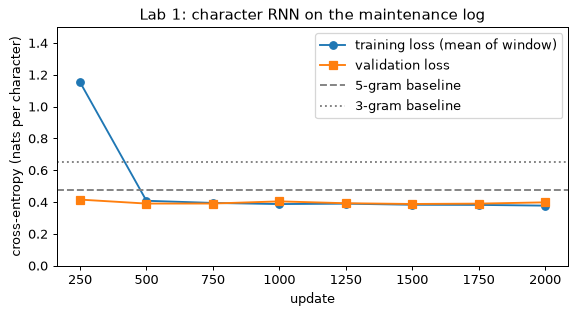
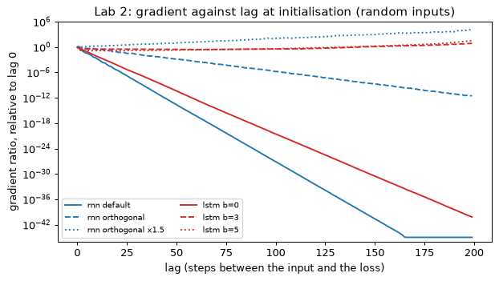
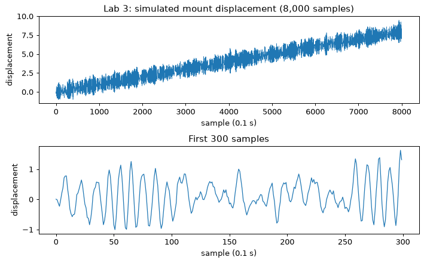
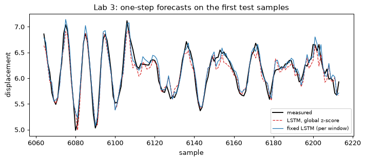
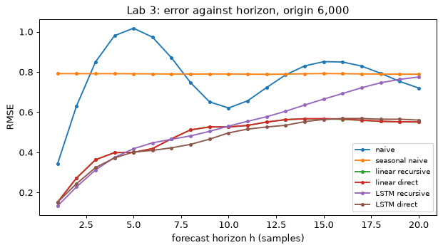
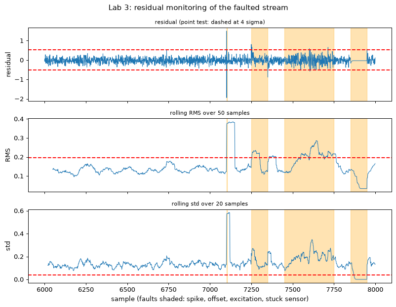
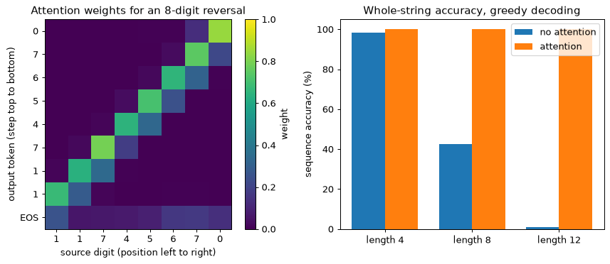
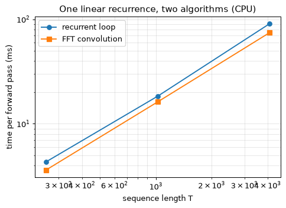
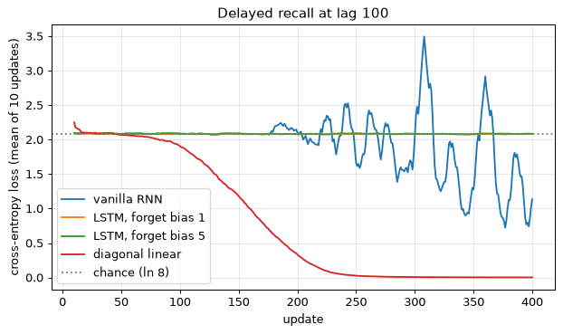

Sequences and the tasks on them
A vibration channel on a pump, the observation series of a digital twin, a maintenance log, a sentence, the frames of a time-lapse: in each, the order of the elements carries meaning. Shuffle the samples of a vibration trace and the resonance it recorded is gone. Three properties set such data apart from the fixed-size vectors of Modules 01 to 03. Order carries meaning: the same values in another order are another signal. Lengths vary: one recording lasts ten minutes and the next ten hours. Dependencies sit at different lags: a vibration sample depends on the excitation a few samples earlier and also on an operating mode set hours earlier.
In engineering practice the observation stream of a monitored asset or its digital twin (temperatures, vibrations and pressures from many sensors) is a multivariate time series; the response curve of a single test, or the cell count of one run of an agent-based tissue simulation, is a short univariate one; and the trajectory of an ODE solver is what a recurrent surrogate would be trained to emulate when the solver is too slow to call inside an optimisation loop.
A sequence is written \mathbf{x}_{1:T} = (\mathbf{x}_1, \dots, \mathbf{x}_T) with \mathbf{x}_t \in \R^{d_{\text{in}}}, and T varies between examples. Targets are one per step, \mathbf{y}_t, or one per sequence. A batch has shape (B, T, d), shorter sequences padded and masked (Section 7).
Four task shapes
The shapes differ in where the outputs are, and so in where the loss is computed (Figure 4.1).
- Many-to-one. Classify a ten-minute pump recording as healthy, cavitating or misaligned; the loss is on the last output only.
- Aligned many-to-many. One output per step: label every second as normal or faulty, or forecast the next value at every step; the loss is summed over steps.
- Sequence to sequence, different lengths. Turn a free-text maintenance note into fault codes, or translate a sentence. Output positions are not aligned with input positions, which needs the encoder–decoder of Section 10.
- One-to-many. Generate a synthetic trace from an initial condition, or a log line from a start symbol, feeding each output back as the next input.
Four task shapes side by side, each a row of input boxes \mathbf{x}_1 \dots \mathbf{x}_T (bottom), recurrent cells (middle) and outputs (top). Many-to-one: one output above the last cell, “fault class”. Aligned many-to-many: an output above every cell, “next value” or “normal/fault”. Sequence to sequence: an encoder row feeding a decoder row of different length, “note → fault codes”. One-to-many: one input, outputs fed back as next inputs, “generate a trace”. A tag under each reads “causal” or “offline”.
Online and offline
May \mathbf{y}_t depend on inputs after t? An online, or causal, task must answer at time t from \mathbf{x}_{1:t} alone: forecasting and monitoring a running machine. An offline task has the whole recorded sequence first: labelling a recorded test afterwards, tagging the words of a finished sentence. Only offline tasks may read the sequence in both directions (the bidirectional networks of Section 6). A model that has seen the future, evaluated on a causal task, is a leak with excellent validation numbers (Section 8).
Predicting the next element
The chain rule of probability factorises any distribution over sequences exactly:
A model of the next element given the past is therefore a complete generative model: sample \mathbf{x}_1, feed it back, sample \mathbf{x}_2, and so on. Maximum likelihood trains it by summing per-step cross-entropies for symbols, or squared errors for real values with Gaussian noise (Module 01). This is the language-modelling objective of Module 07 and the one-step forecast of Section 8.
Why a fixed window is not enough
The obvious alternative feeds the last w values to the multilayer perceptron of Module 02. It is a baseline worth fitting, with three faults. The window is a guess: anything older is invisible. Each window position has its own weights, so a pattern learned at position 3 must be learned again at position 7. And the first layer grows linearly with w.
A window MLP reading the last w = 64 values of a univariate signal into 32 hidden units has
A recurrent layer with d_{\text{in}} = 1 and H = 32 (Section 2) gives each unit 32 weights from the previous state, one from the input and one bias:
PyTorch’s nn.RNN(1, 32) reports 1,120 because it keeps two bias vectors that simply add
(Section 2).
Two inductive biases
Recurrence builds in stationarity: one update rule at every step, so weights are shared across time, the analogue of a convolution’s translation equivariance in Module 03. It also builds in a state, a fixed-size summary \mathbf{h}_t of everything seen so far. A 1D convolution shares weights across time too, but each output sees a fixed window that grows only with depth; a recurrence’s receptive field is unbounded in principle. Whether training can use it is the subject of Sections 3 and 4.
Read as an engineer, \mathbf{h}_t = f(\mathbf{h}_{t-1}, \mathbf{x}_t), \mathbf{y}_t = g(\mathbf{h}_t) is the discrete-time nonlinear state-space model of control, \mathbf{x}_{k+1} = f(\mathbf{x}_k, \mathbf{u}_k), with the state renamed \mathbf{h} and the input \mathbf{x}. Anyone who has written a Kalman filter has written a recurrence by hand, from a known model; a recurrent network learns f and g from data and gives up the guarantees of the known linear-Gaussian model. Section 12 completes this comparison:
| Model | Receptive field | Shares weights across time | Sequential steps |
|---|---|---|---|
| Window MLP | fixed, w | no | 1 |
| 1D CNN / TCN | grows with depth and dilation | yes | 1 per layer |
| RNN | unbounded in principle | yes | T |
| Attention | whole sequence | yes | 1 per layer (Section 12) |
A model must flag each second of a recorded flight-test vibration trace as normal or flutter, after the flight. Which task shape is this, and may \mathbf{y}_t depend on later inputs?
Show answer
Aligned many-to-many, that is, sequence labelling. The task is offline, so \mathbf{y}_t may depend on later inputs and a bidirectional model is allowed.
Why does doubling an MLP forecaster’s window double its first-layer parameters, while a recurrent layer’s count is unchanged?
Show answer
The MLP has separate weights for every window position; the recurrent layer applies the same weights at every step, so its count does not depend on how many steps it reads.
The recurrent network
The simplest recurrent network, the Elman network (Elman 1990), keeps a state vector and updates it once per step with one layer:
The shapes are \mathbf{h}_t \in \R^{H}, \mathbf{x}_t \in \R^{d_{\text{in}}}, \mathbf{W}_h \in \R^{H \times H}, \mathbf{W}_x \in \R^{H \times d_{\text{in}}}, \mathbf{W}_y \in \R^{d_{\text{out}} \times H}, \mathbf{b} \in \R^{H} and \mathbf{c} \in \R^{d_{\text{out}}}; \mathbf{z}_t is the pre-activation. The initial state \mathbf{h}_0 is zero or a learned vector. The nonlinearity \phi is \tanh by default, for three reasons: it is bounded, so the state cannot grow without limit however long the sequence; it is zero-centred; and its derivative is 1 at the origin, so a small state passes through almost linearly. Each hidden state \mathbf{h}_t is a function of the whole prefix \mathbf{x}_{1:t}, through the chain of updates.
The batched form
Frameworks store a batch as (B, T, d) with each example a row, so the same equations are written with row vectors and transposed weights. With \mathbf{X}_t \in \R^{B \times d_{\text{in}}} the inputs at step t and \mathbf{H}_t \in \R^{B \times H} the states (bold \mathbf{H}_t is the matrix, italic H its width),
One loop over t with two matrix multiplies per step:
import torch
def rnn_forward(X, W_h, W_x, b, h0):
"""X: (B, T, d_in); h0: (B, H). Returns all states, (B, T, H)."""
pre_in = X @ W_x.T + b # input part for every step at once: (B, T, H)
h, states = h0, []
for t in range(X.shape[1]): # the recurrent part must run one step at a time
h = torch.tanh(h @ W_h.T + pre_in[:, t])
states.append(h)
return torch.stack(states, dim=1)
The input projection does not depend on the state, so it is computed for all steps in one large multiply before the loop; only the product with \mathbf{W}_h has to wait for the previous step. Optimised implementations do the same.
Unrolling
The weights are the same at every step. Drawn with its self-loop the network is one small cell; drawn out over T steps, or unrolled in time, it is a T-layer feed-forward network in which every layer has the same weights (Figure 4.2). Training is backpropagation through that unrolled graph, the subject of Section 3.
Left: a folded recurrent cell, a box labelled tanh, with input \mathbf{x}_t below, output \mathbf{y}_t above and a self-loop labelled \mathbf{W}_h carrying \mathbf{h}_{t-1} back in. Right: the same cell unrolled over four steps, \mathbf{h}_0 entering from the left and arrows \mathbf{h}_1 \to \mathbf{h}_2 \to \mathbf{h}_3 \to \mathbf{h}_4. Every horizontal arrow is labelled \mathbf{W}_h, every vertical input arrow \mathbf{W}_x and every output arrow \mathbf{W}_y, the same labels everywhere to show the sharing. A per-step loss \mathcal{L}_t above each output feeds a sum \mathcal{L}.
Parameters and loss
Counting the matrices and vectors above,
PyTorch’s nn.RNN keeps two bias vectors, bias_ih_l0 and bias_hh_l0, that are simply added;
the second exists for compatibility with NVIDIA’s cuDNN kernels and adds no expressive power. Its
recurrent layer therefore has H(H + d_{\text{in}} + 2) parameters.
For an aligned task the loss is the sum of per-step losses, \mathcal{L} = \sum_t \mathcal{L}_t(\mathbf{y}_t, \text{target}_t), usually averaged over steps and over the batch so that the learning rate does not depend on T or B. For a many-to-one task only \mathcal{L}_T is used.
What the state does
The behaviour of the state is easiest to see with one unit.
Take h_t = \tanh(w h_{t-1} + u x_t) with u = 1, no bias, h_0 = 0 and an input pulse \mathbf{x} = (1, 0, 0).
w = 0.5.
The memory of the pulse roughly halves each step. The local derivative of each step, \partial h_t / \partial h_{t-1} = w(1 - h_t^2), is
w = 2.
The state latches near 1: the pulse is remembered, but by a unit in saturation. The local derivatives are 2(1 - 0.7616^2) = 0.840, 2(1 - 0.9093^2) = 0.347 and 2(1 - 0.9487^2) = 0.200, falling as the unit saturates.
Both settings give local factors below 1. A small weight forgets, a large one saturates, and either way the factors that Section 3 multiplies together are already shrinking.
A character-level language model
Lab 1 trains this network to predict the next character of a synthetic maintenance log whose
lines look like F2 pres 4.0 bar night shift ok /F2. The vocabulary has V characters. The
input \mathbf{x}_t is a one-hot vector, all zeros except a 1 at the index of the current
character, so \mathbf{W}_x\mathbf{x}_t is simply the column of \mathbf{W}_x for that
character: the multiply is implemented as a column lookup, which is what an embedding layer is.
The output \mathbf{y}_t \in \R^{V} holds logits over the next character, the softmax turns
them into probabilities, and the loss is the mean cross-entropy against the character that
actually comes next, in nats per character (divide by \ln 2 for bits).
At initialisation the output weights are small, the logits are close to zero and the softmax is close to uniform, 1/V for every character, so the first loss should be close to -\ln(1/V) = \ln V. This is the sanity check of Module 02: a first loss far from \ln V means a bug before any training has happened. (Module 07 turns this quantity into perplexity; this module stays with nats per character.)
V = 37 characters, H = 128 state units, one bias vector:
| Tensor | Shape | Parameters |
|---|---|---|
| \mathbf{W}_x | 128 \times 37 | 4,736 |
| \mathbf{W}_h | 128 \times 128 | 16,384 |
| \mathbf{b} | 128 | 128 |
| \mathbf{W}_y | 37 \times 128 | 4,736 |
| \mathbf{c} | 37 | 37 |
| total | 26,021 |
The formula agrees: 128(128 + 37 + 1) + 37(128 + 1) = 21{,}248 + 4{,}773 = 26{,}021. The first loss should be \ln 37 = 3.611 nats per character.
Sampling, with a temperature
A trained model generates text by the one-to-many shape of Section 1: feed a start character, draw the next one from the predicted distribution, feed it back, repeat. A temperature \tau divides the logits before the softmax, so the next character is drawn from \softmax(\mathbf{y}_t / \tau). With \tau < 1 the distribution sharpens towards the most probable character; with \tau > 1 it flattens. For logits (2, 1, 0) the probabilities are (0.665, 0.245, 0.090) at \tau = 1, (0.867, 0.117, 0.016) at \tau = 0.5 and (0.506, 0.307, 0.186) at \tau = 2. Low temperature gives repetitive but well-formed text; high temperature gives variety and more mistakes. Lab 1 measures both.
Where this came from
Recurrent networks of this kind were studied throughout the 1990s, and their training problems, the subject of Section 4, were understood by the middle of that decade. Their revival came in 2013–2015, when gated recurrent networks generated convincing handwriting and character-level text (Graves 2013), and Karpathy’s 2015 essay on character-level models showed a small network writing plausible prose, source code and markup one character at a time. Those character models are the direct ancestors of the language models of Module 07.
An RNN has d_{\text{in}} = 10 and H = 64, with one bias vector. How many parameters does its recurrent layer have, and how does that change when the sequence length doubles?
Show answer
64 \times (64 + 10 + 1) = 64 \times 75 = 4{,}800. It does not change: the same weights are applied at every step, so the count does not depend on the sequence length.
A freshly initialised character model over 37 symbols reports a first loss of 7.2 nats. What does that suggest?
Show answer
A bug or a bad initialisation. An uninformed model should score close to \ln 37 = 3.61 nats. A loss of 7.2 means the output layer starts confidently wrong, usually because its initial weights are too large, or the loss is summed over steps rather than averaged.
Backpropagation through time
Unrolled, a recurrent network is a deep feed-forward network whose layers share their weights. Training it is Module 02’s backward pass with layers replaced by time steps, with one difference that matters: because every step uses the same weights, each weight’s gradient collects a contribution from every step. This is backpropagation through time (BPTT).
Set-up and conventions
Take the network of Section 2 with a loss summed over steps:
Gradients are column vectors with the shape of the variable. A Jacobian \partial\mathbf{a}/\partial\mathbf{b} has entry (i, j) equal to \partial a_i/\partial b_j, so the chain rule for a gradient reads \partial\mathcal{L}/\partial\mathbf{b} = (\partial\mathbf{a}/\partial\mathbf{b})^\top\, \partial\mathcal{L}/\partial\mathbf{a}. The order of the factors below follows from this convention and is not optional.
The backward recursion
Define \boldsymbol{\delta}_t = \partial\mathcal{L}/\partial\mathbf{h}_t, the total derivative of the whole loss with respect to the state at step t. The state \mathbf{h}_t influences the loss along two paths: through \mathbf{y}_t into \mathcal{L}_t, and through \mathbf{z}_{t+1} into everything that happens later. The multivariate chain rule adds the two paths:
The two Jacobians are read off the equations: \partial\mathbf{y}_t/\partial\mathbf{h}_t = \mathbf{W}_y and \partial\mathbf{z}_{t+1}/\partial\mathbf{h}_t = \mathbf{W}_h. Because \phi acts element by element, its Jacobian is the diagonal matrix \operatorname{diag}(\phi'(\mathbf{z}_t)), and the gradient with respect to the pre-activation is an elementwise product. Call it \mathbf{g}_t:
with the second term absent at t = T, where nothing comes later. Run from t = T down to t = 1, this is the error signal of Module 02’s backward pass, travelling backwards in time instead of down through layers (Figure 4.3, left).
Parameter gradients are sums over time
Imagine that step t had its own copy \mathbf{W}_h^{(t)} of the recurrent matrix. The loss depends on the shared \mathbf{W}_h through every copy, so its gradient is the sum of the gradients with respect to the copies. Within step t the copy enters only through \mathbf{z}_t = \mathbf{W}_h^{(t)}\mathbf{h}_{t-1} + \dots, which gives Module 02’s outer product \mathbf{g}_t\mathbf{h}_{t-1}^\top. Hence
The recursion unrolled
The recursion hides what the gradient is made of. Write the Jacobian of one step of the recurrence as
Through the state alone, \partial\mathbf{h}_s/\partial\mathbf{h}_t = \mathbf{J}_s\mathbf{J}_{s-1}\cdots\mathbf{J}_{t+1} for s > t. Transposing for the gradient reverses the order, so the contribution of the loss at step s to the gradient at the state of step t is
The factor nearest the loss, \mathbf{J}_s^\top, acts on the gradient first. Matrices do not commute, so writing the factors in another order, or as \operatorname{diag}(\phi')\,\mathbf{W}_h^\top, gives a different matrix unless every \phi' is the same.
Substituting into the parameter gradient turns it into a double sum, over the step s where a loss is incurred and every earlier step t \le s where \mathbf{W}_h was used:
where the product is empty (the identity) when t = s. Each term carries s - t Jacobian factors. Terms with s - t small are short-range: they teach the network how an input affects the next few outputs. Terms with s - t large are long-range, and they are the only terms that can teach it a dependency across many steps. Section 4 is about how large a product of many Jacobians can be. The recursion computes the whole double sum in one backward sweep by reusing partial products; evaluating each term separately would take O(T^2) matrix-vector products.
Take the scalar network of Section 2: w = 0.5, u = 1, no bias, h_0 = 0, \mathbf{x} = (1, 0, 0), so h = (0.7616, 0.3634, 0.1797). Put a single loss on the last state, \mathcal{L} = \tfrac12(h_3 - 0.5)^2 = \tfrac12(-0.3203)^2 = 0.0513.
Backward. \tanh' = 1 - h^2, and with no loss at steps 1 and 2 the recursion is g_t = (1 - h_t^2)\,w\,g_{t+1}:
Parameter gradients, summed over steps:
The only nonzero input entered two steps before the loss, so its gradient passed through two Jacobian factors, J_3 = w(1 - h_3^2) = 0.484 and J_2 = w(1 - h_2^2) = 0.434, whose product is 0.21. Central differences, (\mathcal{L}(w + \epsilon) - \mathcal{L}(w - \epsilon))/2\epsilon with \epsilon = 10^{-6} in float64, give -0.21506 and -0.028243, the same values to the digits shown.
Cost
Per layer, the forward pass spends about B \cdot T \cdot H^2 multiply-adds on the recurrent product (plus B \cdot T \cdot H \cdot d_{\text{in}} on the inputs). The backward pass spends about twice that: one product with \mathbf{W}_h^\top to pass \mathbf{g}_{t+1} back, and one outer product to accumulate \mathbf{g}_t\mathbf{h}_{t-1}^\top. It is sequential in t like the forward pass. It also needs every \mathbf{h}_t and \mathbf{z}_t of the forward pass, so its memory is O(B \cdot T \cdot H): proportional to the sequence length.
There is a forward-mode alternative. Real-time recurrent learning (Williams and Zipser 1989) carries the sensitivity \partial\mathbf{h}_t/\partial\mathbf{W}_h forward with the state and updates it at every step, so it stores nothing from the past and gives a gradient at every step, online. The sensitivity is an H \times H^2 array, and updating it needs the product of an H \times H matrix with it: O(H^4) work per step, against BPTT’s O(H^2). At H = 128 that is 2.7 \times 10^8 multiply-adds per step per sequence, and 2.1 million numbers of storage per sequence, which is why RTRL is not used at scale.
Truncated BPTT
A long stream does not fit in memory as one unrolled graph. Truncated BPTT cuts it into
chunks of k steps. The state is carried forward from one chunk to the next, but the gradient is
not: the graph is cut at each chunk boundary (Figure 4.3, right). In PyTorch the cut is one
call, detach():
h = torch.zeros(1, B, H)
for X, Y in chunks: # consecutive k-step pieces of the same B streams
h = h.detach() # keep the value, cut the graph behind it
out, h = rnn(X, h)
loss = loss_fn(head(out), Y)
opt.zero_grad()
loss.backward()
opt.step()
Memory falls from O(B \cdot T \cdot H) to O(B \cdot k \cdot H). The price is that a dependency longer than k steps never receives a gradient directly. Information can still flow forward through the carried state, so the network may use a long dependency it happens to carry, but nothing in the loss tells it to learn one. A common variant updates every k_1 steps and backpropagates k_2 \ge k_1 steps (Williams and Peng 1990).
Memory sizes in this module are decimal: 1 kB = 10^3 B, 1 MB = 10^6 B, 1 GB = 10^9 B. Binary units are written KiB, MiB and GiB (1 GiB = 2^{30} B) and are given in brackets where a size is a power of two or recurs in another module.
A stream of T = 100{,}000 sensor samples, a batch of B = 32 streams, H = 256 state units, float32 (4 bytes). Keeping every \mathbf{h}_t for full BPTT takes
for the states alone. An LSTM (Section 5) keeps about six tensors of that size per step (its gates, cell state and output), about 6 \times 3.28 \approx 20 GB. With truncation to chunks of k = 200 steps the same buffer is
500 times smaller, at the cost of no direct gradient beyond 200 steps.
Left: the unrolled graph of Figure 4.2 with forward arrows in grey and backward arrows in red: \boldsymbol{\delta}_t arrives from \mathcal{L}_t (vertical) and from \boldsymbol{\delta}_{t+1} through \phi' and \mathbf{W}_h^\top (horizontal). Below it, a strip shows \partial\mathcal{L}/\partial\mathbf{W}_h as a sum of per-step outer products \mathbf{g}_t\mathbf{h}_{t-1}^\top. Right: a long stream cut into chunks of k steps, with scissors at the boundaries: the grey state arrow continues across each cut (forward), the red gradient arrow stops at it (“detach”).
Checking the gradients
A hand-written backward pass is checked as in Module 02: on a tiny model in float64, perturb a few entries of every parameter by \pm\epsilon (\epsilon = 10^{-5}), form the central difference, and compare it with the analytic gradient by the relative error |a - n| / \max(|a|, |n|). Errors around 10^{-6} to 10^{-9} mean the backward pass is right; anything above 10^{-4} is a bug. Lab 1 does this before training. A typical recurrent bug, a missing \mathbf{W}_h^\top\mathbf{g}_{t+1} term, passes a check with T = 1 and fails at T = 4, so check with several steps.
Why are an RNN’s parameter gradients sums over time steps?
Show answer
The same \mathbf{W}_h, \mathbf{W}_x and \mathbf{b} are used at every step. The loss depends on each weight through every one of those uses, and the multivariate chain rule adds the contribution of each use.
With truncated BPTT of k = 25 steps, can the model use information from 50 steps ago?
Show answer
It can carry it in the state, because the state is passed across chunk boundaries, but no gradient ever tells it to. Dependencies longer than k are learned only indirectly, if at all. Lab 1’s closing tag, which must repeat an opening tag 18 to 36 characters earlier, is the concrete case.
Vanishing and exploding gradients
Every long-range term of Section 3 contains a product of n Jacobians, n being the distance between a use of the weights and the loss it affects. Such a product shrinks or grows geometrically in n and almost never stays of order 1. This, not a lack of capacity, is what kept plain recurrent networks from learning long dependencies.
One unit, no nonlinearity
For a linear scalar recurrence h_t = wh_{t-1} + ux_t every Jacobian equals w, so \partial h_T/\partial h_{T-n} = w^n:
| w | n = 10 | n = 50 | n = 100 |
|---|---|---|---|
| 0.5 | 9.8 \times 10^{-4} | 8.9 \times 10^{-16} | 7.9 \times 10^{-31} |
| 0.9 | 0.349 | 5.2 \times 10^{-3} | 2.7 \times 10^{-5} |
| 0.99 | 0.904 | 0.605 | 0.366 |
| 1.01 | 1.10 | 1.64 | 2.70 |
| 1.1 | 2.59 | 117 | 1.4 \times 10^{4} |
| 2 | 1.0 \times 10^{3} | 1.1 \times 10^{15} | 1.3 \times 10^{30} |
Take a ratio of 10^{-3} as the edge of a useful learning signal. It is reached at lag n = \ln 10^{-3} / \ln w:
Even w = 0.99 runs out: 0.99^{500} = 6.6 \times 10^{-3}. On the other side, 1.01^{100} = 2.70 is harmless, 1.1^{50} = 117 is not, and 2^{50} = 1.1 \times 10^{15} wrecks any update. For w = 0.5 the factor reaches the smallest normal float32 number, 2^{-126} \approx 1.2 \times 10^{-38}, at n = 126. Only a narrow band around |w| = 1 carries a signal across hundreds of steps.
Many units, still linear
Without a nonlinearity the gradient is multiplied by \mathbf{W}_h^\top at each step back. If \mathbf{W}_h = \mathbf{Q}\boldsymbol{\Lambda}\mathbf{Q}^{-1} is diagonalisable, then (\mathbf{W}_h^\top)^n = \mathbf{Q}^{-\top}\boldsymbol{\Lambda}^n\mathbf{Q}^\top: in the coordinates \mathbf{a} = \mathbf{Q}^\top\mathbf{g} each component is multiplied by \lambda_i^n. Components with |\lambda_i| < 1 vanish, those with |\lambda_i| > 1 explode, and eventually the largest |\lambda_i| dominates, so the gradient points along one direction whatever output it came from. The long-run rate is the spectral radius \rho(\mathbf{W}) = \max_i |\lambda_i|; Gelfand’s formula, \lVert\mathbf{W}^n\rVert^{1/n} \to \rho(\mathbf{W}), makes this hold in any norm, diagonalisable or not.
\mathbf{W}_h = \begin{pmatrix} 0.8 & 0.3 \\ 0.3 & 0.8 \end{pmatrix} is symmetric with eigenvalues 0.8 \pm 0.3: \lambda_1 = 1.1 along (1, 1)/\sqrt2, \lambda_2 = 0.5 along (1, -1)/\sqrt2. Send back \mathbf{g} = (1, 0) = \tfrac12(1, 1) + \tfrac12(1, -1):
- n = 1: (0.55 + 0.25,\ 0.55 - 0.25) = (0.8, 0.3).
- n = 20: \tfrac12(1.1)^{20} = 3.364 and \tfrac12(0.5)^{20} = 4.8 \times 10^{-7}, so (3.364, 3.364), norm 4.76.
- n = 50: (58.70, 58.70), norm 83.0.
The 0.5-component has vanished (0.5^{20} = 9.5 \times 10^{-7}) and the gradient points along (1, 1). Now make the units tanh, both sitting at |h| \approx 0.6, so \tanh' = 1 - 0.6^2 = 0.64 at every step. Along (1, 1) the per-step factor is 1.1 \times 0.64 = 0.704: 0.704^{20} = 8.9 \times 10^{-4} and 0.704^{50} = 2.4 \times 10^{-8}. The nonlinearity has turned an exploding direction into a vanishing one.
A bound from the singular values
Eigenvalues describe the long run; singular values bound every step. Since \mathbf{J}_k^\top = \mathbf{W}_h^\top\operatorname{diag}(\phi'(\mathbf{z}_k)),
with \gamma = \sup|\phi'| (1 for tanh and ReLU, 1/4 for the logistic sigmoid \sigma) and \sigma_{\max} the largest singular value. Hence (Pascanu, Mikolov and Bengio 2013) \gamma\sigma_{\max} < 1 is sufficient for vanishing, and \gamma\sigma_{\max} > 1 is necessary for exploding: it allows growth without forcing it.
Non-normal matrices grow before they decay. \mathbf{N} = \begin{pmatrix} 0.5 & 1 \\ 0 &
0.5 \end{pmatrix} has \rho = 0.5 but \sigma_{\max} = 1.207; \lVert\mathbf{N}^n\rVert for
n = 1 to 5 is 1.207, 1.059, 0.770, 0.508, 0.316, and 0.0196 at n = 10. PyTorch’s default
nn.RNN initialisation is of this kind. It draws \mathbf{W}_h uniformly from
[-1/\sqrt H, 1/\sqrt H], entry variance 1/(3H); the eigenvalues of such a random matrix fill a
disc of radius about 1/\sqrt3 = 0.58, while its largest singular value approaches
2/\sqrt3 = 1.15. Lab 2 measures \rho \approx 0.57 and \sigma_{\max} \approx 1.10 for
H = 64.
What the nonlinearity adds
In \mathbf{J}_k = \operatorname{diag}(\phi'(\mathbf{z}_k))\mathbf{W}_h, the tanh derivative 1 - \tanh^2 z is 1 only at z = 0: 0.42 at z = 1, 0.071 at z = 2, 0.0099 at z = 3. Every unit that leaves the linear region multiplies a small factor into the product, so even an orthogonal \mathbf{W}_h, every singular value exactly 1, loses the gradient. Explosion needs \rho well above 1, because a large gain drives the units into saturation and partly cancels itself.
A simulation gives the sizes: H = 32, orthogonal \mathbf{W}_h scaled to radius \rho, tanh, independent inputs of standard deviation \sigma_x added to the pre-activation at every step, a random unit gradient sent back from the last step. With \rho = 1 and \sigma_x = 1 one draw gives ratios of 1.8 \times 10^{-2}, 5.5 \times 10^{-11} and 5.1 \times 10^{-21} at lags 10, 50 and 100, where a linear network keeps exactly 1. With \sigma_x = 0.1 it is still 1.3 \times 10^{-3} at lag 100; with \rho = 1.5, 1.3 \times 10^{-7}; only \rho = 3 explodes (5.5 \times 10^{8}). Other draws change these by a factor of a few, not their order of magnitude.
Why vanishing is worse than it looks
The long-range terms of the gradient are exponentially smaller than the short-range ones, so the total gradient looks healthy, the loss falls and the network learns short-range correlations; the long dependency’s contribution is buried under them and under minibatch noise. The network is never told the dependency exists. Hochreiter identified this in his 1991 diploma thesis; Bengio, Simard and Frasconi (1994) showed it with networks asked to latch one bit over growing delays, and showed that storing a bit robustly, with contracting dynamics around a stable state, is exactly the condition that makes the gradient vanish. The latching unit of Section 2 is a small instance: its local factors fell to 0.347 and 0.200.
In Lab 1 the consequence is behavioural. The RNN learns every local rule of the log, including a numerical threshold, but its samples close a line with the tag that opened it 18 to 36 characters earlier only about one time in five at temperature 0.5 (21% in Lab 1’s run, 14 to 25% for the plain RNN of Lab 2), against 12.5% for guessing among the eight asset tags. The LSTMs of Lab 2 learn it.
Cliffs, and clipping
Where the product of Jacobians is large, the loss surface has a near-vertical wall (Figure 4.4). A step proportional to the huge gradient at its foot throws the parameters far away: a loss spike or NaN, often after thousands of quiet updates.
A one-dimensional slice of a recurrent network’s loss against one parameter: a gently sloping valley interrupted by a near-vertical wall, the cliff. From a point at its foot, an unclipped gradient step leaps far off the plot, while a clipped step of bounded length in the same direction stays in the valley. After the picture in Pascanu, Mikolov and Bengio (2013).
Gradient clipping by the global norm replaces \mathbf{g} by (c/\lVert\mathbf{g}\rVert)\,\mathbf{g} whenever \lVert\mathbf{g}\rVert > c: the direction is kept, the step bounded. For recurrent networks c from 1 to 5 is usual (Module 02 gives the general rule). Clipping each component separately, value clipping, changes the direction.
\mathbf{g} = (3, 4) has norm 5; clipping to c = 1 gives (0.6, 0.8), same direction. \mathbf{g} = (30, 0.4) points \arctan(0.4/30) = 0.8^\circ off the first axis. Value clipping to [-1, 1] gives (1, 0.4), at \arctan 0.4 = 21.8^\circ. Norm clipping divides by 30.003 and gives (0.99991, 0.01333), still 0.8^\circ.
Clipping cures exploding gradients and does nothing for vanishing ones: it never enlarges a gradient.
Initialisation, and the structural fix
An orthogonal \mathbf{W}_h (Saxe, McClelland and Ganguli 2014) starts every singular value at
- Identity initialisation with ReLU units (Le, Jaitly and Hinton 2015) is similar, and unitary constraints kept throughout training (Arjovsky, Shah and Bengio 2016) go further. None removes the nonlinearity’s factor, and only the constraints stop training from moving \mathbf{W}_h. The structural fix is an additive path on which the gradient is not multiplied by \mathbf{W}_h and \phi' at every step: the LSTM of Section 5, the same remedy as the residual connection across depth in Module 03.
With tanh units and a \mathbf{W}_h whose largest singular value is 0.8, can gradients explode?
Show answer
No. Every Jacobian has norm at most 1 \times 0.8, so the product over n steps is at most 0.8^n.
Why does an orthogonal \mathbf{W}_h not prevent vanishing gradients in a tanh RNN?
Show answer
The Jacobian also contains \operatorname{diag}(\tanh'(\mathbf{z}_k)), at most 1 and equal to 1 only at z = 0. Whenever units leave the linear region each step multiplies in factors below 1.
Which of gradient clipping and orthogonal initialisation addresses which failure?
Show answer
Clipping bounds every update: exploding gradients. Orthogonal initialisation starts the singular values at 1, which helps against vanishing early in training. Neither fixes vanishing once tanh saturates.
The LSTM: an additive memory path
Section 4 ended with a diagnosis. The per-step Jacobian of a plain recurrence, \operatorname{diag}(\phi'(\mathbf{z}_k))\,\mathbf{W}_h, is a fixed matrix times a derivative of at most 1, and a long product of such factors vanishes whatever the initialisation. The remedy is structural: give the gradient a second path whose per-step factor is a number the network chooses at every step and can hold close to 1. That path is the cell state of the long short-term memory (LSTM).
The equations
The cell keeps two vectors of width H, the cell state \mathbf{c}_t and the hidden state \mathbf{h}_t. At every step it reads the concatenation [\mathbf{h}_{t-1}; \mathbf{x}_t], a vector of length H + d_\text{in}, and computes three gates and a candidate:
Each matrix is H \times (H + d_\text{in}), so \mathbf{W}_f \in \mathbb{R}^{H\times(H+d_\text{in})}. A gate is a vector of numbers in (0, 1) multiplied elementwise into something else: a soft switch set by the current input and the previous output. The forget gate says how much of each stored value to keep, the input gate how much of the candidate to write, the output gate how much of the memory to read. \mathbf{c}_t is the memory; it is never squashed between steps, so its entries can exceed 1. \mathbf{h}_t is the output and working state, bounded by the tanh; it is what the next layer, the head and the next step’s gates see. Figure 4.5 draws the cell.
The LSTM cell. A horizontal line across the top carries \mathbf{c}_{t-1} to \mathbf{c}_t through a multiply node (\times\,\mathbf{f}_t) and an add node (+\,\mathbf{i}_t\odot\tilde{\mathbf{c}}_t), drawn thick and highlighted as “the additive path”. Below it, four small boxes \sigma, \sigma, tanh, \sigma compute \mathbf{f}_t, \mathbf{i}_t, \tilde{\mathbf{c}}_t and \mathbf{o}_t from [\mathbf{h}_{t-1};\mathbf{x}_t]; a tanh applied to \mathbf{c}_t is multiplied by \mathbf{o}_t to give \mathbf{h}_t. A red dashed arrow runs right to left along the top line, labelled \partial\mathbf{c}_t/\partial\mathbf{c}_{t-1} = \operatorname{diag}(\mathbf{f}_t).
Why the cell path keeps its gradient
Differentiate the cell update with respect to \mathbf{c}_{t-1}. The term \mathbf{f}_t\odot\mathbf{c}_{t-1} depends on it directly; the gates and the candidate depend on it through \mathbf{h}_{t-1} = \mathbf{o}_{t-1}\odot\tanh(\mathbf{c}_{t-1}). With \mathbf{W}_f^{h} the H\times H block of \mathbf{W}_f that multiplies \mathbf{h}_{t-1} (and likewise for the others), the product and chain rules give
with, for example, \partial\mathbf{f}_t/\partial\mathbf{h}_{t-1} = \operatorname{diag}(\mathbf{f}_t\odot(1-\mathbf{f}_t))\,\mathbf{W}_f^{h} and \partial\mathbf{h}_{t-1}/\partial\mathbf{c}_{t-1} = \operatorname{diag}(\mathbf{o}_{t-1}\odot(1-\tanh^2\mathbf{c}_{t-1})). The bracketed terms have the shape of a plain recurrence’s Jacobian, a weight block times derivatives of saturating functions, and long products of them can vanish for the reasons of Section 4.
The first term is different. Follow only it from step t to step T:
The product is diagonal: unit j’s gradient is multiplied by f_{k,j} at step k and by nothing else. There is no matrix power, so no eigenvalue below 1 shrinks the signal; there is no tanh derivative, so saturation does not enter; and each factor is a gate value the network sets per step from the data, holding it near 1 while unit j must remember and dropping it when it need not. With \mathbf{f}\approx\mathbf{1} the gradient passes through many steps unchanged: Hochreiter and Schmidhuber’s constant error carousel.
The total gradient sums over all paths, and the indirect ones can still vanish; they carry short-range credit. The cell path carries the long-range credit, telling the network that a distant input mattered. It is the remedy of the residual connection across depth in Module 03: a path the gradient travels without a weight matrix at every stage.
Take H = 1, c_{t-1} = 1.0, and pre-activations 2 (forget), 0 (input), 1 (candidate) and 0 (output).
Gates: f_t = \sigma(2) = 1/(1+e^{-2}) = 0.8808; i_t = \sigma(0) = 0.5; \tilde c_t = \tanh(1) = 0.7616; o_t = \sigma(0) = 0.5.
Cell update: c_t = 0.8808\cdot 1.0 + 0.5\cdot 0.7616 = 0.8808 + 0.3808 = 1.2616.
Output: h_t = 0.5\cdot\tanh(1.2616) = 0.5\cdot 0.8515 = 0.4258.
Along the direct path, \partial c_t/\partial c_{t-1} = f_t = 0.8808. The cell now holds a value above 1, which a tanh-bounded state could not; the output gate has read out about a third of it.
History, briefly
The 1997 LSTM of Hochreiter and Schmidhuber had input and output gates and a cell self-connection of fixed weight 1: the carousel, with no way to clear it, so on long streams the cell filled up. The forget gate was added by Gers, Schmidhuber and Cummins (2000); the form above is what everyone now means by “LSTM”. Peephole connections (gates that also read \mathbf{c}) came soon after and are rarely used now. Greff et al. (2017) compared eight variants and found none significantly better than the standard cell; the forget gate and the output activation mattered most.
The forget-gate bias
At initialisation the weights are small, so each forget gate sits near \sigma(b_f): the default memory per step. Over n steps the cell path multiplies the gradient by about \sigma(b_f)^n, and solving \sigma(b_f)^n = 0.5 for n gives the half-life of the default memory:
Since 1-\sigma(b) = 1/(1+e^{b}), the time constant 1/(1-f) of a memory with retention f = \sigma(b_f) is exactly 1 + e^{b_f} steps: each unit of bias multiplies the time scale by about e. With b_f = 0 the gate starts at 0.5 and the half-life is one step. The gradient from a target 20 steps away arrives at a millionth of its size, and the network must discover from that signal that remembering pays; it can spend its first thousand updates forgetting everything.
Compute f = \sigma(b_f), then f^{20}, f^{100} and the half-life \ln 0.5/\ln f:
| b_f | f = \sigma(b_f) | f^{20} | f^{100} | half-life (steps) |
|---|---|---|---|---|
| 0 | 0.5000 | 9.5\times10^{-7} | 7.9\times10^{-31} | 1.0 |
| 1 | 0.7311 | 1.9\times10^{-3} | 2.5\times10^{-14} | 2.2 |
| 2 | 0.8808 | 0.079 | 3.1\times10^{-6} | 5.5 |
| 3 | 0.9526 | 0.378 | 7.8\times10^{-3} | 14.3 |
| 4 | 0.9820 | 0.696 | 0.163 | 38.2 |
| 5 | 0.9933 | 0.874 | 0.511 | 103 |
Check one row by hand: \sigma(3) = 1/(1+e^{-3}) = 1/1.0498 = 0.9526; \ln 0.9526 = -0.04859; 20\times(-0.04859) = -0.9717 and e^{-0.9717} = 0.378; the half-life is -0.6931/(-0.04859) = 14.3 steps. Moving b_f from 0 to 3 turns a gradient factor of 10^{-6} at lag 20 into one of 0.4.
Training moves the bias, but the starting value decides which gradients arrive early on. Jozefowicz, Zaremba and Sutskever (2015) found that a forget bias of 1 closed most of the gap they measured between the LSTM and the GRU. Chrono initialisation (Tallec and Ollivier 2018) sets each unit’s b_f from the expected range of dependency lengths, by the time-constant relation: to remember for about T steps, take b_f \approx \ln(T-1). A forget bias of 1 or 2 is the single most useful LSTM trick.
In PyTorch
nn.LSTM stacks the four gates’ weights into one matrix per layer: weight_ih_l0 has shape
(4H, d_in) and weight_hh_l0 shape (4H, H), in the order i, f, g, o, where g is
PyTorch’s name for the candidate \tilde{\mathbf{c}}. There are two bias vectors,
bias_ih_l0 and bias_hh_l0, which simply add, so the effective forget bias is
bias_ih_l0[H:2*H] + bias_hh_l0[H:2*H]. Every weight and bias is initialised from
U(-1/\sqrt{H}, 1/\sqrt{H}), so the default forget bias is about 0: the half-life-of-one-step
regime of the table. Setting it takes a few lines:
import torch
import torch.nn as nn
def set_forget_bias(lstm: nn.LSTM, value: float) -> None:
"""Make the effective forget-gate bias equal `value` in every layer and direction."""
H = lstm.hidden_size
with torch.no_grad():
for name, p in lstm.named_parameters():
if name.startswith("bias_ih"):
p[H:2 * H].fill_(value) # gates are stacked i, f, g, o
elif name.startswith("bias_hh"):
p[H:2 * H].zero_() # the two bias vectors add
lstm = nn.LSTM(input_size=1, hidden_size=32, batch_first=True)
set_forget_bias(lstm, 1.0)
Parameters and compute
Four matrices of size H\times(H+d_\text{in}) and four biases give 4H(H + d_\text{in} + 1) parameters; PyTorch’s two bias vectors make it 4H(H + d_\text{in}) + 8H, four times a plain recurrent layer of the same width. Each step computes four matrix-vector products of size H\times(H + d_\text{in}): about 8H(H + d_\text{in}) floating-point operations per step and per sequence, counting a multiply-add as two.
nn.LSTM(1, 32): 4\cdot 32\cdot(32 + 1) + 8\cdot 32 = 4{,}224 + 256 = 4{,}480.
A two-layer forecaster, nn.LSTM(1, 32, num_layers=2): the second layer reads the first layer’s
32-wide output, so it has 4\cdot 32\cdot(32 + 32) + 256 = 8{,}192 + 256 = 8{,}448. The stack
totals 4{,}480 + 8{,}448 = 12{,}928; a Linear(32, 1) head adds 32 + 1 = 33, giving
12{,}961, the number Lab 3 prints.
What the cells learn
Karpathy, Johnson and Fei-Fei (2016) inspected character-level LSTMs trained on text and code and found a few cells that track interpretable quantities, such as position within a line or being inside a quotation: a forget gate held near 1 and an input gate that opens on one character make these easy. Most cells admit no such reading.
What the labs show
In Lab 2, with forget bias 0 an LSTM’s gradient decays with lag like a plain network’s; with bias 3 or 5 the gradient ratio stays between about 0.14 and 0.4 out to lag 100. On Lab 1’s maintenance log, after 2,500 updates, the closing tag (18 to 36 characters after its opening tag) is right 14 to 25% of the time for a plain RNN, near the 12.5% of guessing, and 64 to 96% for the LSTMs with forget bias 0 and 1 (Lab 2’s run and a second seed). Which of the two LSTMs is ahead changes with the seed; the gap between the gated cells and the plain one does not.
Along the LSTM’s cell path the gradient is multiplied at each step by the forget gate, a number the network chooses and can hold near 1, not by a fixed matrix and a tanh derivative.
What is \partial\mathbf{c}_t/\partial\mathbf{c}_{t-1} along an LSTM’s direct path, and why does it not vanish the way \mathbf{W}_h^n does?
Show answer
It is \operatorname{diag}(\mathbf{f}_t): gate values the network sets per step and per unit and can hold near 1. There is no tanh derivative and no fixed matrix raised to a power in it.
You set nn.LSTM’s bias_ih_l0[H:2*H] = 1 and leave bias_hh_l0 at its default. What is the
effective initial forget bias?
Show answer
About 1, plus a small per-unit term drawn from U(-1/\sqrt{H}, 1/\sqrt{H}), because the two bias
vectors add. To make it exactly 1, also zero bias_hh_l0[H:2*H].
The GRU, stacking and bidirectional networks
The gated recurrent unit (GRU) of Cho et al. (2014) builds the same additive path with one state and two gates. This section compares it with the LSTM, then turns to the two ways recurrent layers are composed: stacked in depth, and run in both directions.
The GRU
The update gate decides, per unit, how far to move the state towards the candidate. The reset gate decides how much of the old state the candidate may see; with \mathbf{r}_t\approx\mathbf{0} a unit starts afresh from the input. Differentiating the last line as in Section 5 gives \partial\mathbf{h}_t/\partial\mathbf{h}_{t-1} = \operatorname{diag}(1-\mathbf{z}_t) plus terms through the gates and the candidate: along the direct path the gradient is multiplied by 1-z_{k,j} per step, held near 1 by keeping the update gate near 0. It is the LSTM’s trick with one state instead of two. Figure 4.6 draws the cell.
The GRU cell, drawn in the same style as Figure 4.5. \mathbf{h}_{t-1} enters and splits: one path is scaled by (1-\mathbf{z}_t); the other passes through the reset gate \mathbf{r}_t into the tanh candidate \tilde{\mathbf{h}}_t, which is scaled by \mathbf{z}_t. The two are added to give \mathbf{h}_t. The (1-\mathbf{z}_t) path is highlighted as the additive path.
The sign convention for \mathbf{z} varies. Cho et al. (2014) and PyTorch write \mathbf{h}_t = (1-\mathbf{z}_t)\odot\mathbf{n}_t + \mathbf{z}_t\odot\mathbf{h}_{t-1}, so their \mathbf{z} means keep; this module uses it to mean update. They are the same model with \mathbf{z} replaced by 1-\mathbf{z}, but a bias meant to favour memory must have the right sign: in PyTorch a positive update-gate bias favours memory. PyTorch also applies the reset gate after the hidden matrix multiply, \mathbf{n}_t = \tanh(\mathbf{W}_{in}\mathbf{x}_t + \mathbf{b}_{in} + \mathbf{r}_t\odot(\mathbf{W}_{hn}\mathbf{h}_{t-1} + \mathbf{b}_{hn})), a minor variant, and stacks its gates in the order r, z, n.
An engineering reading: a learned low-pass filter
Hold the update gate at a constant z. Then h_t = (1-z)\,h_{t-1} + z\,\tilde h_t is an exponential moving average of the candidate, the discrete form of a first-order low-pass filter. Its impulse response decays as (1-z)^n, so its memory half-life is \ln 0.5/\ln(1-z) steps; with samples \Delta t apart, 1 - z = e^{-\Delta t/\tau} defines its time constant \tau. The GRU is a bank of such filters whose time constants the input sets per unit and per step: a unit can integrate slowly through a steady stretch, then snap to a new value when its gates open.
With a constant update gate z = 0.1, each step keeps 1 - z = 0.9 of the state. The half-life is \ln 0.5/\ln 0.9 = -0.6931/(-0.10536) = 6.58 steps; after 20 steps 0.9^{20} = 0.12 of the original value remains. At a 100 Hz sampling rate that is a filter with time constant \tau = -0.01/\ln 0.9 = 0.095 s.
Parameters, and the evidence
Three blocks instead of four give 3H(H + d_\text{in} + 1) parameters with one bias per block, and 3H(H + d_\text{in}) + 6H in PyTorch: three quarters of an LSTM of the same width, with the same saving in compute per step.
nn.GRU(1, 32): 3\cdot 32\cdot 33 + 6\cdot 32 = 3{,}168 + 192 = 3{,}360 parameters, against
4{,}480 for nn.LSTM(1, 32).
On most tasks the two are comparable. Chung et al. (2014) found the GRU on a par with the LSTM on music and speech modelling, both well ahead of the plain tanh recurrence. Jozefowicz, Zaremba and Sutskever (2015), searching thousands of recurrent architectures, found that setting the LSTM’s forget bias to 1 closed the gap between the LSTM and the GRU. The LSTM keeps an edge where exact counting or long precise memory matters: Weiss, Goldberg and Yahav (2018) showed that LSTMs learn counting languages such as a^n b^n and GRUs in practice do not, because the LSTM’s unbounded cell can act as a counter while the GRU’s state interpolates between bounded values. The practical rule: the LSTM by default, the GRU when parameters or speed are tight. The plain tanh recurrence is a textbook model; the gated cells are what “RNN” means in practice.
Stacking
Recurrent layers stack like the layers of an MLP: layer l reads the whole sequence of hidden
states \mathbf{h}^{(l-1)}_1, \dots, \mathbf{h}^{(l-1)}_T of layer l-1. Two to four layers are
typical, with dropout between them (the dropout argument of nn.LSTM does exactly this, and
nothing with one layer). Deeper stacks train better with residual connections between layers,
\mathbf{h}^{(l)}_t \leftarrow \mathbf{h}^{(l)}_t + \mathbf{h}^{(l-1)}_t: Google’s 2016
translation system used eight-layer LSTM stacks with residual connections (Wu et al. 2016).
Bidirectional networks
A bidirectional RNN (Schuster and Paliwal 1997) runs two recurrent layers over the same sequence, one forwards and one backwards, and concatenates their states, [\overrightarrow{\mathbf{h}}_t; \overleftarrow{\mathbf{h}}_t], of width 2H, so each position sees its past and its future. That is what sequence labelling wants (whether second 340 of a recording is a fault onset depends on what follows it), and it is the standard encoder of the attention models of Section 11. It is unusable for forecasting, monitoring or any online task: the backward direction has read the future, which at deployment does not exist yet. Figure 4.7 shows a stacked bidirectional network.
A stacked bidirectional network over five time steps: two layers, each with a row of forward cells (arrows left to right) and a row of backward cells (arrows right to left). At each step the two states are concatenated (a small join symbol) and passed up to the next layer. At the right, a red cross over a “forecast x_{t+1}” box, captioned “the backward row has read x_{t+1}”.
nn.LSTM(16, 64, num_layers=2, bidirectional=True), with H = 64.
Layer 1 reads 16 inputs in each direction: 4\cdot 64\cdot(16 + 64) + 8\cdot 64 = 20{,}480 + 512 = 20{,}992 per direction, so 2\times 20{,}992 = 41{,}984.
Layer 2 reads the concatenated output, 2H = 128 wide: 4\cdot 64\cdot(128 + 64) + 512 = 49{,}152 + 512 = 49{,}664 per direction, so 2\times 49{,}664 = 99{,}328.
Total 41{,}984 + 99{,}328 = 141{,}312. The second layer costs more than twice the first because bidirectionality doubles its input width.
In a many-to-one model on a bidirectional layer, the states that summarise the whole sequence are
the forward state at the true last step and the backward state at the first step. The
tempting choice, the last position of the concatenated output, is wrong twice over: its backward
half has seen one token, and if the batch is padded its forward half has run over padding. With
packed sequences (Section 7) PyTorch’s returned h_n holds exactly the right two states,
h_n[-2] (forward, last layer) and h_n[-1] (backward, last layer). Lab 4’s encoder
uses them.
Can a bidirectional GRU forecast tomorrow’s bearing temperature?
Show answer
No. Its backward pass reads inputs after the time being predicted; in training those were available and the model learned to use them, but at deployment they do not exist yet.
Which states summarise the whole sequence in a bidirectional many-to-one model?
Show answer
The forward direction’s state at the true last step and the backward direction’s state at the first step. The last position of the output has a backward half that has seen only one token.
Training recurrent networks in practice
Recurrent networks that fail to train usually fail for one of a few reasons: padding that leaks into the loss or the state, state carried where it should not be, default initialisation, dropout in the wrong place, or no clipping. This section collects the practice that avoids them. Optimisers and the general debugging method belong to Module 02; what follows is specific to recurrence.
Variable lengths: pad, mask, pack
The simplest way to batch sequences of different lengths is to pad each to the batch maximum with zeros and keep a mask of ones on real steps and zeros on padding. Every per-step quantity that is summed must then be masked; for the loss that is one line:
loss = (per_step_loss * mask).sum() / mask.sum() # mean over real steps only
The mask must also reach anything else that sums over positions, such as the attention scores of
Section 11. Masking makes the loss right but still computes every padded step. Packing
does not: PyTorch’s pack_padded_sequence arranges the batch so that at each time step only the
sequences still running are computed, and pad_packed_sequence turns the output back into a padded
tensor with zeros after each length. Figure 4.8 draws a padded batch, its mask and its packed
form.
For bidirectional layers packing is essential, not just economical. The backward direction must start at each sequence’s true last step; on a padded, unpacked batch it first reads a run of zeros, so its states on the real tokens depend on how much padding the batch happened to need. Two more habits help. Bucketing (batching sequences of similar length together) wastes less on padding. And for a many-to-one task, gather the state at each sequence’s true last step, not the last column:
from torch.nn.utils.rnn import pack_padded_sequence, pad_packed_sequence
lengths = torch.tensor([50, 120, 200])
packed = pack_padded_sequence(x, lengths, batch_first=True, enforce_sorted=False)
out_packed, (h_n, c_n) = lstm(packed) # x: (3, 200, d_in), padded
out, _ = pad_packed_sequence(out_packed, batch_first=True)
last = out[torch.arange(len(lengths)), lengths - 1] # equals h_n[-1] for one direction
Three sequences of lengths 50, 120 and 200 padded to 200 occupy 3\times 200 = 600 positions, of which 50 + 120 + 200 = 370 are real. The other 230, 230/600 = 38\% of the computation, is padding. With an unmasked mean loss those 230 positions are trained on as if they were data (the model learns to predict zeros after zeros) and dilute the real steps of the short sequences. With a masked loss the 370 real steps carry all the weight; with packing the network also executes only those 370 steps.
Top: a padded batch drawn as a 3\times 8 grid (lengths 2, 5 and 8 cells, to scale for 50, 120 and 200 steps); real cells filled, padding hatched, and beside it the mask matrix of ones and zeros. Middle: the same batch packed by time step, as columns of decreasing height (3, 3, 2, 2, 2, 1, 1, 1 sequences active). Bottom: one long stream cut into chunks for stateful training, with the state arrow passing from chunk to chunk, a “detach” mark at each boundary and a “reset” mark at the stream’s end.
State handling
Stateless training resets the state to zero at the start of every sequence: the default, and
right whenever sequences are independent examples. Stateful training cuts one long stream into
consecutive chunks and carries each chunk’s final state into the next, which is truncated BPTT
(Section 3). Three rules apply. Detach the state at each chunk boundary
(h = h.detach()). Reset it between streams and before evaluation. Keep stream i in batch row
i for every chunk, so the state in row i belongs to the data that continues there, as
Lab 1 does (Figure 4.8, bottom). Carrying state across unrelated sequences teaches the model the batch order
rather than the data.
Initialisation
Initialise \mathbf{W}_h orthogonally (Section 4). Set the LSTM’s forget-gate bias to 1 or 2 (Section 5). Make the output weights small, so that the initial loss is about \ln V for V classes, or about the target variance for regression; a first loss far from that is the earliest sign of a bug.
Regularisation
Dropout goes on the inputs and between stacked layers. On the recurrent connection, a fresh mask at every step perforates the state a hundred times over 100 steps, and long dependencies are lost. The form that works there is variational dropout (Gal and Ghahramani 2016): one mask per sequence, reused at every step. An alternative drops recurrent weights instead, DropConnect on \mathbf{W}_h, as in the AWD-LSTM of Merity, Keskar and Socher (2018). Weight decay applies as usual. Early stopping needs a validation split, and small corpora need it most: trained on six Shakespeare sonnets (3,715 characters; Lab 1’s third Try-this item), Lab 1’s network reached its lowest validation loss after about 250 updates in a run made when this module was prepared, and the validation loss then rose while the training loss kept falling.
Normalisation
Normalise inputs per channel with training statistics only (Module 01); when the level drifts, normalise per window (Section 8). Inside the cell, layer normalisation (Ba, Kiros and Hinton 2016) normalises each step’s pre-activations across units, which helps where activations drift over long sequences. Batch normalisation is awkward across time: its statistics would have to be kept per time step, and sequences differ in length.
Clipping, optimiser, speed
Clip the global gradient norm at 1 to 5, always (Section 4), and log the norm before
clipping: a rising trend often precedes a blow-up, and the log is the first thing to read when the
loss turns into NaN. Adam or AdamW with a learning rate of 10^{-3} to 3\times10^{-3} is a good
default for small recurrent models. On a GPU, nn.LSTM and nn.GRU call fused cuDNN kernels far
faster than a Python loop over nn.LSTMCell. On a CPU, small recurrent models are dominated by
per-step overhead rather than arithmetic, so batch many sequences: a batch of 64 costs much less
than 64 times a batch of 1.
A debugging checklist
- Check the initial loss against \ln V (or the target variance).
- Overfit one small batch. If the model cannot, the bug is in the model or the loss.
- Gradient-check a tiny model in float64 with central differences (Lab 1).
- Plot the gradient norm against lag (Lab 2); if it is 10^{-10} at the lag your task needs, no amount of training will find the dependency.
A bidirectional encoder is trained on zero-padded batches without packing and then tested on unpadded inputs, and short inputs suddenly fail. Why?
Show answer
In training the backward direction read the padding before the real tokens, so its states on short inputs were those that follow a run of zeros. At test time it starts on a real token, a state it never saw. Pack the sequences so the backward pass starts at each true last step (Lab 4).
Where can dropout go in an LSTM without damaging its memory?
Show answer
On the inputs and between stacked layers. On the recurrent connection only in the variational form, with the same mask at every step of a sequence.
Forecasting time series honestly
Forecasting is the commonest engineering use of recurrent networks: the next hour’s bearing temperature, the next minute of a vibration signal. It is also where a number that means nothing is easiest to report. This section is about the evaluation discipline that makes the number trustworthy, and one failure the obvious code commits.
Framing: windows and horizons
From a series x_1, \dots, x_N, slide a window of length W along it with stride 1: inputs x_{t-W+1}, \dots, x_t, target x_{t+1} for a one-step forecast or x_{t+1}, \dots, x_{t+h} for horizon h. Other measured channels and exogenous inputs known in advance (operating conditions, set-points, a production schedule) become extra input channels, so a batch has shape (B, W, \text{channels}).
Four leaks in time
A forecast is honest only if each prediction uses nothing that would not exist at that moment. Four leaks break this.
- Shuffled overlapping windows. Adjacent windows share W - 1 values. Shuffle and split at random, and nearly every test window has a near-copy in training: the “forecast” is interpolation.
- Normalisation with the whole series. Statistics computed over training and test together tell the model where the test data lie.
- Features computed with future data. A centred moving average, a forward-backward filter or a bidirectional layer (Section 6) reads values after t.
- Choosing on the test period. Hyperparameters or a stopping epoch picked by test error make the test error a training error.
All four break Module 01’s rule: split by the unit that will be new at deployment. For a forecaster that unit is the future.
With W = 64 and stride 1, each window shares 63 of its 64 values with each neighbour. Split 3,000 such windows at random, 80/20. A test window has no 63-value near-copy in training only if both neighbours also landed in the test set, probability about 0.2\times 0.2 = 0.04. So about 96% of test windows have one. The chance that none of the four nearest windows (sharing 62 or 63 values) is in training is 0.2^4 = 0.0016.
Walk-forward validation
The time-respecting alternative is walk-forward or rolling-origin validation (Tashman 2000; Hyndman and Athanasopoulos, Forecasting: Principles and Practice). Train on everything before a forecast origin (an expanding window, or a sliding one if old data are no longer representative), validate on a block after it, move the origin forward, refit, repeat. When h > 1, leave a gap of at least h steps between the last training target and the first validation input. Report the mean and spread over folds (Figure 4.9).
Top: a time axis with four walk-forward folds stacked vertically; in each, a blue expanding training block, a small grey gap, then an orange validation block, the origin moving right fold by fold. Bottom, crossed out in red: a shuffled split, with blue and orange windows interleaved along the same axis and two overlapping windows magnified to show their 63 shared samples.
Baselines, and a score that includes one
An error means nothing without a trivial forecaster’s error on the same data.
- Naive (persistence): \hat x_{t+h} = x_t, “tomorrow equals today”; strong at short horizons.
- Seasonal naive: the same phase one period m earlier, \hat x_{t+h} = x_{t+h-m} for h \le m; strong at long horizons on periodic signals.
- Linear autoregression: least-squares regression of the target on the same windows (Module 01). The strongest cheap baseline, and the optimal predictor for a linear system with Gaussian noise; a network that does not beat it has found nothing nonlinear.
- The training mean, which a model that has learned no dynamics drifts towards.
The mean absolute scaled error (Hyndman and Koehler 2006) builds a baseline into the score:
where the denominator is the in-sample MAE of the one-step naive forecast on the N training values (or of the seasonal naive, with lag m). It is unit-free, and MASE < 1 means the model beats the naive forecast’s in-sample accuracy.
Training values (10, 14, 12, 8, 11, 15, 13, 9), period m = 4; the next four true values (12, 16, 14, 10).
Naive: every forecast is 9. Errors 3, 7, 5, 1; MAE = 16/4 = 4.0.
Seasonal naive: the forecasts copy the last cycle, (11, 15, 13, 9). Errors 1, 1, 1, 1; MAE = 1.0.
Scale: the in-sample one-step naive errors are |14-10|, |12-14|, \dots, |9-13| = 4, 2, 4, 3, 4, 2, 4, mean 23/7 = 3.286.
MASE on this scale: naive 4.0/3.286 = 1.22, seasonal naive 1.0/3.286 = 0.30. The seasonal naive forecast, which knows the period, wins by a factor of four.
Normalising per window when the level drifts
z-scoring with training statistics avoids leak 2 but fails when the series drifts. A network learns a map on the range of inputs it saw; at a level it never saw its saturating units flatten out, and it does not extrapolate as a linear model would. The obvious code commits exactly this error.
The series is \sin t + 0.05t plus Gaussian noise of standard deviation 0.1, sampled every 0.1
time units, 4,000 points: the first 3,000 for training, the rest for testing, z-scored with
training statistics, windows of W = 64, a two-layer nn.LSTM(1, 32, num_layers=2) (12,961
parameters with its head), 15 epochs of AdamW with clipping. Every step looks careful. A run with
seed 0, made when this module was prepared, gives:
LSTM test RMSE 1.075; naive 0.155. Seven times worse than “tomorrow equals today”.
The cause is the drift. After normalisation the training inputs span -1.92 to 1.92, the test inputs 1.46 to 3.10. Most of the test period lies at levels the network never saw, and there its predictions are biased low: the mean error is -0.87 in the series’ units.
The fix: subtract each window’s last value from its inputs, predict the change, add the value back. The same model then scores about 0.12 to 0.14, depending on the seed, against the naive 0.155. A least-squares linear autoregression on the same windows scores 0.099, at the noise floor (no one-step forecast can beat the noise’s standard deviation of 0.1 except by chance). On a sinusoid plus drift plus noise, a linear model is the right tool. Lab 3 runs the same model on a nonlinear signal that also drifts: it loses to persistence there too (RMSE 0.43 against 0.36, mean error -0.32), the fix brings it to 0.13, and on that signal the LSTM has something to add over the linear model.
The change is three lines in forward:
def forward(self, x): # x: (batch, W, 1)
last = x[:, -1:, :] # each window's last value, (batch, 1, 1)
out, _ = self.lstm(x - last) # the network sees shape, not level
return self.head(out[:, -1]).squeeze(-1) + last[:, 0, 0]
Differencing the series does the same job, as does reversible instance normalisation (RevIN; Kim et al. 2022), which normalises each input window by its own mean and standard deviation and inverts that on the output. With many series, normalise each by its own statistics.
Multi-step forecasts: recursive or direct
Beyond one step there are two strategies (compared by Ben Taieb et al. 2012). Recursive: iterate a one-step model, appending each prediction to the window. Its errors compound, because it reads its own mistakes as inputs: the forecasting form of the exposure bias of Section 10. Direct: one model per horizon, or one network with h outputs predicting all of them from the observed window; it never reads its own predictions. For a least-squares linear model with a long window the two nearly coincide: when the window holds the system’s whole linear state, iterating the best one-step linear predictor gives the best h-step one, which is what the direct regression estimates. For a nonlinear model they differ, often a lot. Step 5 of Lab 3 plots error against horizon for both strategies: the recursive LSTM is the best forecaster at h = 1 (RMSE 0.13), and at h = 20 it is worse than the naive forecast (0.78 against 0.72) and well behind the direct LSTM and both linear models (about 0.55 to 0.56; the two linear strategies coincide).
Point forecasts and intervals
A decision usually needs to know how far to trust a forecast. Give the network a second output for
the variance and train with the Gaussian negative log-likelihood
\tfrac12\ln\hat\sigma^2 + (y-\hat\mu)^2/(2\hat\sigma^2) (nn.GaussianNLLLoss), or train
quantile outputs with the pinball loss \max(\tau u, (\tau-1)u) on the error
u = y - \hat y_\tau. Either gives the residual scale that Section 9’s thresholds need;
check the coverage on held-out data first.
Where neural forecasters stand
As of 2026, conservatively: on a single series of modest length, well-tuned classical methods (exponential smoothing, ARIMA) and linear models remain hard to beat. In the M4 competition (2018, 100,000 series) the pure machine-learning entries did poorly, and the winner was a hybrid of exponential smoothing and a recurrent network (Makridakis, Spiliotis and Assimakopoulos 2020; Smyl 2020). Neural forecasters such as DeepAR (Salinas et al. 2020) earn their place with many related series, exogenous inputs and nonlinear dynamics, as in a monitored fleet of assets.
A forecasting number is only as good as its split and its baseline: evaluate on the future, normalise with the past, and report the naive, seasonal naive and linear errors beside the model’s.
Your LSTM forecaster’s validation RMSE is a third of the naive forecast’s, using a random 80/20 split of overlapping windows. What do you check first?
Show answer
Leakage. Split by time (walk-forward) and compute normalisation statistics on the training part only. With overlapping windows almost every test window has a near-copy in training, so the advantage usually shrinks or disappears once the split respects time.
Why can a seasonal naive forecast beat a sophisticated model at long horizons?
Show answer
Its error does not grow with the horizon: it copies the same phase of the last cycle, whatever h is. A one-step model iterated forward reads its own errors as inputs and compounds them.
A forecaster scores MASE 0.8. Good or bad?
Show answer
It beats the naive forecast’s in-sample error by 20%. Whether that is good depends on the decision the forecast serves and on the other baselines: if a linear autoregression reaches 0.6 on the same split, the network is losing.
Monitoring sensor streams: anomalies from forecast residuals
A forecaster trained on normal operation is a learned model of normal dynamics. The difference between what the sensor reports and what the model predicted, the residual
stays small while the asset behaves as it did in training and grows when it does not. A large residual is an anomaly. This turns every forecaster of Section 8 into a monitor, one component of a digital twin: the twin predicts, the plant reports, and the disagreement is watched. With a physics model in place of the forecaster the logic is unchanged: control engineers call it model-based fault detection (Isermann 2006).
Thresholds come from held-out normal data
Set the alarm threshold on normal data the model was not trained on, never on the training residuals: the model fitted those, so they are optimistically small, and a threshold at their tail fires too often in service.
Suppose the residuals were independent and Gaussian with standard deviation \sigma, sampled once a second: 86,400 samples a day. A two-sided threshold at k\sigma is exceeded with probability p = 2(1-\Phi(k)), with \Phi the standard normal distribution function.
- k = 3: p = 2.70\times10^{-3}, and 86{,}400\times 2.70\times10^{-3} = 233 false alarms a day.
- k = 4: p = 6.33\times10^{-5}, 5.5 a day.
- k = 5: p = 5.73\times10^{-7}, 0.05 a day: one every 20 days.
Require instead three consecutive 3\sigma exceedances. For independent samples a given run of three all exceed with probability p^3 = 1.97\times10^{-8}, about 0.0017 a day: apparently a hundred thousand times better than one 3\sigma test.
Real residuals break both assumptions. They are autocorrelated (a forecaster wrong at one step is usually wrong the same way at the next), so runs are far more common than p^3 says; and they are heavy-tailed, because normal operation contains rare events such as start-ups. Set the threshold at an empirical quantile of the held-out residuals, chosen for a tolerable false-alarm rate, and add a persistence rule, k exceedances among the last n samples, measured on the same data.
Each fault type needs its own detector
Faults look different in the residual, and a detector built for one can be blind to another.
| Fault | What the residual does | Detector |
|---|---|---|
| Spike, abrupt onset | one large value | point test \lvert r_t\rvert > k\sigma |
| Changed dynamics or noise level | larger on average, rarely extreme | rolling RMS of r_t, or CUSUM |
| Stuck or flat-lined sensor | too small: a constant is perfectly predictable | rolling standard deviation below a floor |
| Sustained level offset | large at onset and end only | level check against an independent reference |
The rolling RMS over n samples averages away single values and responds to a sustained rise in residual energy. The CUSUM (Page 1954) accumulates evidence instead: S_t = \max(0,\, S_{t-1} + r_t^2/\sigma^2 - \kappa), with \kappa a little above 1 (the normal mean of r_t^2/\sigma^2), alarming when S_t passes a limit.
The last row needs care. A forecaster with per-window normalisation (Section 8’s fix) re-centres on a new level within one step, so it sees an offset only where it starts and ends. A sustained offset needs a reference that does not move with the sensor: a redundant sensor, the twin’s physics prediction, or longer-horizon residuals from a model that does not re-centre. Figure 4.10 draws the pipeline and the signature of each fault in its detector.
Top: the monitoring pipeline as boxes: sensor stream, forecaster, residual r_t, three detectors in parallel (point test \lvert r_t\rvert > 4\sigma; rolling RMS over 50 samples; rolling standard deviation below a floor), alarm log. Bottom: four small schematic panels, one per fault type of the table (spike, sustained offset, increased excitation, stuck sensor), each sketching the residual during the fault and the one statistic that catches it, with its threshold dashed and the fault interval shaded: a single tall residual spike; two short residual bursts at the start and end of the offset; a rolling RMS that rises above its limit; a rolling standard deviation that falls below its floor.
Lab 3 injects four faults into the stiffening-mount signal: a spike of +1.5, an offset of +0.8, doubled random forcing, and a frozen sensor. On the normal hold-out the residual standard deviation is \sigma = 0.131, so the point threshold is 4\sigma = 4\times 0.131 = 0.52. The 50-sample rolling RMS alarms above 1.1 times its hold-out maximum; the 20-sample rolling standard deviation alarms below half its hold-out minimum. The lab’s run gives:
- Spike: the point test fires at once, and once more on the next sample, whose input window ends in the spike.
- Offset: the point test fires around its onset and at its end only (3 alarm samples in all: the onset, 4 samples later, and the end).
- Doubled excitation: few residuals are extreme (five point alarms, the first 151 samples in), but the residual RMS rises from 0.134 to about 0.21; the rolling RMS alarms 99 samples after the change (85 with a second training seed).
- Stuck sensor: no residual alarm while it is stuck (one point alarm on the sample where it recovers); the variance floor fires 21 samples after it sticks, once its window has filled with near-constant residuals.
- Normal stretches (239 samples): no false alarm from any of the three detectors, too short a record to estimate a false-alarm rate.
Measuring a monitor
Four numbers judge a monitor: the detection delay from fault onset to first alarm; events detected, counted over fault events rather than samples; false alarms per day on a long normal record; and precision, which a low base rate destroys (Module 01). At 5.5 false alarms a day and one real fault a month there are 30\times5.5 = 165 false alarms per true one, a precision near 1/166 = 0.6\%. Real faults are too rare to measure any of this, so inject synthetic faults of every type into held-out normal data, as Lab 3 does.
Many channels
Forecast every channel from all channels, form the residual vector \mathbf{r}_t\in\mathbb{R}^m, and score it with the Mahalanobis distance d_t^2 = \mathbf{r}_t^\top\boldsymbol{\Sigma}^{-1} \mathbf{r}_t, with \boldsymbol{\Sigma} the residual covariance on normal data. It catches a pattern that breaks the usual correlation between channels when no single channel is unusual. Gaussian residuals give d_t^2 \sim \chi^2_m; in practice the threshold is again an empirical quantile. Hundman et al. (2018) applied the pattern to spacecraft telemetry, with LSTM forecasts and thresholds on smoothed prediction errors; it serves pumps, bearings and structures equally. Scoring an autoencoder’s reconstruction error is Module 05’s alternative.
Why set the alarm threshold on held-out normal data rather than on the training residuals?
Show answer
The model fitted the training data, so its training residuals are optimistically small. A threshold at their tail sits too low for residuals on unseen data and fires too often in service.
A stuck sensor produces no alarms from a residual threshold. Why, and what catches it?
Show answer
A constant signal is perfectly predictable, so the residuals shrink instead of growing. A test for residual (or signal) variance below a floor, over a short rolling window, catches it.
Sequence to sequence: encoder, decoder, teacher forcing and search
Many sequence tasks map an input of one length to an output of another: translating a sentence, summarising a report, turning a free-text maintenance note into a structured record, reversing a string of digits (Lab 4). No alignment between input step j and output step t is given, and the output length is not known in advance. The encoder–decoder, or sequence to sequence (seq2seq) model, handles both (Sutskever, Vinyals and Le 2014; Cho et al. 2014).
Encoder and decoder
An encoder RNN reads the source x_1, \dots, x_S and keeps its final state as a summary, \mathbf{c} = \mathbf{h}_S. A decoder RNN starts from that summary and generates the output one token at a time, each step conditioned on its own state and on the token it produced last:
Here f_\text{enc} and f_\text{dec} are LSTM or GRU cells, g is a learned map (often the identity, or a linear layer with a tanh), and \mathbf{y}_{t-1} is the embedding of the previous token. Two special tokens frame the output: the first decoder input is a begin-of-sequence token (BOS), and the decoder ends the output by emitting end-of-sequence (EOS), which is how it chooses the output length. The model defines a distribution over whole output sequences by the chain rule of probability:
Training with teacher forcing
Training maximises the log-likelihood of the target sequence given the source:
With teacher forcing, the decoder input at step t is the true previous token y_{t-1}, not the model’s own guess. Every decoder input is then known before the forward pass starts: no sampling loop is needed, and every step is trained on a clean prefix with an ordinary cross-entropy. A transformer decoder can then compute all positions in parallel (Module 06). An RNN decoder still loops, because \mathbf{s}_t needs \mathbf{s}_{t-1}, but it loops without generating anything. Figure 4.11 sets training and inference side by side.
Two panels with the same encoder, a row of cells reading the digits 3 9 1 4, and the same decoder. Training: the decoder inputs are BOS, 4, 1, 9, the true previous tokens, drawn in green, and each output is compared with its target. Inference: the decoder inputs are the model’s own previous outputs, drawn in orange; one wrong token is highlighted, and the outputs after it are shaded to show the error compounding.
Exposure bias
At test time there is no true previous token; the decoder conditions on its own outputs. One wrong token puts it in a state no training step produced, the next prediction is less reliable, and errors compound. Ranzato et al. (2016) named this exposure bias: the model was only ever exposed to correct prefixes. Lab 4 measures it. For the model without attention at length 12, token accuracy is 74% when each step is given the true prefix (teacher-forced) and 53% when the model runs on its own outputs (free-running); at length 8, 91% against 80%; at length 4 there is no gap worth the name (99.7% against 99.4%).
Scheduled sampling (Bengio et al. 2015) feeds the model’s own prediction in place of the true token with a probability that rises during training, so it learns to recover from its mistakes. Training on the model’s own rollouts does the same more directly. Sequence-level objectives score whole generated outputs; the reinforcement-learning methods of Module 09 are their modern form. Whatever the training, evaluate free-running: it is the only mode deployment has.
Decoding: greedy and beam search
The model gives p(y_t \mid y_{<t}, x) one step at a time. To produce an output we want the most probable sequence, \argmax_{y} p(y \mid x). Greedy decoding takes the most probable token at each step and feeds it back. It does not find the most probable sequence, because a token that looks best now can lead only to poor continuations. Exact search is out of reach: with a vocabulary of V = 10{,}000 and outputs of 20 tokens there are V^{20} = 10^{80} candidates.
Beam search is the compromise. Keep the k best partial sequences (the beam), scored by cumulative log-probability \sum_t \ln p(y_t \mid y_{<t}, x). At each step extend every hypothesis by every token, score the k\cdot V extensions, and keep the best k. A hypothesis that emits EOS is finished: set it aside and continue with the rest. Stop when the beam is empty or a length limit is reached, and return the best finished hypothesis. With k = 1 it is greedy decoding; k = 4 to 10 is typical in translation.
A decoder over the tokens \{A, B, \langle e\rangle\}, where \langle e\rangle is EOS. Its probabilities are:
- step 1: A 0.5, B 0.4, \langle e\rangle 0.1;
- after A: A 0.3, B 0.3, \langle e\rangle 0.4;
- after B: A 0.9, B 0.05, \langle e\rangle 0.05;
- after any two tokens: \langle e\rangle with probability 1.
Greedy. Step 1 picks A (0.5). After A the best token is \langle e\rangle (0.4). Output A\langle e\rangle with probability 0.5\times0.4 = 0.20.
Beam search, k = 2. Step 1 keeps A (0.5) and B (0.4). Step 2 scores the six extensions:
BA: 0.4\times0.9 = 0.36; A\langle e\rangle: 0.5\times0.4 = 0.20; AA: 0.5\times0.3 = 0.15; AB: 0.15; BB: 0.4\times0.05 = 0.02; B\langle e\rangle: 0.02.
The best two are BA (0.36) and A\langle e\rangle (0.20). A\langle e\rangle is finished and is set aside; BA continues and must end with \langle e\rangle, so BA\langle e\rangle has probability 0.36\times1 = 0.36. The best finished hypothesis is BA\langle e\rangle, 0.36/0.20 = 1.8 times as probable as greedy’s answer.
In log scores: \ln 0.36 = -1.022 and \ln 0.20 = -1.609. Divided by the length in tokens (3 and 2): -0.341 and -0.805. Here both scorings agree. Figure 4.12 draws the search tree.
The beam-search tree of the toy example. The root has children A (0.5), B (0.4) and \langle e\rangle (0.1); the second level shows the three children of A and of B with their sequence probabilities. The two hypotheses kept at each level are outlined in bold and pruned ones are grey. The greedy path is dashed blue and ends at A\langle e\rangle (0.20); the beam’s answer BA\langle e\rangle (0.36) is bold green.
Beam search has a known bias. Each token multiplies the probability by a number below 1, so summed log-probabilities favour short outputs, and a larger beam, which searches harder, finds more short high-scoring hypotheses: past a point, widening the beam gives shorter and worse outputs. Length normalisation divides the score by a power of the length, \ln p(y\mid x)/|y|^\alpha with 0 < \alpha \le 1; Wu et al. (2016) use the smoothed divisor \big((5+|y|)/6\big)^\alpha. A minimum length is a cruder guard. Beam search serves tasks that want the single best output; when diverse outputs are wanted, sampling serves better (Module 07). Nor can search repair a model that does not know the answer: in Lab 4, beam search with k = 4 leaves the bottleneck model at 0 correct strings out of 200 at length 12, as greedy decoding does, and its token accuracy falls from 52.3% to 49.1%: the beam finds outputs the model rates as more probable, and they are no more correct.
The bottleneck
Everything the decoder knows about the source passes through one vector of fixed size. Sutskever et al. found that reversing the order of the source sentence improved their translations substantially. Reversal puts the first source words next to the first target words, so the earliest dependencies the decoder needs are short; that such a trick helps at all is a symptom of the bottleneck. Cho, van Merriënboer, Bahdanau and Bengio (2014) observed translation quality falling as sentences grew longer. Lab 4 measures it cleanly: reversing digit strings with a GRU encoder–decoder whose summary is 64 numbers, sequence accuracy is about 98% at length 4, 43% at length 8 and 1% at length 12 (one run; another seed moves the middle value by several points). Section 11 removes the bottleneck.
An encoder–decoder factorises p(y\mid x) token by token; it is trained on true prefixes, decoded on its own, and limited by the single vector that carries the source.
Beam search with k = 1 is which algorithm?
Show answer
Greedy decoding: the beam holds one hypothesis, extended at each step by its single most probable token.
Why does teacher forcing make training easier but create exposure bias?
Show answer
The decoder’s inputs are the known targets, so there is no sampling loop and every step is trained on a correct prefix with a clean signal. But the model never sees its own mistakes, so at test time one wrong token moves it into states it never met in training, and the errors compound.
Attention: from a bottleneck to a soft alignment
The bottleneck of Section 10 is a choice, not a necessity. The encoder computes a state at every source position; the plain encoder–decoder throws all but the last away. Attention (Bahdanau, Cho and Bengio 2015) keeps them all and lets the decoder, at every step, compute its own summary of the source, weighted towards the positions that matter for the token it is about to produce.
The equations
Write the encoder states, the annotations, as \mathbf{h}_1, \dots, \mathbf{h}_S. In Bahdanau et al. they come from a bidirectional encoder (Section 6), \mathbf{h}_j = [\overrightarrow{\mathbf{h}}_j; \overleftarrow{\mathbf{h}}_j], so each one describes position j in the context of the whole source. At decoder step t, three operations turn them into a context vector \mathbf{a}_t:
The score is a one-hidden-layer network that rates how well annotation j fits the decoder’s current need; its parameters \mathbf{W}_a, \mathbf{U}_a and \mathbf{v}_a keep Bahdanau et al.'s names, distinct from the recurrent matrices of Section 2. The softmax turns the scores into weights that are positive and sum to 1 over j; the context is the weighted average of the annotations. The decoder then reads the context alongside its state. In the form Lab 4 uses,
Everything is differentiable, so the score network is trained by the same cross-entropy as the rest; nobody tells the model where to look. Because the score is a sum passed through a tanh, this is called additive attention. Figure 4.13 shows one step.
Attention at one decoder step. On the left, a column of encoder annotations \mathbf{h}_1, \dots, \mathbf{h}_S, each drawn as a stacked pair (forward and backward state). On the right, the decoder state \mathbf{s}_{t-1}. Lines run from \mathbf{s}_{t-1} to each \mathbf{h}_j through a small “score” node; a bar chart of the weights \alpha_{t,j} sits beside the encoder column; a summation node produces \mathbf{a}_t, which feeds the decoder cell together with y_{t-1}.
Shapes, cost and masking
With encoder width H per direction, the annotations have width 2H; the decoder state has width H; the attention width is d_a. Then \mathbf{W}_a \in \mathbb{R}^{d_a\times H}, \mathbf{U}_a\in\mathbb{R}^{d_a\times 2H} and \mathbf{v}_a\in\mathbb{R}^{d_a}. The products \mathbf{U}_a\mathbf{h}_j do not depend on t, so compute them once per source. Each decoder step then adds \mathbf{W}_a\mathbf{s}_{t-1} to S precomputed vectors, applies the tanh, takes S dot products with \mathbf{v}_a and forms a weighted sum of S annotations: O(S(d_a + H)) work. An output of T' tokens costs O(S\,T') such units, a product of the two lengths. This is the first appearance of attention’s quadratic cost.
In a padded batch some source positions are padding. Their scores are set to -\infty before the softmax (in practice -10^9, which the exponential turns into exactly zero), so they receive no weight. Lab 4 does this; forgetting it lets the decoder attend to padding.
Take \mathbf{W}_a = \mathbf{I}, \mathbf{U}_a = \begin{bmatrix}0.5 & -0.5\\ 1 & 0\end{bmatrix}, \mathbf{v}_a = (1, -1), decoder state \mathbf{s}_{t-1} = (0.5, -0.5) and three annotations \mathbf{h}_1 = (1, 0), \mathbf{h}_2 = (0, 1), \mathbf{h}_3 = (1, 1).
- \mathbf{W}_a\mathbf{s}_{t-1} = (0.5, -0.5).
- \mathbf{U}_a\mathbf{h}_1 = (0.5, 1), \mathbf{U}_a\mathbf{h}_2 = (-0.5, 0), \mathbf{U}_a\mathbf{h}_3 = (0, 1).
- Sums: (1, 0.5), (0, -0.5), (0.5, 0.5).
- tanh: (0.7616, 0.4621), (0, -0.4621), (0.4621, 0.4621).
- Scores e_j = \mathbf{v}_a^\top(\cdot), the first component minus the second: 0.2995, 0.4621, 0.
- Weights: \exp(e) = (1.3492, 1.5874, 1), sum 3.9366, so \alpha = (0.3427, 0.4033, 0.2540).
- Context: 0.3427(1,0) + 0.4033(0,1) + 0.2540(1,1) = (0.5967, 0.6573).
The weights sum to 1 and favour \mathbf{h}_2 only mildly: with small scores the softmax stays soft, and the context is a blend.
Alignment
The weights \alpha_{t,j} form a matrix with one row per output step and one column per source position: a soft alignment, saying which source positions the decoder looked at while producing each output. It can be plotted, and Bahdanau et al.'s plots for English–French translation are mostly diagonal, because the languages share word order, with local departures where they do not, such as the swapped order of adjective and noun. For digit reversal the alignment should be the anti-diagonal, and it is. In Lab 4, for an 8-digit input the argmax of each digit row is (7, 6, 5, 4, 3, 2, 1, 0), with peak weights between 0.63 and 0.84: the model has found “look at the mirror position”. Lab 4’s Step 6 plots the heat map. With attention the sequence accuracy is 100% at lengths 4, 8 and 12, against about 98%, 43% and 1% without.
Luong’s variants, and the scale of a dot product
Luong, Pham and Manning (2015) simplified and varied the design. They compared three scores: dot, \mathbf{s}_t^\top\mathbf{h}_j; general, \mathbf{s}_t^\top\mathbf{W}\mathbf{h}_j; and concat, the additive form. They computed attention from the current decoder state \mathbf{s}_t rather than \mathbf{s}_{t-1}; contrasted global attention over all source positions with local attention over a window around a predicted position; and fed each step’s attentional output back as an input to the next step. The dot score has no parameters and turns attention into matrix products, and it is the form the transformer kept. It has one property to watch: its scale grows with the width.
Decoder state \mathbf{s} = (1, 0); the same annotations (1,0), (0,1), (1,1).
Scores \mathbf{s}^\top\mathbf{h}_j = (1, 0, 1). Exponentials (2.7183, 1, 2.7183), sum 6.4366; weights (0.4223, 0.1554, 0.4223). Context 0.4223(1,0) + 0.1554(0,1) + 0.4223(1,1) = (0.8446, 0.5777).
Now \mathbf{s} = (3, 0), the same direction three times longer. Scores (3, 0, 3); exponentials (20.086, 1, 20.086), sum 41.171; weights (0.4879, 0.0243, 0.4879); context (0.9757, 0.5121). The weight on \mathbf{h}_2 fell from 0.155 to 0.024.
Larger scores make the softmax sharper. For vectors with d independent components of zero mean and unit variance, \operatorname{Var}(\mathbf{s}^\top\mathbf{h}) = \sum_{i=1}^{d} \mathbb{E}[s_i^2]\,\mathbb{E}[h_i^2] = d, so typical scores grow like \sqrt d and a wide model’s softmax saturates, with vanishing gradients. Module 06 divides the scores by \sqrt{d_k} for exactly this reason.
Why it works
Every output now has a one-step path to every input, for information and for gradients. Nothing has to be squeezed into one vector, and the gradient from an output to the source position it needs passes through one weighted sum rather than through every encoder and decoder step in between. It is the same argument as the LSTM’s additive path (Section 5) and the residual connection: give the signal a short route. The same device replaces “take the last state” in a many-to-one recurrent classifier: an attention-weighted average of all states, with a learned query vector, pools over time.
From here to Module 06
In the dot form the decoder state plays the role of a query, the encoder states play the keys that are scored and the values that are averaged. Drop the recurrence, let every position of a sequence issue a query against every other position of the same sequence, and the result is self-attention, the core of the transformer. Module 06 takes it from there.
An alignment plot is not an explanation. Attention weights can be changed substantially without changing a model’s prediction, and different weight patterns can give the same output (Jain and Wallace 2019; Wiegreffe and Pinter 2019 qualify when they can be informative). Treat alignments as diagnostics, and confirm a claimed dependence by intervening on the input.
What do the attention weights at one decoder step sum to, and over what?
Show answer
To 1, over the encoder positions j = 1, \dots, S (padded positions receive zero).
Why does attention stop accuracy falling with source length?
Show answer
The decoder reads all encoder states at every step through a weighted sum, so nothing has to fit in one vector, and the path from each output to each input is one step long, for information and for gradients.
Why the transformer replaced recurrence
The recurrent network has two costs built into its structure. Neither can be removed by a better cell, and together they explain why sequence modelling moved first to convolutions and then to the transformer.
Two costs
No parallelism over time. \mathbf{h}_t needs \mathbf{h}_{t-1}, so a sequence of 10,000 tokens is 10,000 dependent steps per layer, however many processors are available. Teacher forcing makes every input known in advance, but it does not help: \mathbf{h}_t depends nonlinearly on \mathbf{h}_{t-1}, which must be computed first. Data parallelism across sequences still works; what suffers is the size of each step’s computation. Each step is one small matrix product per sequence in the batch, too little to keep a modern accelerator busy, and long contexts make the chain longer. For corpora of the size Module 08 describes, the serial chain becomes the bottleneck.
Long paths. Information from position j reaches position t through t - j applications of the recurrence, each of them lossy (Section 4). Attention connects them in one step; a stack of dilated convolutions in about \log_2(t-j).
The convolutional alternative came first
WaveNet (van den Oord et al. 2016) generated audio with stacks of causal dilated 1D convolutions (Module 03): each output sees only the past, and layer l skips d_l - 1 samples between its taps. Bai, Kolter and Koltun (2018) distilled the design into a generic temporal convolutional network (TCN) and found that it matched or beat LSTMs and GRUs on a range of standard sequence benchmarks. A TCN is parallel over time in training, since every output is a convolution of known inputs. With kernel size k and dilations d_1, \dots, d_L, its receptive field is 1 + (k-1)\sum_l d_l samples.
Kernel k = 2, dilations 1, 2, 4, \dots, 512: ten layers. Receptive field 1 + 1\cdot(1 + 2 + 4 + \dots + 512) = 1 + 1{,}023 = 1{,}024 steps. Each added layer doubles the reach. An input 1,000 steps back reaches the output through ten layers; in one recurrent layer it passes through 1,000 dependent steps. Exercise 15 sizes the six-layer TCN that matches Lab 3’s 64-sample window.
The limit is the fixed receptive field: nothing older than it can influence the output, and covering more takes more layers.
The transformer’s trade, and what recurrence keeps
The transformer (Module 06) computes every position in parallel, in a few large matrix products, with a path of length 1 between any two positions. The price is a cost quadratic in sequence length, since every position scores every other. For training on large corpora that trade is right.
At inference the trade reverses. A recurrent network generates each token with constant compute and a fixed-size state. A transformer stores the keys and values of every past token, the key–value cache that Module 10 derives, and it grows with the context.
A 4-layer LSTM with H = 1{,}024 in fp32 keeps (\mathbf{h}, \mathbf{c}) per layer: 2\times4\times1{,}024\times4\ \text{B} = 32{,}768 B = 32.8 kB (32 KiB) per sequence, whatever the context length.
A 24-layer transformer of width 2,048 without grouped-query attention stores a key and a value vector per layer for every past token: 2\times24\times2{,}048\times2\ \text{B} = 196{,}608 B = 196.6 kB (192 KiB) per token in 16-bit precision. At 32,768 tokens that is 196{,}608\times32{,}768 = 6.44\times10^9 B = 6.44 GB (6.0 GiB). Grouped-query attention divides this by its group factor (Module 10).
The comparison follows Vaswani et al. (2017), who gave a similar table; Figure 4.14 draws the three dependency graphs. T is the sequence length, d the width, k the kernel size.
| RNN | Dilated TCN | Self-attention | |
|---|---|---|---|
| Sequential operations per layer in training | O(T) | O(1) | O(1) |
| Maximum path length | O(T) | O(\log T) | O(1) |
| Compute per layer | O(T d^2) | O(k\,T d^2) | O(T^2 d) |
| Memory per stream at inference | fixed state, O(d) | a buffer per dilation level | KV cache, O(T d) |
| Receptive field | unbounded in principle | fixed by the dilations | the whole context |
Three dependency graphs over eight positions. A chain (RNN), with the path from position 1 to position 8 highlighted: length 7. A dilated binary tree (TCN), path length 3. A complete graph drawn as an all-to-all fan (self-attention), path length 1. Each graph is labelled with its maximum path length, the second row of the table it illustrates.
Linear attention is a recurrence
The two families are closer than the table suggests. Katharopoulos et al. (2020) replaced the softmax by a kernel feature map \phi, so that causal attention becomes \mathbf{y}_t = \mathbf{S}_t\phi(\mathbf{q}_t)/(\mathbf{z}_t^\top\phi(\mathbf{q}_t)) with \mathbf{S}_t = \mathbf{S}_{t-1} + \mathbf{v}_t\phi(\mathbf{k}_t)^\top and \mathbf{z}_t = \mathbf{z}_{t-1} + \phi(\mathbf{k}_t): an RNN whose state is a matrix, updated by addition. Section 13 follows that bridge.
With teacher forcing every decoder input is known in advance. Why can an LSTM still not process all positions at once?
Show answer
\mathbf{h}_t depends nonlinearly on \mathbf{h}_{t-1}, which must be computed first. Knowing the inputs does not break that chain.
A causal TCN and an LSTM can both process a stream one sample at a time. Whose memory per stream grows with the length of history it can use?
Show answer
The TCN’s. Each layer keeps its last (k-1)d_l inputs, so its buffers add up to about the receptive field per channel. The LSTM keeps one fixed-size state whatever the history.
What came back: linear recurrences and state-space models
Both costs of Section 12 come from one place: the nonlinearity inside the recurrence. It forces the serial loop, and with saturation it shrinks the gradient at every step. Take it out of the recurrence, put the nonlinearities between layers instead (per-step MLPs and gates), and the recurrence becomes trainable in parallel and controllable over long ranges.
A linear recurrence is a convolution
Let the state evolve linearly, with \mathbf{h}_0 = \mathbf{0}:
Unroll it: \mathbf{h}_1 = \mathbf{B}\mathbf{x}_1, \mathbf{h}_2 = \mathbf{A}\mathbf{B}\mathbf{x}_1 + \mathbf{B}\mathbf{x}_2, and in general
The output is a causal convolution of the input with the kernel \mathbf{K}_k, which is the system’s response to a unit impulse. An engineer knows this object: a linear time-invariant system, an IIR filter, whose kernel entries are the Markov parameters of the state-space model. Figure 4.15 draws the two views of one scalar mode.
h_t = 0.9\,h_{t-1} + x_t, y_t = 0.5\,h_t, input x = (1, 2, 0, -1).
Recurrence: h = (1,\ 0.9 + 2 = 2.9,\ 2.61,\ 2.349 - 1 = 1.349), so y = (0.5, 1.45, 1.305, 0.6745).
Kernel: K_k = 0.5\times0.9^k = (0.5, 0.45, 0.405, 0.3645). Convolution at t = 4: y_4 = 0.5(-1) + 0.45(0) + 0.405(2) + 0.3645(1) = -0.5 + 0 + 0.81 + 0.3645 = 0.6745. Identical.
Three ways to compute the same map
Recurrent mode updates the state one step at a time: constant cost and memory per step, ideal for generation and streaming. Convolution mode computes the kernel once and convolves the whole sequence through the FFT in O(T\log T): every step at once, ideal for training. The third, the parallel scan, works even when the coefficients change with t. Write one step of a scalar recurrence as the affine map h \mapsto a h + b. Two steps compose into another affine map:
Composition is associative, so the prefixes h_1, \dots, h_T can be combined in a balanced tree, O(\log T) levels deep with O(T) total work (Blelloch 1990). A tanh recurrence has no such operator: two steps, \tanh(w\tanh(wh + b_1) + b_2), are not one step of the same form.
A direct causal convolution of length T = 4{,}096 needs about T^2/2 = 8.4 million multiply-adds per channel. An FFT-based one, padded to 2T, needs about 3\times 2T\log_2(2T) = 3\times8{,}192 \times13 \approx 0.32 million (an order-of-magnitude count). The recurrent loop needs only T multiply-adds per channel, but they are sequential. On a CPU the counts do not decide the race. Lab 5’s timings (batch 8, N = 64, best of three, the run shown) are 4.2 ms for the loop against 3.8 ms for the FFT form at T = 256, 19.8 against 13.8 ms at 1,024, and 79.1 against 70.0 ms at 4,096. Over five runs the FFT form was 1.1 to 1.7 times faster at the two shorter lengths and 0.7 to 1.1 times at 4,096: at best modestly faster, and at the longest length no faster at all. Convolution mode pays off where parallel hardware can absorb its larger, parallel work, on a GPU and in training.
The recurrence–convolution duality. Left: the loop h_t = \lambda h_{t-1} + b x_t as a cell with a self-loop labelled \lambda. Right: the same system as a convolution, an input impulse at t = 0 and the kernel K_k = c\lambda^k b as a stem plot, for a real \lambda = 0.9 (monotone decay) and a complex \lambda = 0.95e^{i\pi/8} (damped oscillation of period 16, envelope \pm0.95^k dashed). An equals sign joins the two halves.
Diagonal, complex and stable
Powers of a dense \mathbf{A} are expensive and hard to control, so diagonalise it, \mathbf{A} = \mathbf{V}\boldsymbol{\Lambda}\mathbf{V}^{-1}, change variables to \tilde{\mathbf{h}} = \mathbf{V}^{-1}\mathbf{h}, and the system splits into N independent scalar recurrences, \tilde h_{t,n} = \lambda_n\tilde h_{t-1,n} + (\tilde{\mathbf{B}}\mathbf{x}_t)_n with \tilde{\mathbf{B}} = \mathbf{V}^{-1}\mathbf{B}. The eigenvalues are in general complex, \lambda = re^{i\theta}: the modulus r sets the memory, with half-life \ln 0.5/\ln r steps, and the angle \theta an oscillation of period 2\pi/\theta steps. Read through its real part, one complex mode is a damped oscillator.
\lambda = 0.95e^{i\pi/8}, so \operatorname{Re}(\lambda^k) = 0.95^k\cos(k\pi/8). For k = 0, \dots, 8: 1, 0.878, 0.638, 0.328, 0, -0.296, -0.520, -0.645, -0.663. Check k = 2: 0.9025\times\cos(\pi/4) = 0.9025\times0.7071 = 0.638. The period is 2\pi/(\pi/8) = 16 steps and the half-life \ln 0.5/\ln 0.95 = -0.6931/(-0.05129) = 13.5 steps.
Stability is built in by the parameterisation. The Linear Recurrent Unit (LRU; Orvieto et al. 2023) writes \lambda = \exp(-\exp(\nu) + i\theta) with \nu and \theta real and trainable. Then |\lambda| = \exp(-e^{\nu}) < 1 for every \nu: no gradient step can make it explode. Each mode’s input is scaled by \gamma = \sqrt{1-|\lambda|^2}, because for h_t = \lambda h_{t-1} + \gamma u_t with white unit-variance input the stationary variance satisfies v = |\lambda|^2 v + \gamma^2, so v = \gamma^2/(1-|\lambda|^2) = 1 even near the unit circle.
Half-life from \nu: |\lambda| = e^{-e^\nu}, so \ln|\lambda| = -e^\nu and the half-life is \ln 2\cdot e^{-\nu}. Take \nu = \ln 0.001: |\lambda| = e^{-0.001} = 0.9990 and the half-life is 0.6931/0.001 = 693 steps. Equal steps in \nu change the half-life by equal factors, which makes \nu a convenient parameter to train.
Lab 5 draws its 64 moduli from the ring [0.9, 0.999], whose endpoints have half-lives \ln 0.5/\ln 0.9 = 6.6 and \ln 0.5/\ln 0.999 = 693 steps. The sampled moduli span 0.902–0.998724, giving 6.7–543 steps. Near the unit circle the fifth decimal matters: 0.9987 would give 533 steps.
Continuous time and the step
State-space models are often written in continuous time, \dot{\mathbf{h}} = \mathbf{A}\mathbf{h} + \mathbf{B}x(t), and discretised with a step \Delta. Holding the input constant over each step (zero-order hold) and solving the linear ODE exactly gives, for a scalar mode \lambda,
and in matrix form \bar{\mathbf{A}} = \exp(\Delta\mathbf{A}), \bar{\mathbf{B}} = \mathbf{A}^{-1}(\exp(\Delta\mathbf{A}) - \mathbf{I})\mathbf{B}. \Delta is how much time passes per step: a small \Delta keeps the state (a\approx1), a large one resets it (a\approx0).
\Delta = 1: a = e^{-0.1} = 0.9048, b = (0.9048-1)/(-0.1) = 0.9516. Forward Euler would give 1 + \lambda\Delta = 0.9 and \Delta = 1.0.
\Delta = 0.1: a = e^{-0.01} = 0.990, b = 0.0995: keep the state, write little.
\Delta = 10: a = e^{-1} = 0.368, b = (0.368-1)/(-0.1) = 6.32: mostly forget, write a lot.
As a gate a_t = \exp(-\Delta_t): \Delta_t = 0.01 gives 0.990 (keep), \Delta_t = 5 gives 0.0067 (reset).
S4 and the diagonal models
S4 (Gu, Goel and Ré 2022) made this practical. Its \mathbf{A} is initialised from HiPPO (Gu et al. 2020), a construction whose state holds an optimal polynomial approximation of the input’s history, and it computes the long kernel efficiently. S4 outperformed earlier models across the Long Range Arena benchmark (Tay et al. 2021), including its 16,384-step Path-X task, on which earlier models had stayed at chance. Diagonal variants (DSS of Gupta, Gu and Berant 2022; S4D of Gu et al. 2022) and the LRU then showed that a diagonal complex recurrence, carefully parameterised and initialised near the unit circle, is enough. The LRU paper frames its model as an RNN made linear and diagonal: the plain recurrence of Section 2 with the tanh moved out of the loop.
Mamba: the step depends on the input
S4’s coefficients are the same at every step, so it cannot decide, from what it reads, what to keep. Mamba (Gu and Dao 2023) adds selectivity: \Delta, \mathbf{B} and \mathbf{C} become functions of the current input, \Delta_t = \operatorname{softplus}(\text{linear}(\mathbf{x}_t)). The system is no longer time-invariant, so there is no fixed kernel and no convolution mode; Mamba computes the recurrence with a hardware-aware parallel scan. \Delta_t acts as a gate. A large \Delta_t drives a_t towards 0 and b_t up: reset the state and write the current input. A small \Delta_t keeps the state and ignores the input (Figure 4.16). The forget and input gates of Section 5 are back, inside a linear recurrence. Mamba-2 (Dao and Gu 2024) relates selective state-space models to linear attention, closing the loop with Section 12.
Selective recurrence. Top: an input sequence with one highlighted “important” token; a small network maps each x_t to \Delta_t, shown as a bar chart under the sequence, small almost everywhere and large at the important token. Middle: the retention a_t = \exp(-\Delta_t) and the state trace, which resets and stores the important token, then holds it. Bottom: a parallel-scan tree over eight positions combining (a, b) pairs in three levels.
What Lab 5 shows
Lab 5 builds an LRU-style diagonal recurrence. Its loop and FFT forms agree to float32 round-off, a few parts in 10^6 to 10^5. On delayed recall (remember the first of L+1 tokens), after 400 updates it reaches 100% at lags 25, 100 and 200 on all five seeds tried. The vanilla RNN learns lag 25 only partly (62 to 87% over five seeds) and is erratic at lag 100 (100% on two seeds, chance on three). An LSTM depends on its forget bias: with bias 1 it stays at chance even at lag 25; with bias 5 it is the fastest learner at lag 25, learns lag 100 on two seeds of five, and fails at lag 200. The recurrence’s memory was set at initialisation by its eigenvalue moduli. This is a statement about trainability within a budget, not a proof that LSTMs cannot remember.
Where things stand
As of 2026, stated conservatively: state-space and linear-recurrence layers are competitive with transformers at small and medium scale and much cheaper per token at long context. Their weakness is exact recall of an arbitrary earlier token, because a fixed-size state must compress the past while attention can look anything up. Hybrids that interleave a few attention layers with many recurrent or state-space layers are a common design (Jamba, Lieber et al. 2024, is a published example), and the largest language models are still predominantly transformers. xLSTM (Beck et al. 2024) revisited the LSTM itself. The idea of recurrence did not lose; the 1997 implementation did.
| Situation | First choice |
|---|---|
| Short sequences, little data, or streaming on a small device | GRU or LSTM, or a small diagonal recurrence in recurrent mode |
| Offline labelling of whole sequences | bidirectional LSTM or a transformer encoder |
| Forecasting one or a few series | naive, seasonal naive and linear baselines first; LSTM or TCN if walk-forward folds justify it |
| Very long sequences with long-range structure | state-space or linear-recurrence stacks, or a transformer with efficient attention |
| Language modelling at scale | transformer or hybrid (Modules 06–08) |
A recurrence that is linear in its state is a convolution: it trains in parallel, its memory is set by eigenvalue moduli, and making its step depend on the input turns it back into a gate.
Why can an S4-style layer be trained as a convolution while a Mamba layer cannot?
Show answer
S4’s \mathbf{A}, \mathbf{B}, \mathbf{C} and \Delta are the same at every step, so the kernel \mathbf{C}\bar{\mathbf{A}}^k\bar{\mathbf{B}} is one fixed sequence. Mamba’s \Delta, \mathbf{B} and \mathbf{C} depend on the input, so there is no single kernel; it uses a parallel scan.
A diagonal recurrence has |\lambda| = 0.99. After how many steps has an input’s influence halved?
Show answer
\ln 0.5/\ln 0.99 = -0.6931/(-0.01005) = 69 steps.
What weakness of a fixed-size recurrent state motivates hybrids with a few attention layers?
Show answer
The state must compress the whole past, so exact retrieval of an arbitrary earlier token is hard; attention can address any position directly.
What goes wrong
Each failure below is given as the symptom you see, its usual cause, and the fix. Most of them appear, on purpose, somewhere in the labs.
A forecaster that shines in validation and fails in service
Symptom. Validation error far below the naive forecast’s; in service the model is no better than persistence. Cause. Overlapping windows were shuffled before a random split, and normalisation used the whole series, so the “forecast” was interpolation between memorised neighbours (Section 8). Fix. Split by time with walk-forward folds, compute every statistic on the training part only, and leave a gap of at least the horizon between training targets and validation inputs.
An LSTM that loses to “tomorrow equals today”
Symptom. On the newest data the network is worse than persistence: the code of Section 8’s worked example scores 1.075 against the naive 0.155, and the same model in Lab 3 0.43 against 0.36. Cause. The level drifted beyond anything seen in training, and a network does not extrapolate a level: its predictions are biased towards the levels it knows. Fix. Normalise per window (subtract the last value or the window mean; RevIN) or difference the series, and always print the naive baseline beside the model.
A loss that spikes or turns into NaN
Symptom. Training runs normally for thousands of updates, then the loss jumps or becomes NaN. Cause. An exploding gradient on a cliff of the loss surface (Section 4). Fix. Clip the global gradient norm at 1 to 5, lower the learning rate, and look for outliers in the inputs. Log the norm before clipping; a rising trend is the warning.
A network that ignores anything more than about 20 steps back
Symptom. Short-range structure is learned, long-range structure is not; in Lab 1 the closing tag matches about one line in five, little above the one in eight of guessing. Cause. Vanishing gradients in a vanilla RNN, or a truncated-BPTT window shorter than the dependency (Section 3). Fix. Use an LSTM or GRU, a longer truncation, or a linear-recurrence or attention model. Plot the gradient norm against lag (Lab 2) to confirm the diagnosis.
An LSTM that learns slowly and seems to have no memory
Symptom. The loss stays flat for the first thousand updates; dependencies of a few steps are
missed. Cause. The forget-gate bias was left at 0, so each gate starts near \sigma(0) = 0.5
and the memory halves every step (Section 5). Fix. Set the forget bias to 1 or more. In
PyTorch the gates are stacked i, f, g, o, so the forget slice is [H:2*H], and bias_ih and
bias_hh add.
Short sequences fail, or results change with batch composition
Symptom. Short sequences score worse at test than long ones, or the same input gives different outputs in different batches. Cause. Padding without masks or packing: the loss is computed on padding, and a bidirectional encoder reads padding before the real tokens. The unpacked encoder of Lab 4’s optional Step 7 scores 100% on length-4 strings padded as in training and 0% on the same strings cut to their true width. Fix. Mask the loss, pack the sequences, and take the state at each sequence’s true last step (Section 7).
A validation score that depends on batch order
Symptom. Reordering the validation batches changes the score. Cause. State carried across unrelated sequences, or not reset before evaluation. Fix. Reset the state between independent sequences; carry it, detached, only across chunks of one stream, and keep each stream in the same batch row.
A bidirectional forecaster with impossibly good results
Symptom. Forecasts that look almost perfect in evaluation. Cause. The backward direction has read the future (Section 6). Fix. Use causal models for anything online. Test causality directly: perturb the inputs after the prediction time and check that the prediction does not change.
Generated sequences that drift or repeat after a few tokens
Symptom. Output is fluent for a few tokens, then drifts off or loops. Cause. Exposure bias: the model was trained only with teacher forcing and has never seen its own mistakes (Section 10). Fix. Scheduled sampling, some free-running training, or sequence-level objectives. At minimum, evaluate free-running: in Lab 4, at length 12, the gap is 74% teacher-forced against 53% free-running token accuracy.
A multi-step forecast that diverges after a few steps
Symptom. Excellent one-step error, poor error at longer horizons. Cause. The recursive strategy feeds predictions back as inputs and compounds their errors; in Lab 3 the best one-step model, the recursive LSTM, is worse than naive at h = 20 (RMSE 0.78 against 0.72). Fix. Train a direct multi-output model, or train the recursive model on its own rollouts, and report error against horizon.
Beam search that returns short or empty outputs
Symptom. Outputs are truncated, and a larger beam makes them shorter. Cause. Summed log-probabilities favour short hypotheses, and a wider search finds more of them. Fix. Normalise scores by a power of the length (Section 10), or set a minimum length.
A monitor that misses an offset and never alarms on a stuck sensor
Symptom. One alarm when a sensor offset starts, then silence; a frozen sensor raises nothing. Cause. A forecaster that re-centres on the last value adapts to a new level within a step, and a flat signal is perfectly predictable (Section 9). Fix. Add a rolling-residual or CUSUM test, a variance-floor test, and a level check against an independent reference. Test the monitor with injected faults of every type.
A monitor with far more false alarms than planned
Symptom. Operators receive many alarms a day where the design promised a few a month. Cause. Thresholds set on training residuals, or from Gaussian tail probabilities when the residuals are autocorrelated and heavy-tailed. Fix. Set thresholds on empirical quantiles of held-out normal residuals, require persistence (k of n), and report false alarms per day on a long normal record.
An attention plot presented as the explanation
Symptom. A report claims the model decided because of the inputs its attention highlighted. Cause. Attention weights need not be faithful explanations (Section 11). Fix. Treat alignments as diagnostics, and confirm a claimed dependence by intervening on the input and watching the output change.
Lab 1 — A character-level RNN from scratch in NumPy
Goal. You implement the forward pass of Section 2 and the backpropagation through time of Section 3 in plain NumPy, check the gradients numerically, and train the network with truncated BPTT to predict the next character of a synthetic maintenance log. Then you measure what it has learned. You compare it with n-gram baselines, sample from it at two temperatures, and audit the samples line by line against the log’s rules. The network learns every local rule, including a numerical threshold. It does not learn the one rule that needs a memory longer than its backward pass reaches: the closing tag that must repeat the opening tag. That failure is the vanishing gradient of Section 4, seen as behaviour, and Lab 2 shows an LSTM fixing it. The data is synthetic, there is no download, and the lab runs in about a minute on a laptop CPU. Only NumPy and matplotlib are needed.
Step 1: a maintenance log with one long-range rule
The corpus is generated, so that every rule in it is known and can be audited afterwards. Each line has the form
F2 pres 4.0 bar night shift ok /F2
and obeys four rules. The unit must agree with the quantity (temp with C, vib with mm/s,
pres with bar). The status must agree with the value (high when temp \ge 75.0,
vib \ge 7.1 or pres \ge 5.0, otherwise ok). An optional note comes before the status.
The closing tag repeats the asset tag that opened the line; its first character comes 18 to 36
characters after the last character of the opening tag (measured on the generated lines). Three of the rules are local:
the unit sits next to the value, and the value and unit lie at most 24 characters before the
status, so a model that sees the last 25 characters can follow them. The fourth is not
local in the same way: the opening tag is one of eight, and the closing tag is a copy of it, so
nothing but a memory that spans the whole line can predict the closing tag better than a
one-in-eight guess.
The first block writes the generator, prints the first five lines and the numbers that later steps are checked against, including the generator’s own entropy: the smallest loss any model can reach on this text, computed from the random draws the generator makes. It is the lab’s floor, which real data never lets you compute. A model that has learned nothing outputs the uniform distribution over the V characters, so its loss is \ln V; the first training loss must be close to that (Section 2). The last 10% of the characters are held out as the validation text.
import re
import time
import matplotlib.pyplot as plt
import numpy as np
np.random.seed(0)
TAGS = ["P1", "P2", "P3", "P4", "F1", "F2", "C1", "C2"]
# quantity -> (unit, low, high, threshold at which the status becomes "high")
QUANTITIES = {
"temp": ("C", 40.0, 90.0, 75.0),
"vib": ("mm/s", 0.5, 9.9, 7.1),
"pres": ("bar", 1.0, 6.0, 5.0),
}
NOTES = ["after restart", "during wash", "operator check", "night shift", "", "", ""]
def make_log(n_lines, seed):
"""Generate the maintenance log; 3 of the 7 note choices are empty."""
rng = np.random.default_rng(seed)
lines = []
for _ in range(n_lines):
tag = TAGS[rng.integers(8)]
quantity = list(QUANTITIES)[rng.integers(3)]
unit, low, high, threshold = QUANTITIES[quantity]
value = round(float(rng.uniform(low, high)), 1)
note = NOTES[rng.integers(7)]
status = "high" if value >= threshold else "ok"
words = [tag, quantity, f"{value:.1f}", unit] + ([note] if note else [])
lines.append(" ".join(words + [status, "/" + tag]))
return "\n".join(lines) + "\n"
text = make_log(1500, seed=0)
chars = sorted(set(text))
V = len(chars)
stoi = {c: i for i, c in enumerate(chars)}
data = np.array([stoi[c] for c in text])
n_val = len(data) // 10
train_data, val_data = data[:-n_val], data[-n_val:]
print("\n".join(text.split("\n")[:5]))
print(f"characters {len(text):,} V = {V} train/val {len(train_data):,}/{len(val_data):,}")
print(f"ln V = {np.log(V):.3f} nats: the loss of a uniform guess")
ok_share = np.mean([line.split()[-2] == "ok" for line in text.strip().split("\n")])
print(f"lines with status 'ok': {ok_share:.0%} (accuracy of always predicting ok)")
# Entropy of the generator, in nats per line: what no model can predict. The tag, the
# quantity, the value (to one decimal) and the note are random draws; the unit, the status
# and the closing tag are determined by them.
n_values = [round((hi - lo) * 10) + 1 for _, lo, hi, _ in QUANTITIES.values()]
note_p = np.array([1 / 7] * 4 + [3 / 7]) # four notes at 1/7 each, the empty note at 3/7
entropy_line = (np.log(8) + np.log(3) + np.mean(np.log(n_values))
- np.sum(note_p * np.log(note_p)))
chars_per_line = len(text) / 1500
print(f"entropy of the generator: {entropy_line:.2f} nats per line, "
f"{entropy_line / chars_per_line:.3f} per character")
print(f"if the closing tag is also a 1-in-8 guess: "
f"{(entropy_line + np.log(8)) / chars_per_line:.3f} per character")
C1 vib 3.0 mm/s operator check ok /C1
P1 temp 80.7 C after restart high /P1
F2 pres 4.0 bar ok /F2
F2 vib 9.3 mm/s night shift high /F2
P3 pres 1.0 bar operator check ok /P3
characters 46,196 V = 37 train/val 41,577/4,619
ln V = 3.611 nats: the loss of a uniform guess
lines with status 'ok': 73% (accuracy of always predicting ok)
entropy of the generator: 9.55 nats per line, 0.310 per character
if the closing tag is also a 1-in-8 guess: 0.378 per character
The vocabulary has 37 characters: the letters and digits the log uses, the space, the full stop,
the slash and the newline. Always predicting ok is right for about three lines in four, so a
model that claims to have learned the status rule must beat that figure, not 50%. This is
Module 01’s rule that every number carries its baseline.
Step 2: n-gram baselines
Before building the network, find out what is cheap. A character n-gram model predicts the next character from the previous n-1 characters by counting. Counts alone give zero probability to anything unseen, so each order is smoothed with the one below it:
where \text{ctx}' is the context with its oldest character dropped and p_1 is the unigram distribution with add-\alpha smoothing. This is additive smoothing applied recursively; \alpha = 0.1 keeps the counts in charge wherever there are enough of them. The cross-entropy on the validation text, in nats per character, is the number the network must beat. A 5-gram sees four characters of context.
from collections import Counter
def fit_ngram(train, order, alpha=0.1):
"""Return p(next | context) for an interpolated n-gram of the given order."""
counts = [Counter() for _ in range(order)] # counts[k]: (k-char context + next char)
for k in range(order):
for i in range(k, len(train)):
counts[k][train[i - k : i + 1]] += 1
context_counts = [Counter() for _ in range(order)]
for k in range(order):
for key, n in counts[k].items():
context_counts[k][key[:-1]] += n
total = sum(counts[0].values())
def prob(context, char):
p = (counts[0][char] + alpha) / (total + alpha * V) # unigram, add-alpha
for k in range(1, order):
if len(context) < k: # not enough context yet (start of the text)
break
ctx = context[len(context) - k :]
p = (counts[k][ctx + char] + alpha * p) / (context_counts[k][ctx] + alpha)
return p
return prob
def ngram_loss(prob, order, val):
"""Mean cross-entropy (nats per character) on val; contexts do not cross into train."""
total = 0.0
for i in range(len(val)):
context = val[max(0, i - (order - 1)) : i]
total -= np.log(prob(context, val[i]))
return total / len(val)
train_text = "".join(chars[i] for i in train_data)
val_text = "".join(chars[i] for i in val_data)
baseline = {}
for order in (1, 2, 3, 5):
prob = fit_ngram(train_text, order)
baseline[order] = ngram_loss(prob, order, val_text)
print(f"order {order} (context {order - 1} chars): validation loss "
f"{baseline[order]:.3f} nats/char")
order 1 (context 0 chars): validation loss 3.201 nats/char
order 2 (context 1 chars): validation loss 1.457 nats/char
order 3 (context 2 chars): validation loss 0.653 nats/char
order 5 (context 4 chars): validation loss 0.476 nats/char
The loss falls from about 3.2 nats per character with no context, which is only a little below \ln 37 = 3.61, to about 0.48 with four characters of context. Each extra character of context pays, and the gains would stop only when the context covered the longest dependency of the local rules, which an n-gram’s table cannot reach: a 25-character context has far more possible values than the log has lines. The 5-gram’s loss is the figure to beat to show that the network uses more than four characters. The baselines are fitted on the training text and scored on the validation text, the honest split; scoring on the training text would reward memorisation.
Step 3: the parameters
The network is the plain recurrence of Section 2 with the one-hot input implemented as a column lookup:
The code names each matrix by what it connects: W_xh is the \mathbf{W}_x of the text, W_hh
is \mathbf{W}_h and W_hy is \mathbf{W}_y. The initialisation follows
Section 2. The recurrent matrix has entries N(0, 1/H), so that its singular values are
of order 1 and the state neither dies nor saturates at the start. The input and output weights
are small (N(0, 0.01^2)), so the first logits are almost zero and the first loss is close to
\ln V. With H = 128 and V = 37 the parameter count is the 26,021 of the worked example in
Section 2.
H = 128
def init_params(hidden, vocab, rng):
return {
"W_xh": rng.normal(0, 0.01, (hidden, vocab)),
"W_hh": rng.normal(0, 1 / np.sqrt(hidden), (hidden, hidden)),
"b_h": np.zeros(hidden),
"W_hy": rng.normal(0, 0.01, (vocab, hidden)),
"b_y": np.zeros(vocab),
}
params = init_params(H, V, np.random.default_rng(0))
n_params = sum(p.size for p in params.values())
print({k: v.shape for k, v in params.items()})
print(f"parameters: {n_params:,}")
{'W_xh': (128, 37), 'W_hh': (128, 128), 'b_h': (128,), 'W_hy': (37, 128), 'b_y': (37,)}
parameters: 26,021
Step 4: the forward and backward passes
The function takes integer arrays X and Y of shape (B, T): the input characters and the
characters that follow them. The state is stored as a matrix of shape (H, B), one column per
stream in the batch, so that one matrix multiply advances all B streams by a step.
The forward loop is the recurrence. The loss is the mean over the B \cdot T positions of -\ln p_t(c_{t+1}), the negative log-probability given to the character c_{t+1} that actually follows, with the softmax computed after subtracting the maximum logit, as in Module 02, so that no exponential overflows.
The backward loop is Section 3 written as code, running from t = T-1 down to 0, in
Section 3’s notation: \boldsymbol{\delta}_t = \partial\mathcal{L}/\partial\mathbf{h}_t is the
gradient at the state (dh in the code), \mathbf{g}_t = \partial\mathcal{L}/\partial\mathbf{z}_t
the gradient at the pre-activation (dz), and \partial\mathcal{L}/\partial\mathbf{y}_t the
gradient at the logits (g), all column vectors:
and the parameter gradients accumulate over t: \partial\mathcal{L}/\partial\mathbf{W}_{hh} gets
\mathbf{g}_t\mathbf{h}_{t-1}^\top, \partial\mathcal{L}/\partial\mathbf{b}_h gets \mathbf{g}_t,
\partial\mathcal{L}/\partial\mathbf{W}_{hy} gets (\partial\mathcal{L}/\partial\mathbf{y}_t)\,\mathbf{h}_t^\top,
and the column of \mathbf{W}_{xh} for the input character x_t gets \mathbf{g}_t. np.add.at handles
the case where several streams of the batch have the same character at step t. The start state
\mathbf{h}_0 is an argument, because training carries it from chunk to chunk; no gradient is
propagated into it, which is what truncation means.
def forward_backward(p, X, Y, h0, need_grad=True):
"""Mean cross-entropy over (B, T) and, if asked, its gradients (BPTT)."""
B, T = X.shape
hs = np.empty((T + 1, p["W_hh"].shape[0], B), dtype=p["W_hh"].dtype)
hs[0] = h0
for t in range(T): # forward: the recurrence
z = p["W_xh"][:, X[:, t]] + p["W_hh"] @ hs[t] + p["b_h"][:, None]
hs[t + 1] = np.tanh(z)
logits = np.einsum("vh,thb->tvb", p["W_hy"], hs[1:]) + p["b_y"][None, :, None]
logits -= logits.max(axis=1, keepdims=True) # stable softmax
probs = np.exp(logits)
probs /= probs.sum(axis=1, keepdims=True)
rows = np.arange(B)
loss = -np.mean([np.log(probs[t, Y[:, t], rows]) for t in range(T)])
if not need_grad:
return loss, None, hs[-1]
grads = {k: np.zeros_like(v) for k, v in p.items()}
g = probs.copy() # dL/dlogits = (p - onehot) / (B T)
for t in range(T):
g[t, Y[:, t], rows] -= 1.0
g /= B * T
grads["W_hy"] = np.einsum("tvb,thb->vh", g, hs[1:])
grads["b_y"] = g.sum(axis=(0, 2))
dh_from_output = np.einsum("vh,tvb->thb", p["W_hy"], g)
dh_next = np.zeros_like(h0)
for t in reversed(range(T)): # backward through time
dh = dh_from_output[t] + dh_next
dz = dh * (1.0 - hs[t + 1] ** 2) # tanh'
grads["W_hh"] += dz @ hs[t].T
grads["b_h"] += dz.sum(axis=1)
np.add.at(grads["W_xh"].T, X[:, t], dz.T) # column lookup, so scatter-add
dh_next = p["W_hh"].T @ dz # reaches step t-1 through the Jacobian
return loss, grads, hs[-1]
# the first loss, on one chunk of 32 streams x 32 steps at initialisation
B0, T0 = 32, 32
X0 = train_data[: B0 * T0].reshape(B0, T0)
Y0 = train_data[1 : B0 * T0 + 1].reshape(B0, T0)
loss0, _, _ = forward_backward(params, X0, Y0, np.zeros((H, B0)))
print(f"initial loss {loss0:.3f} (ln V = {np.log(V):.3f})")
initial loss 3.611 (ln V = 3.611)
The initial loss matches \ln 37: the output layer starts uninformative. A first loss far from this would mean a bug before any training. It checks only the forward pass, though; the backward pass needs its own test.
Step 5: check the gradients
A hand-written backward pass is checked on a tiny model in float64, as in Section 3: perturb an entry of a parameter by \pm\epsilon with \epsilon = 10^{-5}, form the central difference \big(\mathcal{L}(\theta+\epsilon) - \mathcal{L}(\theta-\epsilon)\big)/2\epsilon and compare it with the analytic gradient through the relative error |a - n|/\max(|a|, |n|, 10^{-12}). The model has H = 5, a batch of 2 and T = 4 steps. Several steps matter: a missing \mathbf{W}_{hh}^\top\mathbf{g}_{t+1} term passes the test at T = 1 and fails at T = 4. Five random entries of every parameter are tested.
rng_check = np.random.default_rng(42)
small = init_params(5, V, rng_check)
small["W_xh"] = rng_check.normal(0, 0.5, small["W_xh"].shape) # larger, so the test bites
small["W_hy"] = rng_check.normal(0, 0.5, small["W_hy"].shape)
Xs = rng_check.integers(0, V, (2, 4))
Ys = rng_check.integers(0, V, (2, 4))
h0s = rng_check.normal(0, 0.1, (5, 2))
_, analytic, _ = forward_backward(small, Xs, Ys, h0s)
eps, worst = 1e-5, 0.0
for name, array in small.items():
errors = []
for _ in range(5):
index = tuple(rng_check.integers(0, s) for s in array.shape)
original = array[index]
array[index] = original + eps
loss_plus = forward_backward(small, Xs, Ys, h0s, need_grad=False)[0]
array[index] = original - eps
loss_minus = forward_backward(small, Xs, Ys, h0s, need_grad=False)[0]
array[index] = original
numeric = (loss_plus - loss_minus) / (2 * eps)
a = analytic[name][index]
errors.append(abs(a - numeric) / max(abs(a), abs(numeric), 1e-12))
worst = max(worst, max(errors))
print(f"{name:5s} worst relative error {max(errors):.2e}")
print(f"overall worst: {worst:.2e} (about 1e-6 is right; above 1e-4 is a bug)")
W_xh worst relative error 0.00e+00
W_hh worst relative error 1.64e-09
b_h worst relative error 7.03e-10
W_hy worst relative error 2.61e-07
b_y worst relative error 1.03e-09
overall worst: 2.61e-07 (about 1e-6 is right; above 1e-4 is a bug)
Every parameter agrees with finite differences to a few parts in a million or better. The backward pass is the gradient of the forward pass, and training can start.
Step 6: train with truncated BPTT
The training text is laid out as B = 32 parallel streams, each a contiguous piece of the log. Every update processes the next T = 32 characters of every stream, and the state at the end of the chunk is the start state of the next one. It is carried forward in value and cut off in gradient, which is truncated BPTT (Section 3). When the streams run out the state is reset to zero and the pass starts again from the beginning. Stream i stays in batch column i throughout, so the state in a column belongs to the data that continues there (Section 7).
The optimiser is Adam, written out in four lines (Module 02), with learning rate 3\times 10^{-3}. Gradients are clipped to a global norm of 5: the global norm is the square root of the sum of squares over all parameters, and if it exceeds 5 every gradient is multiplied by 5/\text{norm} (Section 4). Every 250 updates the script prints the mean training loss of that window, the validation loss (one pass over the whole validation text, starting at \mathbf{h} = \mathbf{0}), the latest gradient norm and the elapsed time, and keeps the parameters with the best validation loss, which is early stopping.
B, T = 32, 32
stream_len = (len(train_data) - 1) // B
streams_x = train_data[: B * stream_len].reshape(B, stream_len)
streams_y = train_data[1 : B * stream_len + 1].reshape(B, stream_len)
n_chunks = stream_len // T
Xv = val_data[:-1][None, :]
Yv = val_data[1:][None, :]
def val_loss(p):
return forward_backward(p, Xv, Yv, np.zeros((H, 1)), need_grad=False)[0]
params = init_params(H, V, np.random.default_rng(0))
adam_m = {k: np.zeros_like(v) for k, v in params.items()}
adam_v = {k: np.zeros_like(v) for k, v in params.items()}
lr, beta1, beta2, adam_eps, clip, n_updates = 3e-3, 0.9, 0.999, 1e-8, 5.0, 2000
h = np.zeros((H, B))
chunk = 0
best = {"val": np.inf, "step": 0, "params": None}
history = {"step": [], "train": [], "val": []}
window, grad_norm_log = [], []
print(f"{n_chunks} chunks of {T} characters per pass over {B} streams")
for step in range(1, n_updates + 1):
if chunk == n_chunks: # the streams wrapped: restart them from zero state
chunk, h = 0, np.zeros((H, B))
sl = slice(chunk * T, (chunk + 1) * T)
loss, grads, h = forward_backward(params, streams_x[:, sl], streams_y[:, sl], h)
chunk += 1 # h is carried to the next chunk: a value, with no gradient attached
norm = np.sqrt(sum((g**2).sum() for g in grads.values()))
scale = min(1.0, clip / (norm + 1e-12))
for k in params: # Adam, four lines
g = grads[k] * scale
adam_m[k] = beta1 * adam_m[k] + (1 - beta1) * g
adam_v[k] = beta2 * adam_v[k] + (1 - beta2) * g * g
params[k] -= lr * (adam_m[k] / (1 - beta1**step)) / (
np.sqrt(adam_v[k] / (1 - beta2**step)) + adam_eps)
window.append(loss)
grad_norm_log.append(norm)
if step % 250 == 0:
v = val_loss(params)
history["step"].append(step)
history["train"].append(np.mean(window))
history["val"].append(v)
if v < best["val"]:
best = {"val": v, "step": step, "params": {k: a.copy() for k, a in params.items()}}
print(f"update {step:4d} train {np.mean(window):.3f} val {v:.3f} "
f"grad norm {norm:.2f}")
window = []
print(f"best validation loss {best['val']:.3f} at update {best['step']}; "
f"5-gram {baseline[5]:.3f}")
print(f"largest gradient norm before clipping: {max(grad_norm_log):.2f}; "
f"updates clipped: {sum(n > clip for n in grad_norm_log)}")
40 chunks of 32 characters per pass over 32 streams
update 250 train 1.154 val 0.416 grad norm 0.22
update 500 train 0.408 val 0.391 grad norm 0.20
update 750 train 0.395 val 0.391 grad norm 0.16
update 1000 train 0.388 val 0.405 grad norm 0.27
update 1250 train 0.390 val 0.393 grad norm 0.24
update 1500 train 0.383 val 0.388 grad norm 0.21
update 1750 train 0.382 val 0.390 grad norm 0.16
update 2000 train 0.378 val 0.399 grad norm 0.27
best validation loss 0.388 at update 1500; 5-gram 0.476
largest gradient norm before clipping: 1.43; updates clipped: 0
The first window’s mean training loss, about 1.15, is dominated by the first few dozen updates,
when the loss falls from 3.61; by update 500 the network is at about 0.4 on both texts. From
there the validation loss wanders between about 0.39 and 0.41 while the training loss creeps down
to about 0.38, so the best checkpoint is simply the lowest of a flat region (the exact update
may differ from run to run). That best validation loss, about 0.39 nats per character, is clearly
below the 5-gram’s 0.48, so the network uses context beyond four characters. The largest
gradient norm over all 2,000 updates stays near 1, so clipping at 5 never triggers: it is a
safety net here, not an active ingredient. Section 7 says to clip always, because it
costs nothing and the one run in which it matters is the one that would otherwise end in nan.
The loss has a floor, and Step 1 computed it. The log’s randomness is the asset tag, the quantity, the digits of the value and the choice of note; the unit, the status and the closing tag follow from them. Summing the entropies gives 9.55 nats per line, which at about 31 characters per line is 0.310 nats per character: no model, however large, scores lower on text from this generator. A model that gets every local rule right but guesses the closing tag one time in eight pays an extra \ln 8 = 2.08 nats per line, and its floor is 0.378. The network’s 0.39 is within 0.01 of that second floor. It has learned the local rules almost perfectly, and what is left of its loss is the closing tag it cannot remember. (The floors are computed for the generator; the validation text is one sample from it, so the two numbers agree only to about this accuracy.)
fig, ax = plt.subplots(figsize=(6.5, 3.6))
ax.plot(history["step"], history["train"], "o-", label="training loss (mean of window)")
ax.plot(history["step"], history["val"], "s-", label="validation loss")
ax.axhline(baseline[5], color="grey", linestyle="--", label="5-gram baseline")
ax.axhline(baseline[3], color="grey", linestyle=":", label="3-gram baseline")
ax.set_xlabel("update")
ax.set_ylabel("cross-entropy (nats per character)")
ax.set_title("Lab 1: character RNN on the maintenance log")
ax.set_ylim(0, 1.5)
ax.legend()
plt.tight_layout()
plt.show()
Step 7: sample from the trained network
Sampling is the one-to-many shape of Section 1. Start from \mathbf{h} = \mathbf{0} and a newline, compute the logits, divide them by the temperature \tau, take the softmax, draw a character with a seeded generator, and feed it back. The temperature is explained in Section 2; Module 07 treats sampling in general. At \tau = 0.5 the distribution is sharpened towards the likeliest character; at \tau = 1 it is the model’s own.

def sample(p, n_chars, temperature, seed):
rng = np.random.default_rng(seed)
h_state = np.zeros((H, 1))
index = stoi["\n"]
out = []
for _ in range(n_chars):
z = p["W_xh"][:, [index]] + p["W_hh"] @ h_state + p["b_h"][:, None]
h_state = np.tanh(z)
logits = (p["W_hy"] @ h_state + p["b_y"][:, None])[:, 0] / temperature
probs = np.exp(logits - logits.max())
probs /= probs.sum()
index = rng.choice(V, p=probs)
out.append(chars[index])
return "".join(out)
samples = {tau: sample(best["params"], 6000, tau, seed=1) for tau in (0.5, 1.0)}
for tau, generated in samples.items():
print(f"--- temperature {tau} ---")
print("\n".join(generated.split("\n")[1:7]))
--- temperature 0.5 ---
P4 temp 55.5 C ok /P1
P2 pres 4.0 bar after restart ok /P3
P1 pres 3.3 bar ok /P2
P2 vib 2.7 mm/s ok /P1
P1 temp 68.5 C ok /P2
P2 temp 58.9 C ok /P3
--- temperature 1.0 ---
P1 temp 58.5 C ok /C1
P4 temp 52.7 C ok /P4
P3 vib 8.4 mm/s high /F2
P2 pres 1.7 bar operator check ok /P1
C1 temp 84.8 C night shift ok /F1
C2 pres 1.9 bar night shift ok /P1
The samples read like the log. Units follow quantities, values are plausible numbers, and statuses
mostly agree with values (one line at \tau = 1, C1 temp 84.8 C night shift ok, should say
high). Look at the closing tags, though: every one of the six lines at \tau = 0.5 above closes
with a tag that is not the one that opened the line. The network has learned what a
closing tag looks like (a slash, one of the eight tags) but not which one. Counting settles it.
Step 8: audit the samples against the rules
One regular expression describes a well-formed line: an asset tag, a quantity, a one-decimal value, a unit, an optional note from the list of four, a status and a closing tag. Capturing the groups lets the audit test each rule separately on the lines that parse. The first and last lines of a sample may be cut off, so the audit skips them. Four fractions are reported: well-formed lines, and, among those, units that agree with their quantity, statuses that agree with their value and closing tags that match their opening tags. Guessing the tag uniformly gives 1/8 = 12.5\%.
LINE = re.compile(
r"^([PFC][1-4]) (temp|vib|pres) (\d+\.\d) (C|mm/s|bar) "
r"(?:(?:after restart|during wash|operator check|night shift) )?"
r"(ok|high) /([PFC][1-4])$"
)
UNIT_OF = {q: spec[0] for q, spec in QUANTITIES.items()}
THRESHOLD_OF = {q: spec[3] for q, spec in QUANTITIES.items()}
def audit(generated):
lines = generated.split("\n")[1:-1] # drop the possibly cut first and last lines
parsed = [m.groups() for m in map(LINE.match, lines) if m]
n = len(parsed)
return {
"lines": len(lines),
"well-formed": n / len(lines),
"unit agrees": sum(UNIT_OF[q] == u for _, q, _, u, _, _ in parsed) / n,
"status agrees": sum(
(float(v) >= THRESHOLD_OF[q]) == (s == "high")
for _, q, v, _, s, _ in parsed) / n,
"closing tag matches": sum(t1 == t2 for t1, _, _, _, _, t2 in parsed) / n,
}
print(f"{'':22s}{'tau = 0.5':>10s}{'tau = 1.0':>10s}")
results = {tau: audit(g) for tau, g in samples.items()}
for key in ["lines", "well-formed", "unit agrees", "status agrees", "closing tag matches"]:
row = [results[tau][key] for tau in (0.5, 1.0)]
if key == "lines":
print(f"{key:22s}{row[0]:10d}{row[1]:10d}")
else:
print(f"{key:22s}{row[0]:10.1%}{row[1]:10.1%}")
print("always-ok baseline for the status: about 73%; guessing the tag: 12.5%")
tau = 0.5 tau = 1.0
lines 225 193
well-formed 100.0% 95.3%
unit agrees 100.0% 100.0%
status agrees 99.1% 95.7%
closing tag matches 20.9% 12.0%
always-ok baseline for the status: about 73%; guessing the tag: 12.5%
One more thing about the table: the closing-tag figure is computed from about 225 lines at
\tau = 0.5 and 193 at \tau = 1, so it carries a sampling error of about 3 percentage
points. Re-run sample with another seed to see it move.
What you should see
- The first loss is \ln 37 = 3.611. The output layer starts uninformative, as it should.
- The gradient check passes. The worst relative error over 25 sampled entries is of the order of 10^{-7} or below. Anything above 10^{-4} would be a bug.
- The network beats the 5-gram. Its best validation loss is about 0.39 nats per character, against 0.48 for the 5-gram, so it uses context longer than four characters. It is about 0.01 above the 0.378 floor of a model that has every local rule right and guesses the closing tag, and about 0.08 above the 0.310 floor of a model that also remembers the tag. The gradient norm stays below 2, so clipping never triggers.
- Every local rule is learned. At \tau = 0.5 essentially all lines are well-formed and
every unit agrees with its quantity. The status agrees with the value about 99% of the time,
against 73% for always predicting
ok: the network has learned a numerical threshold, a different one for each quantity, from nothing but next-character prediction. - The closing tag is not learned. It matches the opening tag in about a fifth of the lines at \tau = 0.5 and in about one in eight at \tau = 1, the 12.5% of guessing. The tag has to survive 18 to 36 steps of the recurrence, and the truncated backward pass never connects the two tags when they fall in different 32-character chunks. The figure at \tau = 0.5 is somewhat above chance, probably because the shortest gaps sometimes fall inside one chunk, where the gradient over 18 steps has not yet vanished. This is Section 4’s vanishing gradient seen as behaviour. The loss does not show it clearly, because the missing memory costs only 0.07 nats per character out of 0.39; the audit does.
- Temperature trades validity for variety. At \tau = 1 about 5% of the lines are malformed and about 4% of the statuses disagree with their values; at \tau = 0.5 almost none do, but the lines repeat the likeliest patterns.
Try this
- A longer truncation window. Set
T = 64in Step 6 (the number of chunks changes accordingly) and compare the closing-tag accuracy. The window is now long enough to contain most opening and closing tags together, so the gradient can connect them. Does the accuracy rise above 21%? If it does not, the vanishing of the gradient, not the truncation, is the limit. Then tryH = 256. - ReLU instead of tanh. Replace
np.tanhin the forward pass and1 - h**2in the backward pass (the derivative of a ReLU is 1 where its input is positive and 0 elsewhere; store the pre-activation or usehs > 0). Is training stable with clipping disabled? Compare the gradient norm with the tanh network’s. - Real text. Embed 3,000 to 4,000 characters of public-domain text as a string (six of Shakespeare’s sonnets come to about 3,700) and train on it. With so little text the network memorises: the training loss keeps falling while the validation loss reaches its minimum early and then rises, and the bigram and trigram baselines of Step 2 come close to the network. In a run on six sonnets made when this module was prepared, the validation loss was lowest after about 250 updates, at 2.46 nats per character, while a bigram model scored 2.45 and an interpolated trigram 2.26. Data size, not architecture, is the limit. The log was chosen because it is a data set where the network has something to find.
- Gradient against lag. Inside one 32-step chunk of the trained model, record \lVert\partial\mathcal{L}/\partial\mathbf{h}_t\rVert in the backward loop and plot it against t. Compare with the curves you will draw in Lab 2.
Lab 2 — Watching gradients vanish, and the LSTM that does not
Goal. Lab 1’s network could not learn the closing tag. Here you measure why, and
what changes with a gated cell. You write the LSTM cell of Section 5 from its equations
and check it against PyTorch’s nn.LSTMCell. You measure how much of the gradient from the last
step reaches an input T steps earlier, as a function of the lag, for plain recurrent networks
and LSTMs under different initialisations: Section 4’s two failures appear from one knob, and
the forget gate’s bias sets how far the LSTM reaches. You then reproduce the
\partial\mathbf{c}_{100}/\partial\mathbf{c}_0 experiment, which compares the measured gradient
with the product of forget gates that Section 5 predicts. Finally you train a plain RNN and
two LSTMs on the maintenance log with Lab 1’s truncated-BPTT layout and watch the closing-tag
accuracy. The lab uses PyTorch and about half a minute of CPU per model; the whole lab takes about
two minutes on a four-thread CPU. There is no download.
Step 1: the LSTM cell from its equations
The cell of Section 5 computes four gates from the input \mathbf{x} and the previous state (\mathbf{h}, \mathbf{c}) with one stacked linear map:
So \sigma(\mathbf{z}_f) is the forget gate \mathbf{f}_t of Section 5, \sigma(\mathbf{z}_i)
the input gate and \sigma(\mathbf{z}_o) the output gate. PyTorch calls the candidate’s block g
(the text’s \tilde{\mathbf{c}} = \tanh(\mathbf{z}_g)) and stacks the four blocks in the order
i, f, g, o; in the code, i, f, g, o are these pre-activation chunks. The code uses row vectors with a batch dimension, so
\mathbf{x}\mathbf{W}_{ih}^\top appears where the equation has \mathbf{W}_{ih}\mathbf{x}.
PyTorch keeps two bias vectors, \mathbf{b}_{ih} and \mathbf{b}_{hh}, although only their sum
matters; this is why the parameter count is 4H(d + H) + 8H rather than 4H(d + H + 1)
(Section 5). With d = 8 and H = 16 it is 4\cdot 16\cdot 24 + 128 = 1{,}664.
import time
import matplotlib.pyplot as plt
import numpy as np
import torch
import torch.nn as nn
np.random.seed(0)
torch.manual_seed(0)
def lstm_cell(x, h, c, W_ih, W_hh, b_ih, b_hh):
"""One LSTM step in PyTorch's conventions: gate order i, f, g, o."""
z = x @ W_ih.T + b_ih + h @ W_hh.T + b_hh
i, f, g, o = z.chunk(4, dim=1)
c_new = torch.sigmoid(f) * c + torch.sigmoid(i) * torch.tanh(g)
h_new = torch.sigmoid(o) * torch.tanh(c_new)
return h_new, c_new
reference = nn.LSTMCell(8, 16)
x = torch.randn(5, 8)
h0, c0 = torch.randn(5, 16), torch.randn(5, 16)
h_mine, c_mine = lstm_cell(x, h0, c0, reference.weight_ih, reference.weight_hh,
reference.bias_ih, reference.bias_hh)
h_ref, c_ref = reference(x, (h0, c0))
n_params = sum(p.numel() for p in reference.parameters())
print(f"max |dh| = {(h_mine - h_ref).abs().max().item():.1e} "
f"max |dc| = {(c_mine - c_ref).abs().max().item():.1e}")
print(f"parameters: {n_params:,} = 4*16*(8+16) + 2*4*16 = {4 * 16 * 24 + 2 * 4 * 16:,}")
max |dh| = 3.7e-08 max |dc| = 1.2e-07
parameters: 1,664 = 4*16*(8+16) + 2*4*16 = 1,664
The two agree to float32 rounding: the equations of Section 5 are what nn.LSTM computes, with
gates in the order i, f, g, o. This order matters in practice: the forget-gate bias lives in
the slice bias_ih_l0[H:2*H], and a slice off by one block silently sets a different gate.
Step 2: gradient against lag
A recurrent network can use an input T steps back only if a gradient from the loss at the end
reaches it. To measure this, take a batch of random inputs \mathbf{x} of shape
(B, T, d) = (32, 200, 8) and a scalar loss that depends on the last hidden state only,
L = \sum_b \mathbf{v}\cdot\mathbf{h}_T^{(b)} for a fixed random vector \mathbf{v}. After
backward, the norm of \partial L/\partial\mathbf{x}_t (over the batch and the input
features) measures how much input t influences L. Dividing by its value at t = T-1 gives
the gradient ratio at lag T - 1 - t: 1 at lag 0 and, for a network with perfect memory, 1
everywhere. The inputs are random and there is no training: the ratio is a property of the
initialisation and of the architecture. The gradient with respect to the input stands in
for the gradient with respect to the state at that step, which Section 3 writes as a product
of Jacobians; the two differ by one fixed matrix per step, so they decay together.
Six models, each with H = 64 and torch.manual_seed(1) before it is built: nn.RNN with
PyTorch’s default initialisation; nn.RNN with \mathbf{W}_{hh} orthogonal (all singular values
1); the same orthogonal matrix times 1.5; and nn.LSTM with the forget-gate bias set to 0, 3 and
5. The default initialisation draws \mathbf{W}_{hh} uniformly from [-1/\sqrt H, 1/\sqrt H],
and Section 4 predicts a spectral radius near 1/\sqrt{3} = 0.58 and a largest singular
value above 1; the code prints both.
B, T, d, H = 32, 200, 8, 64
torch.manual_seed(1)
inputs = torch.randn(B, T, d)
readout = torch.randn(H) # the fixed vector v of the loss
def make_rnn(kind):
torch.manual_seed(1)
if kind.startswith("rnn"):
model = nn.RNN(d, H, batch_first=True)
with torch.no_grad():
if kind != "rnn default":
nn.init.orthogonal_(model.weight_hh_l0)
if kind == "rnn orthogonal x1.5":
model.weight_hh_l0.mul_(1.5)
return model
forget_bias = float(kind.split("b=")[1])
model = nn.LSTM(d, H, batch_first=True)
with torch.no_grad():
model.bias_ih_l0[H : 2 * H] = forget_bias # the forget-gate slice, order i f g o
model.bias_hh_l0[H : 2 * H] = 0.0
return model
def gradient_ratio(model):
"""||dL/dx_t|| / ||dL/dx_(T-1)|| for t = T-1 down to 0, i.e. indexed by lag."""
x = inputs.clone().requires_grad_(True)
out, _ = model(x)
(out[:, -1, :] @ readout).sum().backward()
norms = torch.linalg.vector_norm(x.grad.double(), dim=(0, 2)) # float64: squares of 1e-25 survive
return (norms / norms[-1]).flip(0).numpy()
default_rnn = make_rnn("rnn default")
W = default_rnn.weight_hh_l0.detach()
radius = torch.linalg.eigvals(W).abs().max().item()
sigma_max = torch.linalg.matrix_norm(W, ord=2).item()
print(f"default W_hh: spectral radius {radius:.2f}, largest singular value {sigma_max:.2f}")
kinds = ["rnn default", "rnn orthogonal", "rnn orthogonal x1.5",
"lstm b=0", "lstm b=3", "lstm b=5"]
ratios = {kind: gradient_ratio(make_rnn(kind)) for kind in kinds}
lags = [1, 10, 25, 50, 100, 199]
print(f"{'':22s}" + "".join(f"lag {lag:<8d}" for lag in lags))
for kind in kinds:
print(f"{kind:22s}" + "".join(f"{ratios[kind][lag]:<12.2e}" for lag in lags))
default W_hh: spectral radius 0.57, largest singular value 1.10
lag 1 lag 10 lag 25 lag 50 lag 100 lag 199
rnn default 5.23e-01 1.66e-03 1.76e-07 2.38e-14 7.83e-28 0.00e+00
rnn orthogonal 1.23e+00 2.26e-01 3.08e-02 1.50e-03 1.71e-06 3.04e-12
rnn orthogonal x1.5 1.32e+00 1.74e+00 3.38e+00 9.64e+00 1.17e+02 2.02e+04
lstm b=0 5.05e-01 6.22e-03 4.83e-06 4.24e-11 2.75e-21 6.48e-41
lstm b=3 4.36e-01 3.34e-01 3.20e-01 2.84e-01 3.36e-01 7.77e+00
lstm b=5 1.85e-01 1.41e-01 1.50e-01 1.93e-01 3.85e-01 3.41e+01
The default initialisation has spectral radius 0.57 and largest singular value 1.10, as Section 4 predicted for a matrix drawn this way. Now the table, one row per model.
- The default RNN loses a factor of about 600 by lag 10, and the ratio is 2\times 10^{-7} by lag 25. From lag 10 to lag 50 the ratio falls by 1.4\times 10^{-11} in 40 steps, a factor of 0.53 per step. That is close to the spectral radius 0.57 and nowhere near the largest singular value 1.10: the long-run rate is set by the eigenvalues and the tanh derivatives, and the singular value matters only for the first few steps (the “non-normal” remark of Section 4). At lag 199 the gradient is below the smallest float32 number, so it prints as exactly 0.
- Orthogonal \mathbf{W}_{hh} slows the decay (about 0.2 at lag 10, 10^{-3} at lag 50) but does not stop it. Every singular value of the matrix is 1; the remaining loss is the tanh derivative, which is below 1 wherever a unit is not near zero. This is the point of Section 4: the matrix is one factor of the Jacobian, and the activation is the other.
- Orthogonal times 1.5 explodes: the ratio rises through 1.7, 9.6 and 117 at lags 10, 50 and 100 to about 2\times 10^{4} at lag 199, roughly 5% per step. Section 4’s two failures come from one scale factor. This is the case where gradient clipping would act.
- The LSTM with forget bias 0 decays like the plain RNN. A forget gate at \sigma(0) = 0.5 halves the cell-path gradient at every step, and 0.5^{50} \approx 10^{-15}.
- The LSTM with forget bias 3 or 5 keeps the ratio between about 0.14 and 0.4 from lag 10 to lag 100. The cell path is a product of forget gates, and with the bias at 3 or 5 each gate is 0.95 or 0.99 at initialisation. The curves go up at lag 199, to 8 and 34: with the forget gates almost always open the cell sums its whole input history, and the earliest inputs influence the last state more than the latest ones do. That is a different imperfection, not a vanishing gradient: such a network must learn to forget.
The gradient-flow explorer of Section 4 draws the same comparison. The numbers here are for random inputs and one seed; other seeds change the digits but not the orders of magnitude.
fig, ax = plt.subplots(figsize=(7, 4))
lag_axis = np.arange(T)
styles = {"rnn default": "C0-", "rnn orthogonal": "C0--", "rnn orthogonal x1.5": "C0:",
"lstm b=0": "C3-", "lstm b=3": "C3--", "lstm b=5": "C3:"}
for kind in kinds:
curve = np.maximum(ratios[kind], 1e-45) # an exact 0 (float32 underflow) is drawn at the floor
ax.semilogy(lag_axis, curve, styles[kind], label=kind)
ax.set_xlabel("lag (steps between the input and the loss)")
ax.set_ylabel("gradient ratio, relative to lag 0")
ax.set_title("Lab 2: gradient against lag at initialisation (random inputs)")
ax.set_ylim(1e-46, 1e6)
ax.legend(fontsize=8, ncol=2)
plt.tight_layout()
plt.show()
Step 3: the gradient of the cell state
Section 5 argues that along the LSTM’s cell path the gradient is multiplied at each step
by the forget gate: \partial\mathbf{c}_t/\partial\mathbf{c}_{t-1} = \operatorname{diag}(\mathbf{f}_t)
plus terms that go through \mathbf{h}_{t-1}. If the second kind of term is small, the gradient
of \mathbf{c}_{100} with respect to \mathbf{c}_0 should be close to the product of 100 forget
gates, about \sigma(b_f)^{100} when every gate sits near its bias. The test: an
nn.LSTMCell(8, 64) with all weights scaled by 0.1 (so the gates are close to \sigma(b_f)
whatever the input), forget bias b_f \in \{0, 2, 5, 10\}, 100 steps on random inputs, backward
from the sum of \mathbf{c}_{100}, and the root-mean-square entry of the gradient with respect
to \mathbf{c}_0, \lVert\partial\mathbf{c}_{100}/\partial\mathbf{c}_0\rVert/\sqrt H, set beside
\sigma(b_f)^{100}. For comparison, the same measurement on a default nn.RNNCell, whose
state gradient is the product of Jacobians of Section 4.

def lstm_c0_gradient(forget_bias, steps=100):
torch.manual_seed(2)
cell = nn.LSTMCell(8, 64)
with torch.no_grad():
for p in cell.parameters():
p.mul_(0.1)
cell.bias_ih[64:128] = forget_bias
cell.bias_hh[64:128] = 0.0
h = torch.zeros(1, 64)
c = torch.zeros(1, 64, requires_grad=True)
c_start = c
for _ in range(steps):
h, c = cell(torch.randn(1, 8), (h, c))
c.sum().backward()
return c_start.grad.double().norm().item() / np.sqrt(64)
print("LSTM cell, weights x 0.1: ||dc_100/dc_0|| / sqrt(H) sigmoid(b_f)^100")
for b_f in (0, 2, 5, 10):
measured = lstm_c0_gradient(b_f)
predicted = (1 / (1 + np.exp(-b_f))) ** 100
print(f" forget bias {b_f:2d} {measured:20.2e} {predicted:16.2e}")
torch.manual_seed(2)
rnn_cell = nn.RNNCell(8, 64)
h = torch.zeros(1, 64, requires_grad=True)
h_start = h
for _ in range(100):
h = rnn_cell(torch.randn(1, 8), h)
h.sum().backward()
print(f"default RNNCell: ||dh_100/dh_0|| / sqrt(H) = "
f"{h_start.grad.double().norm().item() / np.sqrt(64):.2e}")
LSTM cell, weights x 0.1: ||dc_100/dc_0|| / sqrt(H) sigmoid(b_f)^100
forget bias 0 5.58e-30 7.89e-31
forget bias 2 6.62e-06 3.07e-06
forget bias 5 8.99e-01 5.11e-01
forget bias 10 1.70e+00 9.95e-01
default RNNCell: ||dh_100/dh_0|| / sqrt(H) = 8.13e-24
The measured gradient follows the product of forget gates in order of magnitude but not in
digits. With bias 2 it is 6.6\times 10^{-6} against 3.1\times 10^{-6}; with bias 5, 0.90 against
0.51; with bias 10, 1.7 against 0.995. It is always larger than the product, for two reasons.
The gates are not exactly at \sigma(b_f), since they depend on the input and the state a little,
and the terms through \mathbf{h}_{t-1} add to the direct path. That second kind of term is why
a measurement of 1.7 above 1 is possible: nothing bounds the sum of paths by the product along one
of them. Both effects are small compared with the 30 orders of magnitude between bias 0
(\approx 10^{-30}) and bias 10 (about 1) that one bias parameter produces. A default nn.RNNCell
over the same 100 steps gives 10^{-23}.
A useful reading is the half-life of the cell path at a fixed gate value: the lag n with \sigma(b_f)^n = 1/2 is \ln 0.5/\ln\sigma(b_f), which is 2.2 steps for b_f = 1, 14 for b_f = 3 and 103 for b_f = 5. A bias of 1 therefore does not keep a value for 30 steps by itself: training has to raise the forget gate of the units that store the tag. The bias makes that easy by starting the gate in a region where its own gradient is not small; it does not do the remembering.
Step 4: the maintenance log again
Now the behavioural test. The generator of Lab 1 is repeated here so that the lab is self-contained; it writes the same 46,196 characters. The data layout is Lab 1’s: the first 90% for training in B = 32 parallel streams, the last 10% for validation, chunks of T = 32 with the state carried and detached at chunk boundaries, and reset to zero when the streams wrap. The regular expression is Lab 1’s too; its audit is reduced to the one quantity of interest, the share of well-formed lines whose closing tag matches the opening tag.
import re
TAGS = ["P1", "P2", "P3", "P4", "F1", "F2", "C1", "C2"]
QUANTITIES = {"temp": ("C", 40.0, 90.0, 75.0), "vib": ("mm/s", 0.5, 9.9, 7.1),
"pres": ("bar", 1.0, 6.0, 5.0)}
NOTES = ["after restart", "during wash", "operator check", "night shift", "", "", ""]
def make_log(n_lines, seed):
rng = np.random.default_rng(seed)
lines = []
for _ in range(n_lines):
tag = TAGS[rng.integers(8)]
quantity = list(QUANTITIES)[rng.integers(3)]
unit, low, high, threshold = QUANTITIES[quantity]
value = round(float(rng.uniform(low, high)), 1)
note = NOTES[rng.integers(7)]
status = "high" if value >= threshold else "ok"
words = [tag, quantity, f"{value:.1f}", unit] + ([note] if note else [])
lines.append(" ".join(words + [status, "/" + tag]))
return "\n".join(lines) + "\n"
text = make_log(1500, seed=0)
chars = sorted(set(text))
V = len(chars)
stoi = {ch: i for i, ch in enumerate(chars)}
data = torch.tensor([stoi[ch] for ch in text])
n_val = len(data) // 10
train_data, val_data = data[:-n_val], data[-n_val:]
BATCH, CHUNK = 32, 32
stream_len = (len(train_data) - 1) // BATCH
streams_x = train_data[: BATCH * stream_len].reshape(BATCH, stream_len)
streams_y = train_data[1 : BATCH * stream_len + 1].reshape(BATCH, stream_len)
n_chunks = stream_len // CHUNK
LINE = re.compile(
r"^([PFC][1-4]) (temp|vib|pres) (\d+\.\d) (C|mm/s|bar) "
r"(?:(?:after restart|during wash|operator check|night shift) )?"
r"(ok|high) /([PFC][1-4])$"
)
print(f"characters {len(text):,} V = {V} train/val {len(train_data):,}/{len(val_data):,}")
characters 46,196 V = 37 train/val 41,577/4,619
The model is Embedding(37, 32), a recurrent layer of H = 128 units, and Linear(128, 37). The
embedding is the column lookup of Lab 1 with a lower-dimensional input. Three versions differ only
in the recurrent layer: nn.RNN; nn.LSTM with forget bias 0; and nn.LSTM with forget bias 1.
PyTorch’s default LSTM initialisation draws the forget bias like every other bias, from a small
interval around 0, which is why the first LSTM sets it to exactly 0 and the second to exactly 1
(Section 5 gave the reason for 1: memory should be the default). The code prints the
effective forget bias, the sum of the two bias slices, to confirm it.
Every 500 updates the loop prints the validation loss and samples 4,000 characters at temperature 0.5 from \mathbf{h} = \mathbf{0} to measure the closing-tag accuracy, as in Lab 1. Adam with learning rate 3\times 10^{-3}, global-norm clipping at 5, 2,500 updates each.
class CharModel(nn.Module):
def __init__(self, kind, forget_bias=0.0, hidden=128):
super().__init__()
self.kind = kind
self.embed = nn.Embedding(V, 32)
self.core = (nn.RNN if kind == "rnn" else nn.LSTM)(32, hidden, batch_first=True)
self.out = nn.Linear(hidden, V)
if kind == "lstm":
with torch.no_grad():
self.core.bias_ih_l0[hidden : 2 * hidden] = forget_bias
self.core.bias_hh_l0[hidden : 2 * hidden] = 0.0
def forward(self, tokens, state=None):
out, state = self.core(self.embed(tokens), state)
return self.out(out), state
def detach(state):
if state is None:
return None
return tuple(s.detach() for s in state) if isinstance(state, tuple) else state.detach()
@torch.no_grad()
def val_loss(model):
logits, _ = model(val_data[:-1][None, :])
return nn.functional.cross_entropy(logits[0], val_data[1:]).item()
@torch.no_grad()
def sample_text(model, n_chars, temperature, seed):
generator = torch.Generator().manual_seed(seed)
token, state, out = torch.tensor([[stoi["\n"]]]), None, []
for _ in range(n_chars):
logits, state = model(token, state)
probs = torch.softmax(logits[0, -1] / temperature, dim=0)
token = torch.multinomial(probs, 1, generator=generator)[None, :]
out.append(chars[token.item()])
return "".join(out)
def tag_accuracy(generated):
lines = generated.split("\n")[1:-1]
parsed = [m.groups() for m in map(LINE.match, lines) if m]
return np.mean([g[0] == g[5] for g in parsed]) if parsed else float("nan")
def train_log_model(name, kind, forget_bias=0.0, n_updates=2500):
torch.manual_seed(0)
model = CharModel(kind, forget_bias)
opt = torch.optim.Adam(model.parameters(), lr=3e-3)
state, chunk, history = None, 0, []
for step in range(1, n_updates + 1):
if chunk == n_chunks:
chunk, state = 0, None
sl = slice(chunk * CHUNK, (chunk + 1) * CHUNK)
logits, state = model(streams_x[:, sl], state)
state = detach(state) # truncated BPTT: the state is a value at the boundary
chunk += 1
loss = nn.functional.cross_entropy(logits.reshape(-1, V), streams_y[:, sl].reshape(-1))
opt.zero_grad()
loss.backward()
nn.utils.clip_grad_norm_(model.parameters(), 5.0)
opt.step()
if step % 500 == 0:
acc = tag_accuracy(sample_text(model, 4000, 0.5, seed=1))
history.append((step, val_loss(model), acc))
print(f"{name:12s} update {step:4d} val {history[-1][1]:.3f} "
f"closing-tag accuracy {acc:5.1%}")
return model, history
effective = CharModel("lstm", 1.0).core
print("effective forget bias at initialisation (bias_ih + bias_hh), forget slice:",
(effective.bias_ih_l0 + effective.bias_hh_l0)[128:256].mean().item())
histories = {}
for name, kind, bias in [("RNN", "rnn", 0.0), ("LSTM b_f=0", "lstm", 0.0),
("LSTM b_f=1", "lstm", 1.0)]:
_, histories[name] = train_log_model(name, kind, bias)
effective forget bias at initialisation (bias_ih + bias_hh), forget slice: 1.0
RNN update 500 val 0.400 closing-tag accuracy 24.7%
RNN update 1000 val 0.399 closing-tag accuracy 15.0%
RNN update 1500 val 0.390 closing-tag accuracy 19.9%
RNN update 2000 val 0.406 closing-tag accuracy 14.1%
RNN update 2500 val 0.415 closing-tag accuracy 15.0%
LSTM b_f=0 update 500 val 0.384 closing-tag accuracy 10.9%
LSTM b_f=0 update 1000 val 0.396 closing-tag accuracy 12.2%
LSTM b_f=0 update 1500 val 0.383 closing-tag accuracy 21.8%
LSTM b_f=0 update 2000 val 0.374 closing-tag accuracy 64.6%
LSTM b_f=0 update 2500 val 0.379 closing-tag accuracy 77.5%
LSTM b_f=1 update 500 val 0.387 closing-tag accuracy 10.2%
LSTM b_f=1 update 1000 val 0.395 closing-tag accuracy 16.7%
LSTM b_f=1 update 1500 val 0.373 closing-tag accuracy 35.3%
LSTM b_f=1 update 2000 val 0.396 closing-tag accuracy 39.8%
LSTM b_f=1 update 2500 val 0.395 closing-tag accuracy 64.2%
The effective forget bias is 1, as intended. Each curve is one run, and the closing-tag accuracy is a noisy measurement: 4,000 characters make about 130 lines, so a percentage has a standard error of about 3 to 4 points. Read the pattern, not single values.
- The plain RNN stays at 14 to 25% for the whole run, around the level of Lab 1, whatever the number of updates. Its validation loss, about 0.39 to 0.42, does not improve after update 500.
- Both LSTMs show the same shape: a long plateau near the level of guessing, then a rise. The bias-0 LSTM reaches about 78% and the forget-bias-1 LSTM about 64% at update 2,500. The rise is abrupt for bias 0 (22% at update 1,500, 65% at 2,000) and steadier for bias 1. It is abrupt because the tag needs a unit that stores it and an output pathway that reads it: until both exist the gradient of the closing-tag loss is weak, and once one of them starts to form the other follows.
- The validation loss of the two LSTMs reaches 0.373 to 0.374 at its best, just under the 0.378 that Lab 1 computed as the floor for a model that guesses the closing tag, against 0.390 at best for the plain RNN. At update 2,500 it is 0.379 and 0.395 against the plain RNN’s 0.415. The loss differs by 0.02 to 0.04 nats per character while the accuracy differs by a factor of four to five: the loss is dominated by the random digits, and the behavioural audit shows what it hides.
- Which LSTM is ahead is not stable. Repeating the run with
torch.manual_seed(7)intrain_log_modelgave 73% for the bias-0 LSTM and 96% for the bias-1 LSTM at update 2,500, the reverse of the order above, and both again far above the plain RNN at 24%. The robust finding is that the gated cell learns the tag within 2,500 updates and the plain cell does not. The forget bias helps in principle, as Step 3 showed, but one run of this size does not measure how much.
What you should see
- The hand-written cell matches PyTorch to float32 precision (differences of order 10^{-7}),
and the count is 1{,}664 = 4\cdot 16\cdot(8 + 16) + 2\cdot 4\cdot 16. Section 5’s equations, with gate
order i, f, g, o, are what
nn.LSTMcomputes. - PyTorch’s default RNN initialisation is non-normal: spectral radius about 0.57, largest singular value about 1.10. Its gradient ratio is about 10^{-3} at lag 10, 10^{-7} at lag 25 and 10^{-14} at lag 50, and the gradient underflows float32 by lag 199.
- Orthogonal initialisation helps but does not solve it. The ratio decays to about 10^{-6} at lag 100 because of the tanh derivative; scaled by 1.5 it grows to about 10^{2} at lag 100 and 10^{4} at lag 199. One knob produces both of Section 4’s failures.
- The LSTM’s reach is set by its forget bias. Bias 0 behaves like the plain RNN; bias 3 or 5 keeps the ratio between about 0.14 and 0.4 to lag 100. With the gates almost always open the earliest inputs come to dominate (ratios well above 1 at lag 199).
- The gradient of \mathbf{c}_{100} with respect to \mathbf{c}_0 follows \sigma(b_f)^{100} in order of magnitude, from about 10^{-30} at b_f = 0 to about 1 at b_f = 10, within a factor of 2 to 7 of the product. The plain cell’s state gradient is about 10^{-23}.
- On the log, after 2,500 updates, the plain RNN’s closing-tag accuracy stays at 14 to 25% (the guessing level is 12.5%) while the two LSTMs reach about 64% and 78%. Each LSTM spends the first 1,000 updates or more near the level of guessing and then rises. The validation loss shows only a small gap.
- Run time: about 35 s per model on the machine used to prepare the lab (four CPU threads), and about 105 s for the whole lab, which fits the time stated above.
Try this
- Swap in a GRU. Replace
nn.LSTMwithnn.GRUinCharModeland compare the closing-tag accuracy and the parameter count. A GRU has three gate blocks instead of four, so three quarters of the LSTM’s recurrent parameters (Section 6). It has no separate cell state and no forget bias to set; which of its two gates plays the part of the forget gate? (Note the z convention warning in Section 6.) - Profile the trained models. Repeat Step 2’s gradient profile with the trained log models, feeding embedded log text instead of random inputs. How has training changed the curve for the plain RNN, and for the LSTM with bias 0?
- Watch a blow-up. Train the orthogonal-times-1.5
nn.RNNon the log with clipping disabled, logging the loss and the gradient norm each update. Then re-enable clipping at 5 and compare. - Sweep the bias. Run the LSTM with forget bias b_f \in \{-2, 0, 1, 3, 5\} for 2,500 updates with two seeds each, and plot the tag accuracy at the final checkpoint. Is there a bias beyond which accuracy falls again? Use Step 2’s observation about the earliest inputs dominating to guess why.
Lab 3 — Forecasting and monitoring a sensor stream
Goal. You forecast a simulated sensor on a mounted machine, honestly, and then turn the
forecaster into a monitor. The honesty has four parts. The evaluation is walk-forward, never
shuffled. Every number is set beside a naive forecast, a seasonal-naive forecast and a linear
autoregression. The code of Section 8 that loses to the naive forecast is run, its failure
is explained (the signal drifts out of the range the network saw in training), and it is fixed
with per-window normalisation. Multi-step forecasts are compared, recursive against direct. The
forecaster’s residuals then feed three detectors, and four injected faults show that each kind of
fault needs its own detector (Section 9). The data is synthetic, with no download. This is
the module’s one larger training lab: with QUICK = False it takes about two minutes on a four-thread
CPU, and QUICK = True finishes in about a third of that time.
Step 1: simulate the machine
The signal stands for the displacement sensor of a machine on a mount that stiffens as it deflects: a forced, damped Duffing oscillator,
with natural frequency \omega_0 = \pi rad/s (a natural period of 2 s), damping ratio \zeta = 0.05, cubic stiffness k_3 = 40, a periodic load of amplitude A = 3 and period 5 s, and white-noise forcing of strength \sigma_F = 3. The cubic term makes the system nonlinear: the stiffer the mount, the faster it oscillates at large amplitude. That nonlinearity is what a neural forecaster can use and a linear one cannot. The oscillator is integrated by semi-implicit Euler with dt = 0.01 s (the noise enters as \sigma_F\sqrt{dt}\,\mathcal{N}(0,1) per substep) and sampled every 0.1 s for 8,000 samples (800 s). The measurement adds a drift of 10^{-3} per sample, standing for sensor drift or wear, and noise of standard deviation 0.05. The periodic load has a period of P = 50 samples.
The first block sets QUICK, writes the simulator and plots the series. QUICK = True trains for
4 epochs instead of 10 and uses only the last two walk-forward folds.
import time
import matplotlib.pyplot as plt
import numpy as np
import torch
import torch.nn as nn
QUICK = False # True: 4 epochs, last two folds only; about a third of the run time
EPOCHS = 4 if QUICK else 10
np.random.seed(0)
torch.manual_seed(0)
torch.set_num_threads(4)
N, SUB, DT, P, W = 8000, 10, 0.01, 50, 64 # samples, substeps per sample, step, period, window
ZETA, OMEGA0, K3, LOAD, SIGMA_F = 0.05, np.pi, 40.0, 3.0, 3.0
DRIFT, MEAS_NOISE = 1e-3, 0.05
def simulate(seed=0, force_scale=None):
"""Duffing oscillator sampled every 0.1 s; force_scale multiplies the noise per substep."""
rng = np.random.default_rng(seed)
force_noise = rng.standard_normal(N * SUB)
meas_noise = rng.standard_normal(N)
scale = np.ones(N * SUB) if force_scale is None else force_scale
x, v, out = 0.0, 0.0, np.empty(N)
for k in range(N * SUB):
acc = (-2 * ZETA * OMEGA0 * v - OMEGA0**2 * x - K3 * x**3
+ LOAD * np.sin(2 * np.pi * k * DT / 5.0))
v += DT * acc + SIGMA_F * scale[k] * np.sqrt(DT) * force_noise[k]
x += DT * v
if (k + 1) % SUB == 0:
out[(k + 1) // SUB - 1] = x
return out + DRIFT * np.arange(N) + MEAS_NOISE * meas_noise
series = simulate(seed=0)
print(f"{N} samples, range {series.min():.2f} .. {series.max():.2f}, "
f"standard deviation {series.std():.2f}")
print(f"first 1000 samples: mean {series[:1000].mean():.2f}; "
f"last 1000: mean {series[-1000:].mean():.2f}")
fig, axes = plt.subplots(2, 1, figsize=(8, 5))
axes[0].plot(series, lw=0.5)
axes[0].set_title("Lab 3: simulated mount displacement (8,000 samples)")
axes[0].set_xlabel("sample (0.1 s)")
axes[0].set_ylabel("displacement")
axes[1].plot(np.arange(300), series[:300], lw=1)
axes[1].set_title("First 300 samples")
axes[1].set_xlabel("sample (0.1 s)")
axes[1].set_ylabel("displacement")
plt.tight_layout()
plt.show()
8000 samples, range -1.00 .. 9.49, standard deviation 2.38
first 1000 samples: mean 0.49; last 1000: mean 7.48

The series rises from a mean of about 0.5 over the first 1,000 samples to about 7.5 over the last 1,000: the drift of 10^{-3} per sample adds 7 units over 7,000 samples, so most of the series’ standard deviation of 2.4 is drift, with the oscillation riding on it. In the zoom the oscillation has a period of roughly 11 samples (1.1 s), about half the natural period of 2 s of the linear oscillator: the stiffening spring raises the frequency at the amplitudes reached here, and the response is far from a clean sinusoid because the random forcing keeps changing the amplitude and phase. (The 50-sample periodic load is a minor part of the signal; the next steps show the consequence for the seasonal-naive baseline.) A drifting level is the property that broke the code of Section 8.
Step 2: Section 8’s mistake, run as written
Section 8 gave a forecaster and a split that look careful. It uses windows of
W = 64 samples and one-step targets, a two-layer nn.LSTM with hidden size 32, dropout 0.1
between the layers and a linear head on the last state. It trains with AdamW at 3\times 10^{-3},
clipping at 1, batches of 128 and 10 epochs (Section 8’s run used 15). The data is z-scored with the statistics of the
training period only (no leak), and the test period is the future: here the first 6,000 samples
train and the last 2,000 test. The block below does exactly that. It prints the normalised ranges
of the inputs the network sees in training and in testing, then the LSTM’s RMSE in the series’
original units, the naive RMSE (the forecast “the next value equals the last one”) and the mean
error of the LSTM.
class Forecaster(nn.Module):
def __init__(self, hidden=32, outputs=1, per_window=False):
super().__init__()
self.per_window = per_window
self.lstm = nn.LSTM(1, hidden, num_layers=2, batch_first=True, dropout=0.1)
self.head = nn.Linear(hidden, outputs)
def forward(self, x): # x: (batch, W, 1), already z-scored
if self.per_window: # the fix: predict the change from the window's last value
last = x[:, -1:, :]
out, _ = self.lstm(x - last)
return self.head(out[:, -1]) + last[:, 0]
out, _ = self.lstm(x)
return self.head(out[:, -1])
def windows(z, first_target, last_target, horizon=1):
"""Windows z[t-W:t] with targets z[t:t+horizon] for t in [first_target, last_target]."""
ts = np.arange(first_target, last_target + 1)
X = np.stack([z[t - W : t] for t in ts])
Y = np.stack([z[t : t + horizon] for t in ts])
return (torch.tensor(X, dtype=torch.float32).unsqueeze(-1),
torch.tensor(Y, dtype=torch.float32))
def fit(model, X, Y, epochs=EPOCHS, seed=0):
torch.manual_seed(seed)
opt = torch.optim.AdamW(model.parameters(), lr=3e-3)
model.train()
for _ in range(epochs):
perm = torch.randperm(len(X))
for i in range(0, len(X), 128):
idx = perm[i : i + 128]
loss = nn.functional.mse_loss(model(X[idx]), Y[idx])
opt.zero_grad()
loss.backward()
nn.utils.clip_grad_norm_(model.parameters(), 1.0)
opt.step()
model.eval()
return model
@torch.no_grad()
def predict(model, X):
return model(X).numpy()
def rmse(a, b):
return float(np.sqrt(np.mean((np.asarray(a) - np.asarray(b)) ** 2)))
# Step 2: Section 8's split and its global z-scoring
ORIGIN = 6000
mu, sd = series[:ORIGIN].mean(), series[:ORIGIN].std()
z = (series - mu) / sd
X_tr, Y_tr = windows(z, W, ORIGIN - 1) # targets inside the training period
X_te, Y_te = windows(z, ORIGIN + W, N - 1) # test windows lie wholly in the test period
print(f"normalised inputs, training: {X_tr.min():.2f} .. {X_tr.max():.2f} "
f"test: {X_te.min():.2f} .. {X_te.max():.2f}")
global_model = fit(Forecaster(), X_tr, Y_tr)
pred = predict(global_model, X_te)
last_value = X_te[:, -1, 0].numpy()[:, None]
print(f"parameters {sum(p.numel() for p in global_model.parameters()):,}")
print(f"LSTM RMSE {rmse(pred, Y_te.numpy()) * sd:.3f} "
f"naive RMSE {rmse(last_value, Y_te.numpy()) * sd:.3f} "
f"LSTM mean error {np.mean(pred - Y_te.numpy()) * sd:+.3f}")
normalised inputs, training: -2.18 .. 2.32 test: 1.02 .. 3.55
parameters 12,961
LSTM RMSE 0.427 naive RMSE 0.361 LSTM mean error -0.317
The test windows, after normalising with the training statistics, lie between 1.02 and 3.55, while
the network was trained on inputs between -2.18 and 2.32. Almost all of the test period is
above the range the network has ever seen: the drift has carried the level out of it. The LSTM’s
RMSE, about 0.43, is worse than the naive forecast’s 0.36, and its mean error is -0.3: it
systematically predicts too low, as a network does when its saturating units cannot represent a
level beyond the training range. The model has learned a map on the range it saw, and does not
extrapolate it as a linear model would. A second seed (torch.manual_seed(1) at the top, and
seed=1 in fit) gave 0.66 against the same naive 0.36 and a mean error of -0.59 when this lab
was prepared, so the size of the failure varies with the seed and its sign does not.
This is the failure of Section 8, reproduced on a nonlinear signal. Nothing in the code is wrong in the usual sense: there is no leak, the baseline is honest and the split respects time. The model is wrong for this signal. A one-line check would have exposed it before any training: print the range of the test inputs next to the range of the training inputs.
Step 3: the fix, in three lines
Normalise each window by its own last value. The network sees the shape of the last 64 samples,
not their level; it predicts the change from the last value, and the last value is added back. In
forward this is the per_window branch of the class above:
last = x[:, -1:, :] # each window's last value, (batch, 1, 1)
out, _ = self.lstm(x - last) # the network sees shape, not level
return self.head(out[:, -1]) + last[:, 0]
The model, data and training are otherwise the same. Train it and compare the two on the first 150 test samples.
fixed_model = fit(Forecaster(per_window=True), X_tr, Y_tr)
pred_fixed = predict(fixed_model, X_te)
print(f"fixed LSTM RMSE {rmse(pred_fixed, Y_te.numpy()) * sd:.3f} "
f"mean error {np.mean(pred_fixed - Y_te.numpy()) * sd:+.3f}")
fig, ax = plt.subplots(figsize=(8, 3.6))
span = slice(0, 150)
steps = np.arange(ORIGIN + W, ORIGIN + W + 150)
ax.plot(steps, Y_te.numpy()[span, 0] * sd + mu, "k", lw=1.5, label="measured")
ax.plot(steps, pred[span, 0] * sd + mu, "C3--", lw=1, label="LSTM, global z-score")
ax.plot(steps, pred_fixed[span, 0] * sd + mu, "C0-", lw=1, label="fixed LSTM (per window)")
ax.set_xlabel("sample")
ax.set_ylabel("displacement")
ax.set_title("Lab 3: one-step forecasts on the first test samples")
ax.legend(fontsize=8)
plt.tight_layout()
plt.show()
fixed LSTM RMSE 0.132 mean error +0.024

The fixed model’s RMSE is about 0.13 with a mean error close to zero, a third of the naive error and about a third of the globally normalised model’s. The plot shows why: that model’s forecasts (dashed) sit slightly below the measurement at the peaks, the bias that the mean error reports, while the fixed model follows both level and shape. The three lines changed what the network is asked to learn: instead of “the next level, given the last 64 levels”, “the next change, given the shape of the last 64 values”. The shape of the oscillation is the same at any level, so the range problem disappears.
Differencing the series (feeding changes instead of levels) does the same job in many settings, and reversible instance normalisation generalises it (Section 8). What none of them can do is recover information the window does not contain.
Step 4: walk-forward validation against three baselines
One split can flatter or punish a model by luck, so Section 8 evaluates on a sequence of walk-forward folds. Four forecast origins, 4,000, 5,000, 6,000 and 7,000: each fold trains on everything before its origin and validates on the 1,000 samples after it. The z-scoring statistics are recomputed from each fold’s training part. A validation window may reach back into the training period, because those values are in the past at forecast time; its target never does.
Four forecasters are compared on every fold, all in the series’ original units:
- naive: the last value;
- seasonal naive: the value one period (P = 50 samples) before the target;
- linear autoregression: least squares on the same 64-value windows with the last value subtracted, plus an intercept (Module 01); this is the baseline a nonlinear model must beat to justify itself;
- the fixed LSTM.
Fold 3 (origin 6,000) is the model trained in Step 3; it is reused rather than retrained, so Steps 5 and 6 use the same network.
def linear_fit(series_, origin, horizon=1):
"""Least squares on last-value-subtracted windows; returns (coef, intercept) per horizon."""
ts = np.arange(W, origin - horizon + 1)
Xw = np.stack([series_[t - W : t] for t in ts])
last = Xw[:, -1:]
design = np.hstack([Xw - last, np.ones((len(ts), 1))])
target = np.stack([series_[t : t + horizon] for t in ts]) - last
coef, *_ = np.linalg.lstsq(design, target, rcond=None)
return coef
def linear_predict(coef, windows_):
last = windows_[:, -1:]
return last + np.hstack([windows_ - last, np.ones((len(windows_), 1))]) @ coef
origins = [6000, 7000] if QUICK else [4000, 5000, 6000, 7000]
fold_models, fold_stats, table = {}, {}, {}
for origin in origins:
mu_f, sd_f = series[:origin].mean(), series[:origin].std()
z_f = (series - mu_f) / sd_f
targets = np.arange(origin, origin + 1000)
X_val = torch.tensor(np.stack([z_f[t - W : t] for t in targets]),
dtype=torch.float32).unsqueeze(-1)
y_true = series[targets]
if origin == ORIGIN:
model = fixed_model
else:
X_f, Y_f = windows(z_f, W, origin - 1)
model = fit(Forecaster(per_window=True), X_f, Y_f)
fold_models[origin], fold_stats[origin] = model, (mu_f, sd_f)
raw_windows = np.stack([series[t - W : t] for t in targets])
coef = linear_fit(series, origin)
table[origin] = {
"naive": rmse(raw_windows[:, -1], y_true),
"seasonal naive": rmse(series[targets - P], y_true),
"linear AR": rmse(linear_predict(coef, raw_windows)[:, 0], y_true),
"LSTM": rmse(predict(model, X_val)[:, 0] * sd_f + mu_f, y_true),
}
methods = ["naive", "seasonal naive", "linear AR", "LSTM"]
print(f"{'origin':>8s}" + "".join(f"{m:>16s}" for m in methods))
for origin in origins:
print(f"{origin:8d}" + "".join(f"{table[origin][m]:16.3f}" for m in methods))
means = {m: np.mean([table[o][m] for o in origins]) for m in methods}
stds = {m: np.std([table[o][m] for o in origins]) for m in methods}
print(f"{'mean':>8s}" + "".join(f"{means[m]:16.3f}" for m in methods))
print(f"{'sd':>8s}" + "".join(f"{stds[m]:16.3f}" for m in methods))
gain = [1 - table[o]["LSTM"] / table[o]["linear AR"] for o in origins]
print("LSTM improvement over linear AR per fold: " + ", ".join(f"{g:.0%}" for g in gain))
origin naive seasonal naive linear AR LSTM
4000 0.393 0.869 0.166 0.145
5000 0.389 0.844 0.148 0.130
6000 0.342 0.791 0.151 0.134
7000 0.377 0.854 0.154 0.130
mean 0.375 0.840 0.155 0.135
sd 0.020 0.029 0.007 0.006
LSTM improvement over linear AR per fold: 13%, 12%, 12%, 16%
The ordering is the same in every fold. The naive forecast has an RMSE of about 0.375. The seasonal-naive forecast is much worse, about 0.84, worse than naive by a factor of more than two: the period-50 load is a small part of this signal, the response is dominated by the random forcing and the stiffened oscillation, and the value one period ago is almost unrelated to the value now. A baseline has to be computed, not assumed; here the textbook choice for a periodic signal is the wrong one. The linear autoregression, at about 0.155, is a strong baseline that nobody should skip. The LSTM, at about 0.135 with a standard deviation over folds of about 0.006, is the best in every fold, by 12 to 16% over the linear model in this run (8 to 18% with the second seed). That margin is real but modest, and it is the honest size of the benefit of a neural forecaster here.
The LSTM wins because the spring is nonlinear. A linear model is the optimal predictor for a linear system with Gaussian noise (Section 8); on a signal built from sinusoids plus drift plus noise it wins outright, which is why this lab uses a stiffening mount. Without that nonlinearity the table would show the linear model ahead or tied, at a fraction of the cost.
Step 5: several steps ahead, recursive or direct
A one-step model can be iterated, or a model can be trained to predict all h steps at once (Section 8). From the origin 6,000, forecast the next h = 1, \dots, 20 samples at every origin s in [6000, 6980], so that every horizon is scored on the same 981 forecasts. Six methods:
- LSTM, recursive: fold 3’s one-step model; append each prediction to the window, drop the oldest value and predict again;
- LSTM, direct: the same architecture with a 20-output head, trained once on 20-step targets;
- linear, recursive and linear, direct (20 outputs fitted by least squares);
- naive and seasonal naive.
HMAX = 20
mu3, sd3 = fold_stats[ORIGIN]
z3 = (series - mu3) / sd3
starts = np.arange(ORIGIN, ORIGIN + 1000 - HMAX + 1) # forecast origins s: first target at s
truth = np.stack([series[s : s + HMAX] for s in starts]) # (n, 20)
raw_start = np.stack([series[s - W : s] for s in starts]) # (n, 64), original units
@torch.no_grad()
def recursive_lstm(model, windows_z):
window = windows_z.clone()
steps = []
for _ in range(HMAX):
nxt = model(window) # (n, 1)
steps.append(nxt[:, 0].numpy())
window = torch.cat([window[:, 1:, :], nxt.unsqueeze(-1)], dim=1)
return np.stack(steps, axis=1)
def recursive_linear(coef, windows_raw):
window, steps = windows_raw.copy(), []
for _ in range(HMAX):
nxt = linear_predict(coef, window)[:, 0]
steps.append(nxt)
window = np.hstack([window[:, 1:], nxt[:, None]])
return np.stack(steps, axis=1)
X_start = torch.tensor(z3[np.stack([np.arange(s - W, s) for s in starts])],
dtype=torch.float32).unsqueeze(-1)
X_dir, Y_dir = windows(z3, W, ORIGIN - HMAX, horizon=HMAX) # 20-step targets, all in training
direct_model = fit(Forecaster(outputs=HMAX, per_window=True), X_dir, Y_dir)
forecasts = {
"naive": np.repeat(raw_start[:, -1:], HMAX, axis=1),
"seasonal naive": np.stack([series[s - P : s - P + HMAX] for s in starts]),
"linear recursive": recursive_linear(linear_fit(series, ORIGIN), raw_start),
"linear direct": linear_predict(linear_fit(series, ORIGIN, HMAX), raw_start),
"LSTM recursive": recursive_lstm(fold_models[ORIGIN], X_start) * sd3 + mu3,
"LSTM direct": predict(direct_model, X_start) * sd3 + mu3,
}
rmse_by_h = {m: np.sqrt(np.mean((f - truth) ** 2, axis=0)) for m, f in forecasts.items()}
print(f"direct model trained; {len(starts)} forecast origins")
print(f"{'RMSE at h =':>18s}" + "".join(f"{h:>8d}" for h in (1, 5, 10, 20)))
for m, r in rmse_by_h.items():
print(f"{m:>18s}" + "".join(f"{r[h - 1]:8.3f}" for h in (1, 5, 10, 20)))
fig, ax = plt.subplots(figsize=(7, 4))
for m, r in rmse_by_h.items():
ax.plot(np.arange(1, HMAX + 1), r, marker="o", ms=3, label=m)
ax.set_xlabel("forecast horizon h (samples)")
ax.set_ylabel("RMSE")
ax.set_title("Lab 3: error against horizon, origin 6,000")
ax.legend(fontsize=8)
plt.tight_layout()
plt.show()
direct model trained; 981 forecast origins
RMSE at h = 1 5 10 20
naive 0.342 1.018 0.621 0.720
seasonal naive 0.792 0.791 0.790 0.789
linear recursive 0.151 0.400 0.526 0.551
linear direct 0.151 0.400 0.526 0.552
LSTM recursive 0.133 0.418 0.531 0.775
LSTM direct 0.152 0.402 0.497 0.561

Look at three things.
- The naive forecast is not monotonic in h: 0.34, 1.02, 0.62 and 0.72 at h = 1, 5, 10, 20. It follows the oscillation, whose period is about 11 samples: persistence is worst when the signal has turned by half a period (here h around 5) and recovers near a full period (h around 10 to 11). Seasonal naive is flat at about 0.79, because its error does not depend on h for h \le P.
- Recursion compounds. The recursive LSTM is the best forecaster at h = 1 (0.133), and its error grows to 0.42, 0.53 and 0.78 at h = 5, 10, 20, already slightly behind the linear model at h = 5. It reads its own predictions as inputs, so it carries its errors forward: Section 8’s forecasting form of exposure bias. By h = 20 it is worse than the naive forecast’s 0.72 and far above the direct LSTM’s 0.56.
- For the linear model the two strategies coincide. Recursive and direct linear forecasts agree to about three decimals (0.551 and 0.552 at h = 20), as Section 8 predicts when the window holds the system’s whole linear state. The direct LSTM (0.15, 0.40, 0.50, 0.56) is slightly worse than the recursive one at h = 1, where its shared head pays for also predicting 19 other horizons, and slightly better than the linear model at h = 10; at h = 20 it is level with the linear model. Beyond about h = 10 nothing in the observed window predicts the random forcing, so the direct LSTM and both linear models head for the same floor, near 0.55.
Step 6: from forecaster to monitor
Section 9 turns the forecaster into a monitor: a large residual r_t = x_t - \hat x_t means the sensor does not behave as the model of normal operation predicts. Four faults are injected into samples 7,000 to 7,999, which the model has never seen:
- a spike of +1.5 on the single sample 7,100;
- a sensor offset of +0.8 on samples 7,250 to 7,349;
- doubled excitation, \sigma_F \to 2\sigma_F, on samples 7,450 to 7,749, standing for cavitation or a loose part. It is made by re-simulating with the same seed and a doubled noise scale, so the series is identical to the clean one before sample 7,450, which the code asserts;
- a stuck sensor: the value frozen at its reading from sample 7,849 on samples 7,850 to 7,949.
The residuals come from fold 3’s model, on the clean hold-out 6,000 to 6,999 and on 7,000 to 7,999 of the faulted series. Three detectors, with thresholds set on the clean hold-out only:
- the point test, |r_t| > 4\sigma, with \sigma the hold-out residual standard deviation;
- the rolling RMS of the residual over 50 samples, alarming above 1.1 times its maximum on the hold-out (it detects a change in the level of the residuals);
- the rolling standard deviation over 20 samples, alarming below half its minimum on the hold-out (it detects the loss of variation).
An alarm is counted when it falls in [\text{start}, \text{end} + 20) of a fault. The normal stretches exclude 70 samples after each fault, so that residuals still disturbed by the fault do not count as false alarms.
FAULTS = {"spike": (7100, 7101), "offset": (7250, 7350),
"excitation": (7450, 7750), "stuck": (7850, 7950)}
scale = np.ones(N * SUB)
scale[7450 * SUB : 7750 * SUB] = 2.0
faulty = simulate(seed=0, force_scale=scale)
assert np.array_equal(faulty[:7450], series[:7450]), "re-simulation must match before 7,450"
faulty[7100] += 1.5
faulty[7250:7350] += 0.8
faulty[7850:7950] = faulty[7849]
mu3, sd3 = fold_stats[ORIGIN]
def residuals(values, first, last):
"""One-step residuals r_t = x_t - prediction for t in [first, last)."""
zv = (values - mu3) / sd3
ts = np.arange(first, last)
X_ = torch.tensor(np.stack([zv[t - W : t] for t in ts]), dtype=torch.float32).unsqueeze(-1)
return values[ts] - (predict(fold_models[ORIGIN], X_)[:, 0] * sd3 + mu3)
res_clean = residuals(series, 6000, 7000)
res = residuals(faulty, 6000, 8000) # index i corresponds to sample 6000 + i
sigma = res_clean.std()
def rolling(values, width, fn):
out = np.full(len(values), np.nan)
for i in range(width - 1, len(values)):
out[i] = fn(values[i - width + 1 : i + 1])
return out
rms = lambda a: np.sqrt(np.mean(a**2))
roll_rms, roll_std = rolling(res, 50, rms), rolling(res, 20, np.std)
hold = slice(0, 1000) # the clean hold-out inside the residual array
limit_rms = 1.1 * np.nanmax(roll_rms[hold])
limit_std = 0.5 * np.nanmin(roll_std[hold])
print(f"hold-out residual sigma {sigma:.3f}; point threshold {4 * sigma:.3f}; "
f"rolling-RMS limit {limit_rms:.3f}; rolling-std floor {limit_std:.3f}")
print(f"residual RMS on the clean hold-out {rms(res_clean):.3f}; "
f"during the excitation fault {rms(res[1450:1750]):.3f}")
alarms = {
"point": np.abs(res) > 4 * sigma,
"rolling RMS": np.nan_to_num(roll_rms) > limit_rms,
"rolling std": (~np.isnan(roll_std)) & (roll_std < limit_std),
}
alarms["point"][:1000] = alarms["rolling RMS"][:1000] = alarms["rolling std"][:1000] = False
print(f"\n{'fault':12s}" + "".join(f"{name:>22s}" for name in alarms))
for fault, (start, end) in FAULTS.items():
cells = []
for name, a in alarms.items():
inside = np.flatnonzero(a[start - 6000 : end + 20 - 6000]) + start
cells.append(f"{len(inside)} alarms, first +{inside[0] - start}" if len(inside)
else "none")
print(f"{fault:12s}" + "".join(f"{c:>26s}" for c in cells))
normal = np.zeros(2000, dtype=bool)
normal[1000:] = True
for start, end in FAULTS.values():
normal[start - 6000 : end + 70 - 6000] = False
print(f"\nnormal samples in 7,000-7,999: {normal.sum()}; false-alarm samples: " +
", ".join(f"{name} {int((a & normal).sum())}" for name, a in alarms.items()))
fig, axes = plt.subplots(3, 1, figsize=(9, 7), sharex=True)
xs = np.arange(6000, 8000)
for ax, (title, y) in zip(axes, [("residual (point test: dashed at 4 sigma)", res),
("rolling RMS over 50 samples", roll_rms),
("rolling std over 20 samples", roll_std)]):
ax.plot(xs, y, lw=0.8)
for start, end in FAULTS.values():
ax.axvspan(start, max(end, start + 3), color="orange", alpha=0.3)
ax.set_title(title, fontsize=9)
axes[0].axhline(4 * sigma, color="r", ls="--")
axes[0].axhline(-4 * sigma, color="r", ls="--")
axes[1].axhline(limit_rms, color="r", ls="--")
axes[2].axhline(limit_std, color="r", ls="--")
axes[2].set_xlabel("sample (faults shaded: spike, offset, excitation, stuck sensor)")
axes[0].set_ylabel("residual")
axes[1].set_ylabel("RMS")
axes[2].set_ylabel("std")
fig.suptitle("Lab 3: residual monitoring of the faulted stream")
plt.tight_layout()
plt.show()
hold-out residual sigma 0.131; point threshold 0.525; rolling-RMS limit 0.195; rolling-std floor 0.038
residual RMS on the clean hold-out 0.134; during the excitation fault 0.210
fault point rolling RMS rolling std
spike 2 alarms, first +0 21 alarms, first +0 none
offset 3 alarms, first +0 58 alarms, first +4 none
excitation 5 alarms, first +151 208 alarms, first +99 none
stuck 1 alarms, first +100 none 79 alarms, first +21
normal samples in 7,000-7,999: 239; false-alarm samples: point 0, rolling RMS 0, rolling std 0

The thresholds come from the clean hold-out alone: \sigma = 0.131 gives a point threshold of 4\sigma = 0.52, and the two rolling thresholds sit 10% above and 50% below the extremes of normal operation. The faulted residual plot above shows why each fault needs its own detector.
- The spike is caught at once by the point test. It raises two alarms, because the sample after the spike is predicted from a window that ends in the spike and is wrong by about the same amount in the opposite direction. The rolling RMS also fires and stays above its limit while the spike remains in its 50-sample window; the table cuts the count at the end of the alarm window, so the full episode is longer than the 21 samples shown.
- The offset is caught by the point test only around its onset and at its end (3 alarms in all: at the onset, 4 samples later, and on the sample where the offset ends). In between, the residual is normal: with per-window normalisation the model re-centres on the new level within a step, so a sustained offset is invisible once the window has filled with it (Section 9). The rolling RMS fires too, only because each of the two jumps stays in its 50-sample window. A forecaster that sees a constant offset as normal needs a reference that does not move with the sensor.
- The doubled excitation produces few extreme residuals (five point alarms in this run, the first
151 samples into the fault), but the residual RMS rises from 0.134 on the hold-out to about 0.21
during the fault. The rolling RMS crosses its limit 99 samples after the fault starts (85 with the second seed,
125 with
QUICK = True). The margin is small, which is why the delay is long: a smaller change would take longer to detect or be missed. - The stuck sensor raises no residual alarm while it is stuck: a frozen reading is predicted with an error that is small and nearly constant. The one point alarm in its row, at +100, is the sample on which the sensor recovers and the reading jumps back from the frozen value. The variance floor detects the fault once the 20-sample window has filled with near-constant residuals, 21 samples after the start, and it keeps firing until the sensor recovers.
- False alarms: none of the three detectors fired in the 239 normal samples. That count is too small to estimate a false-alarm rate: by the “rule of three”, zero events in 239 samples is consistent with a true rate up to about 3/239 \approx 1.3\% per sample. A real deployment needs days of normal data to set a threshold and to measure its false-alarm rate (Section 9), and a longer simulation if you want that number here.
What you should see
- Step 1. The series drifts upward by about 7 over the 8,000 samples, with an oscillation of period about 11 samples riding on it.
- Step 2: Section 8’s code loses to the naive forecast. The normalised test inputs lie almost wholly above the range of the training inputs (about 1.0 to 3.6 against -2.2 to 2.3), and the LSTM’s RMSE (about 0.43, naive 0.36) is worse than naive with a negative bias of about 0.3 (0.66 with the second seed). The model is not mis-trained; it was asked to extrapolate.
- Step 3: per-window normalisation fixes it. The RMSE falls to about 0.13 and the bias to about zero.
- Step 4: walk-forward. Naive about 0.375, seasonal naive about 0.84, linear about 0.155, LSTM about 0.135, each with a spread over folds of 0.006 to 0.03. The LSTM is best in every fold, by 12 to 16% over the linear model; the seasonal-naive baseline is poor because random forcing dominates the periodic load.
- Step 5: multi-step. Errors compound in the recursive LSTM (0.13 to 0.78 over 20 steps, worse than naive at h = 20); the direct LSTM and both linear models end near 0.55 to 0.56. Linear recursive and direct are the same.
- Step 6: the monitor. The point test catches the spike and the two edges of the offset; the rolling RMS catches the excitation fault after 99 samples; the variance floor alone catches the stuck sensor while it is stuck; no false alarms in 239 normal samples. Each fault type needs its own detector.
- Run time. About 100 seconds on the machine used to prepare the lab (four CPU threads) with
QUICK = False(the simulation takes well under a second), and about 35 seconds withQUICK = True, which trains 4 epochs and only the last two folds; with fewer epochs the Step 2 failure is larger (0.65 against 0.36). A slower laptop takes longer.
Try this
- A temporal convolutional network. Replace the LSTM with a causal stack of dilated 1D convolutions that covers the 64-sample window (Module 03; Exercise 15). Compare the walk-forward RMSE and the training time. Both models use the per-window normalisation of Step 3.
- A probabilistic head. Give the model two outputs, a mean and a log-variance, and train with
torch.nn.GaussianNLLLoss. Divide the residuals by the predicted standard deviation before the point test. Does the rate of false alarms change when the excitation level changes? - A second channel. Add the known periodic load \sin(2\pi t/5\,\text{s}) as a second input channel, and compare the LSTM’s lead over the linear model (which can take the same channel). Does the lead grow?
- A CUSUM. Accumulate the standardised squared residuals, S_t = \max(0, S_{t-1} + r_t^2/\sigma^2 - k) with a reference value k slightly above 1 (Page 1954), and alarm at a limit. Compare its detection delay on the excitation fault with the rolling RMS’s 99 samples, at the same false-alarm count.
- Another seed. Re-simulate with
seed=1and re-run. Which of the lab’s conclusions (the ordering of the four forecasters, the failure of the globally normalised model, the detection delays) hold, and by how much do the numbers move?
Lab 4 — Sequence to sequence with attention
Goal. Build a GRU encoder–decoder that reverses strings of digits, once with a single summary vector between encoder and decoder (Section 10) and once with Bahdanau’s additive attention (Section 11). You measure the bottleneck (sequence accuracy against source length), the gap between teacher-forced and free-running accuracy (exposure bias), and what beam search can and cannot repair, and you plot the alignment the attention model finds without being told where to look. Everything is synthetic; nothing is downloaded. The task is trivial for a person, which is what makes the failure of the model without attention informative.
Step 1: Tokens, batches and the QUICK switch
The vocabulary has 13 tokens: the digits 0–9, PAD (10), BOS (11) and EOS (12). A source is a
string of 3 to 12 digits, always padded on the right to 12 positions, as it is in training. The
decoder input is BOS followed by the reversed digits, and the decoder target is the reversed
digits followed by EOS; both are padded to 13 positions, and the loss will ignore PAD. The
function also returns the true lengths, which the encoder needs for packing and the attention
needs for masking. With QUICK = True the training runs shrink from 1,500 to 400 steps.
import time
import numpy as np
import torch
import torch.nn as nn
import torch.nn.functional as F
import matplotlib.pyplot as plt
from torch.nn.utils.rnn import pack_padded_sequence, pad_packed_sequence
QUICK = False # True: 400 training steps instead of 1,500
STEPS = 400 if QUICK else 1500
PAD, BOS, EOS, V = 10, 11, 12, 13 # digits are tokens 0-9
MAX_LEN = 12 # longest source; the decoder emits up to 13 tokens
np.random.seed(0)
torch.manual_seed(0)
def make_batch(n, rng, minl, maxl):
"""n random digit strings; returns source, decoder input, target, true lengths."""
lens = rng.integers(minl, maxl + 1, size=n)
src = np.full((n, MAX_LEN), PAD, dtype=np.int64)
dec_in = np.full((n, MAX_LEN + 1), PAD, dtype=np.int64)
tgt = np.full((n, MAX_LEN + 1), PAD, dtype=np.int64)
for i, L in enumerate(lens):
digits = rng.integers(0, 10, size=L)
src[i, :L] = digits
dec_in[i, 0] = BOS
dec_in[i, 1:L + 1] = digits[::-1]
tgt[i, :L] = digits[::-1]
tgt[i, L] = EOS
return (torch.from_numpy(src), torch.from_numpy(dec_in),
torch.from_numpy(tgt), torch.from_numpy(lens))
rng = np.random.default_rng(0)
src, dec_in, tgt, lens = make_batch(3, rng, 3, 12)
for i in range(3):
print("length", int(lens[i]))
print(" src ", src[i].tolist())
print(" dec_in", dec_in[i].tolist())
print(" target", tgt[i].tolist())
length 11
src [2, 3, 0, 0, 0, 1, 8, 6, 9, 5, 6, 10]
dec_in [11, 6, 5, 9, 6, 8, 1, 0, 0, 0, 3, 2, 10]
target [6, 5, 9, 6, 8, 1, 0, 0, 0, 3, 2, 12, 10]
length 9
src [9, 7, 6, 5, 5, 9, 2, 8, 6, 10, 10, 10]
dec_in [11, 6, 8, 2, 9, 5, 5, 6, 7, 9, 10, 10, 10]
target [6, 8, 2, 9, 5, 5, 6, 7, 9, 12, 10, 10, 10]
length 8
src [0, 3, 8, 5, 0, 7, 7, 8, 10, 10, 10, 10]
dec_in [11, 8, 7, 7, 0, 5, 8, 3, 0, 10, 10, 10, 10]
target [8, 7, 7, 0, 5, 8, 3, 0, 12, 10, 10, 10, 10]
Read one row to check the layout: the target is the source’s digits in reverse order, then 12
(EOS), then PAD (10). The decoder input is the target shifted right by one with BOS (11) in
front: at step t the decoder sees the true previous token and must produce the next one. That
shift is teacher forcing.
Step 2: The model, with attention as a switch
One class serves both experiments, so that the two models differ in the attention parameters and
nothing else. The encoder is a bidirectional nn.GRU of width H = 64 per direction. It runs on
packed sequences (pack_padded_sequence with enforce_sorted=False), so that the backward
direction starts at each string’s true last digit and not at the padding (Section 7). The
annotations \mathbf{h}_j are the 128-wide concatenations of the two directions. The decoder’s
initial state is \mathbf{s}_0 = \tanh(\mathbf{W}[\overrightarrow{\mathbf{h}}_S; \overleftarrow{\mathbf{h}}_1]):
the forward state at the true last position and the backward state at position 0, which h_n of a
packed GRU holds exactly. The decoder is an nn.GRUCell stepped in a Python loop.
With attention the cell’s input is [embedding; context] and the output layer reads [s; context],
as in Section 11. The additive score is
e_j = \mathbf{v}_a^\top\tanh(\mathbf{W}_a\mathbf{s} + \mathbf{U}_a\mathbf{h}_j); the product
\mathbf{U}_a\mathbf{h}_j is computed once per source, padded positions get score -10^9 so the
softmax gives them exactly zero weight, and the context is the weighted sum of annotations.
\mathbf{W}_a, \mathbf{U}_a and \mathbf{v}_a are created only when attention is on.
The class has two methods the later steps reuse: encode, which runs once per source, and step,
which advances the decoder by one token and also returns the attention weights (all zeros when
attention is off). The pack argument exists for the optional cell at the end of the lab.
class Seq2Seq(nn.Module):
def __init__(self, attention, pack=True, emb=32, hid=64, att=64):
super().__init__()
self.attention, self.pack, self.hid = attention, pack, hid
self.src_emb = nn.Embedding(V, emb)
self.tgt_emb = nn.Embedding(V, emb)
self.enc = nn.GRU(emb, hid, batch_first=True, bidirectional=True)
self.init_state = nn.Linear(2 * hid, hid)
ctx = 2 * hid if attention else 0 # context vector width
self.cell = nn.GRUCell(emb + ctx, hid)
self.out = nn.Linear(hid + ctx, V)
if attention:
self.W_a = nn.Linear(hid, att, bias=False)
self.U_a = nn.Linear(2 * hid, att, bias=False)
self.v_a = nn.Linear(att, 1, bias=False)
def encode(self, src, lens):
e = self.src_emb(src)
if self.pack:
packed = pack_padded_sequence(e, lens, batch_first=True, enforce_sorted=False)
out, h_n = self.enc(packed)
H, _ = pad_packed_sequence(out, batch_first=True, total_length=src.shape[1])
else:
H, h_n = self.enc(e) # reads the padding too
mask = torch.arange(H.shape[1])[None, :] < lens[:, None] # True on real digits
s0 = torch.tanh(self.init_state(torch.cat([h_n[0], h_n[1]], dim=-1)))
UaH = self.U_a(H) if self.attention else None # precomputed once per source
return H, UaH, mask, s0
def step(self, s, y_prev, H, UaH, mask):
"""One decoder step: previous state and token -> logits, new state, weights."""
x = self.tgt_emb(y_prev)
if self.attention:
scores = self.v_a(torch.tanh(self.W_a(s)[:, None, :] + UaH)).squeeze(-1)
scores = scores.masked_fill(~mask, -1e9) # padded positions: weight 0
alpha = torch.softmax(scores, dim=-1) # (batch, S)
ctx = torch.bmm(alpha[:, None, :], H).squeeze(1) # (batch, 2*hid)
s = self.cell(torch.cat([x, ctx], dim=-1), s)
logits = self.out(torch.cat([s, ctx], dim=-1))
else:
alpha = torch.zeros(s.shape[0], H.shape[1])
s = self.cell(x, s)
logits = self.out(s)
return logits, s, alpha
def forward(self, src, dec_in, lens):
"""Teacher forcing: the decoder reads the true previous token at every step."""
H, UaH, mask, s = self.encode(src, lens)
all_logits = []
for t in range(dec_in.shape[1]):
logits, s, _ = self.step(s, dec_in[:, t], H, UaH, mask)
all_logits.append(logits)
return torch.stack(all_logits, dim=1) # (batch, 13, V)
@torch.no_grad()
def greedy(self, src, lens, steps=MAX_LEN + 1):
"""Free-running: the decoder reads its own previous argmax."""
H, UaH, mask, s = self.encode(src, lens)
y = torch.full((src.shape[0],), BOS, dtype=torch.long)
toks, alphas = [], []
for _ in range(steps):
logits, s, alpha = self.step(s, y, H, UaH, mask)
y = logits.argmax(dim=-1)
toks.append(y)
alphas.append(alpha)
return torch.stack(toks, dim=1), torch.stack(alphas, dim=1)
def count(model):
return sum(p.numel() for p in model.parameters())
print("without attention:", f"{count(Seq2Seq(False)):,}", "parameters")
print("with attention: ", f"{count(Seq2Seq(True)):,}", "parameters")
without attention: 66,381 parameters
with attention: 104,973 parameters
The attention model has about 38,600 more parameters. Only 12,352 of them are the attention network
itself (64\times64 + 128\times64 + 64); the rest come from the decoder cell and the output layer
becoming wider, because both now also read the 128-wide context. Counting by hand is a good check
that the architecture is the one you meant to build: the decoder GRUCell(32, 64) has
3\cdot64\cdot32 + 3\cdot64\cdot64 + 2\cdot3\cdot64 = 18{,}816 parameters, and GRUCell(160, 64)
has 43,392.
Step 3: Train both models with teacher forcing
Cross-entropy over the target positions, ignoring PAD; Adam at 3\times10^{-3}; gradient norm
clipped at 1; batch 64; a fresh random batch of lengths 3 to 12 at every step, so there is no
finite training set to overfit. Both models start from torch.manual_seed(0) and see the same
batches (the data generator is seeded identically). The printed loss is the mean over the last 50
steps.
def train(model, steps, seed=0):
torch.manual_seed(seed)
data_rng = np.random.default_rng(seed)
opt = torch.optim.Adam(model.parameters(), lr=3e-3)
recent = []
for step in range(1, steps + 1):
src, dec_in, tgt, lens = make_batch(64, data_rng, 3, 12)
logits = model(src, dec_in, lens)
loss = F.cross_entropy(logits.reshape(-1, V), tgt.reshape(-1), ignore_index=PAD)
opt.zero_grad()
loss.backward()
nn.utils.clip_grad_norm_(model.parameters(), 1.0)
opt.step()
recent.append(loss.item())
if step % (steps // 3) == 0:
print(f" step {step:4d} loss {np.mean(recent[-50:]):.4f}")
torch.manual_seed(0)
plain = Seq2Seq(attention=False)
print("without attention")
train(plain, STEPS)
torch.manual_seed(0)
attn = Seq2Seq(attention=True)
print("with attention")
train(attn, STEPS)
without attention
step 500 loss 0.5913
step 1000 loss 0.4242
step 1500 loss 0.3684
with attention
step 500 loss 0.0149
step 1000 loss 0.0100
step 1500 loss 0.0002
The loss is a mean over real target tokens, in nats. The model with attention is below 0.02 by step 500 and is essentially done. The model without it is still at about 0.37 after 1,500 steps: it gets some digits right and makes mistakes elsewhere in the string, which the next step quantifies.
Step 4: Accuracy against length, teacher-forced and free-running
Three numbers per model and per length, on 500 fresh strings each of length 4, 8 and 12:
- sequence accuracy: every digit and the
EOScorrect, decoding greedily on the model’s own outputs (the only number that matters in deployment); - teacher-forced token accuracy: each step is given the true previous token, as in training;
- free-running token accuracy: each step is given the model’s own previous output.
Token accuracy counts the L+1 real target positions, EOS included. The gap between the last
two is exposure bias.
@torch.no_grad()
def evaluate(model, length, n=500, seed=123):
rng = np.random.default_rng(seed + length)
src, dec_in, tgt, lens = make_batch(n, rng, length, length)
real = tgt != PAD # the L+1 real positions
forced = model(src, dec_in, lens).argmax(-1)
free, _ = model.greedy(src, lens)
tf_acc = ((forced == tgt) & real).sum().item() / real.sum().item()
fr_acc = ((free == tgt) & real).sum().item() / real.sum().item()
seq_acc = (((free == tgt) | ~real).all(dim=1)).float().mean().item()
return seq_acc, tf_acc, fr_acc
results = {}
print("model length sequence teacher-forced free-running")
for name, model in [("no attention", plain), ("attention", attn)]:
model.eval()
for length in (4, 8, 12):
seq_acc, tf_acc, fr_acc = evaluate(model, length)
results[(name, length)] = seq_acc
print(f"{name:12s} {length:6d} {100*seq_acc:7.1f}% {100*tf_acc:13.1f}% {100*fr_acc:11.1f}%")
model length sequence teacher-forced free-running
no attention 4 98.4% 99.7% 99.4%
no attention 8 42.6% 91.4% 80.3%
no attention 12 1.0% 74.1% 52.7%
attention 4 100.0% 100.0% 100.0%
attention 8 100.0% 100.0% 100.0%
attention 12 100.0% 100.0% 100.0%
Three observations, each one a claim of the text that you can now check.
- The bottleneck. Without attention, sequence accuracy collapses with length: about 98% at length 4, 43% at length 8 and 1% at length 12 in this run. One vector of 64 numbers has to carry up to 12 digits in order, and a 64-dimensional state trained by gradient descent in 1,500 updates does not. Most of the damage is at the far end of the string: token accuracy is 91% (teacher-forced) at length 8 and 74% at length 12, so the model gets many digits right and almost never all of them.
- Exposure bias. Without attention the free-running token accuracy is below the teacher-forced one, and the gap widens with length: none worth the name at length 4, 11 points at length 8 (91.4% against 80.3%) and 21 points at length 12 (74.1% against 52.7%). A wrong digit pushes the decoder into a state it never saw in training, and the following predictions suffer.
- Attention removes both problems. With it, accuracy is 100% at every length in both modes, so there is no gap to find: the decoder can read the digit it needs, and the errors that start the compounding do not occur.
Step 5: Beam search against greedy
Can better search rescue the bottleneck model? The beam search below follows
Section 10: keep the k = 4 best partial sequences by cumulative log-probability, set
aside a hypothesis when it emits EOS, continue with the rest, and stop when no hypothesis is
left or after 13 steps. It processes one example at a time. It is run on 200 strings of length 12
and compared with greedy on the same strings.
@torch.no_grad()
def beam_search(model, src, lens, k=4, steps=MAX_LEN + 1):
"""Beam search for one example (src has shape (1, S)); returns the best token list."""
H, UaH, mask, s0 = model.encode(src, lens)
beams = [(0.0, [], s0)] # (cumulative log-prob, tokens, state)
finished = []
for _ in range(steps):
cands = []
for score, toks, s in beams:
y = torch.tensor([toks[-1] if toks else BOS])
logits, s_new, _ = model.step(s, y, H, UaH, mask)
logp = torch.log_softmax(logits, dim=-1)[0]
top_lp, top_tok = logp.topk(k)
for lp, tok in zip(top_lp.tolist(), top_tok.tolist()):
cands.append((score + lp, toks + [tok], s_new))
cands.sort(key=lambda c: c[0], reverse=True)
beams = []
for cand in cands[:k]:
(finished if cand[1][-1] == EOS else beams).append(cand)
if not beams:
break
pool = finished if finished else beams
return max(pool, key=lambda c: c[0])[1]
rng = np.random.default_rng(7)
src, dec_in, tgt, lens = make_batch(200, rng, 12, 12)
plain.eval()
greedy_toks, _ = plain.greedy(src, lens)
greedy_ok = beam_ok = greedy_tok = beam_tok = 0
for i in range(200):
want = tgt[i].tolist() # 12 reversed digits, then EOS
g = greedy_toks[i, :13].tolist()
b = beam_search(plain, src[i:i + 1], lens[i:i + 1])
b = b + [PAD] * (13 - len(b)) # a hypothesis that stopped early
greedy_ok += g == want
beam_ok += b == want
greedy_tok += sum(x == y for x, y in zip(g, want))
beam_tok += sum(x == y for x, y in zip(b, want))
print(f"greedy {greedy_ok:3d}/200 correct strings, token accuracy {100 * greedy_tok / 2600:.1f}%")
print(f"beam k=4 {beam_ok:3d}/200 correct strings, token accuracy {100 * beam_tok / 2600:.1f}%")
greedy 0/200 correct strings, token accuracy 52.3%
beam k=4 0/200 correct strings, token accuracy 49.1%
Beam search does not rescue the model: no string out of 200 is right under either method, and token
accuracy falls from 52.3% to 49.1%. (Greedy decoding gives 52.3% here against the free-running
52.7% of Step 4 because this is a different set of 200 strings.) The search itself does its job. In a
check made when this text was revised (the same run, scoring each output with the model’s own
log-probability), the beam’s answer was at least as probable as the greedy one for all 200 strings,
and it had slightly more of the 12 digits right, 49.9% against 48.6%. The lower token accuracy comes
from the last position: the beam stops at its EOS and the code pads the rest, and it stopped one
or two tokens early on 122 strings against greedy decoding’s 114, while greedy decoding always runs
13 steps and is credited with the EOS position whenever it emits EOS there, even after an
earlier one. A more probable output from a wrong model is not a more accurate one. The model
without attention does not know the answer, and no search over its outputs can supply information it never received. Search helps when the model’s
distribution is right but its greedy path is unlucky, as in the toy example of
Section 10; it cannot repair a distribution that is wrong.
Step 6: Read the alignment
The attention weights are the model’s account of where it looked, subject to the caveat of
Section 11. Decode one 8-digit string with the attention model, stack the weight vectors
into a 9\times8 matrix (rows: the output steps, including EOS; columns: source positions) and
plot it with the digits as tick labels. Because the source was padded to 12, the weights are
sliced to the 8 real positions; the padded ones are exactly zero by construction, which the last
print confirms. The right panel plots the sequence accuracies of Step 4.
attn.eval()
rng = np.random.default_rng(11)
src, dec_in, tgt, lens = make_batch(1, rng, 8, 8)
toks, alphas = attn.greedy(src, lens)
A = alphas[0, :9, :8].numpy() # rows: 8 digits + EOS; columns: source
digits = src[0, :8].tolist()
print("source :", digits)
print("output :", toks[0, :9].tolist(), "(12 = EOS)")
print("argmax of each row:", A.argmax(axis=1).tolist())
print("peak weights: ", [f"{w:.2f}" for w in A.max(axis=1)])
print("weight on padding: ", f"{alphas[0, :9, 8:].sum().item():.6f}")
fig, axes = plt.subplots(1, 2, figsize=(10, 4.2))
im = axes[0].imshow(A, cmap="viridis", vmin=0, vmax=1)
axes[0].set_xticks(range(8))
axes[0].set_xticklabels(digits)
axes[0].set_yticks(range(9))
axes[0].set_yticklabels([str(t) if t != EOS else "EOS" for t in toks[0, :9].tolist()])
axes[0].set_xlabel("source digit (position left to right)")
axes[0].set_ylabel("output token (step top to bottom)")
axes[0].set_title("Attention weights for an 8-digit reversal")
fig.colorbar(im, ax=axes[0], label="weight")
width = 0.38
lengths = (4, 8, 12)
for off, name in [(-width / 2, "no attention"), (width / 2, "attention")]:
axes[1].bar(np.arange(3) + off, [100 * results[(name, L)] for L in lengths],
width, label=name)
axes[1].set_xticks(range(3))
axes[1].set_xticklabels([f"length {L}" for L in lengths])
axes[1].set_ylabel("sequence accuracy (%)")
axes[1].set_title("Whole-string accuracy, greedy decoding")
axes[1].legend()
plt.tight_layout()
plt.show()
source : [1, 1, 7, 4, 5, 6, 7, 0]
output : [0, 7, 6, 5, 4, 7, 1, 1, 12] (12 = EOS)
argmax of each row: [7, 6, 5, 4, 3, 2, 1, 0, 0]
peak weights: ['0.84', '0.75', '0.66', '0.71', '0.65', '0.79', '0.63', '0.68', '0.26']
weight on padding: 0.000000

The alignment is the anti-diagonal: to emit the first output digit the decoder looks at the last
source digit, then at the one before, and so on, and at the first position when it emits EOS. The
model was never told this; the only signal was the cross-entropy of the output. The peak
weights on the eight digit rows are between 0.63 and 0.84; the EOS row is the least sure, with a
peak of 0.26 on position 0, which is the position the last digit came from. A bright anti-diagonal
is what a correct solution of this task looks like.
Step 7 (optional): The packing bug, reproduced on purpose
Section 7 warned that a bidirectional encoder on unpacked, padded input behaves differently
from one on unpadded input. Here is the failure. Train an attention model with pack=False on the
padded batches (with fewer steps), then test it on strings of length 4 in two ways: padded to 12
as in training, and cut to their true width of 4. The packed model, trained identically, is tested
the same way.
def width_test(model, length, padded, n=500):
rng = np.random.default_rng(900 + length)
src, _, tgt, lens = make_batch(n, rng, length, length)
if not padded:
src = src[:, :length] # the real digits only, no padding
free, _ = model.greedy(src, lens)
real = tgt != PAD
return (((free == tgt) | ~real).all(dim=1)).float().mean().item()
bug_steps = 400 if QUICK else 800
torch.manual_seed(0)
unpacked = Seq2Seq(attention=True, pack=False)
print("unpacked encoder")
train(unpacked, bug_steps)
torch.manual_seed(0)
packed = Seq2Seq(attention=True, pack=True)
print("packed encoder")
train(packed, bug_steps)
for name, model in [("unpacked", unpacked), ("packed", packed)]:
model.eval()
print(f"{name:9s} length 4: padded to 12 {100 * width_test(model, 4, True):5.1f}%"
f" cut to 4 {100 * width_test(model, 4, False):5.1f}%")
unpacked encoder
step 266 loss 0.0273
step 532 loss 0.0194
step 798 loss 0.0105
packed encoder
step 266 loss 0.0128
step 532 loss 0.0083
step 798 loss 0.0054
unpacked length 4: padded to 12 100.0% cut to 4 0.0%
packed length 4: padded to 12 100.0% cut to 4 100.0%
The unpacked encoder learned to read padding tokens before it reached the first digit; shown a string without that padding, its backward states are ones it never produced in training, and it fails. The packed encoder starts the backward direction at the true last digit whatever surrounds it, so its answer does not depend on how the batch was padded. In practice the lesson is: whichever way you pad, test exactly the way you trained, and pack whenever a layer reads backwards.
What you should see
- Parameters. 66,381 without attention and 104,973 with; the attention network proper is 12,352 of the difference.
- Training. The attention model’s loss is near zero within a few hundred steps; the model without attention stays far above it after 1,500 steps.
- The bottleneck. Without attention, sequence accuracy is about 98% at length 4, 43% at length 8 and 1% at length 12. With attention it is 100% at all three. (The numbers of this run; another seed moves the middle one by several points.)
- Exposure bias. Without attention, free-running token accuracy trails teacher-forced token accuracy, by 0.3 points at length 4, 11 at length 8 and 21 at length 12. With attention both are at 100%.
- Search. Beam search with k = 4 leaves the bottleneck model at 0 correct strings out of
200 at length 12, as greedy decoding does, and token accuracy falls from 52.3% to 49.1% (the beam
stops at
EOSearly slightly more often): search cannot supply what the model does not know. - Alignment. Row t of the heat map peaks at source position 7 - t (and at position 0 for
EOS), with peak weights of 0.63 to 0.84 on the digit rows. - The bug. The unpacked model is accurate on strings padded as in training and fails on strings cut to their true width; the packed model handles both.
Exact digits depend on the seed and on the BLAS library in use, and the last digit of any percentage may differ on your machine. The pattern should not.
Try this
- Scheduled sampling. In
forward, feed the model’s own previous argmax instead of the true token with a probability that rises linearly from 0 to 0.5 over training. Compare the free-running accuracy of the model without attention with the table above. Which of the two columns moves, and does the gap close? - A different score. Replace the additive score with Luong’s dot product: project the 128-wide annotations to 64 with a linear layer, and score each with \mathbf{s}^\top\mathbf{h}_j. Compare the training loss at steps 500, 1,000 and 1,500.
- Beyond the training lengths. Test the attention model on lengths 13 to 16, never seen in
training (the source width and
MAX_LENmust grow with them). Where does the anti-diagonal break, and what does the model have to know to extend it? - A non-monotonic alignment. Generate date pairs with Python’s
datetime('14 March 2026'to'2026-03-14'), as characters, and train the attention model on them. The alignment is no longer an anti-diagonal: it is a set of blocks that jump between the three fields.
Lab 5 — A diagonal linear recurrence versus an LSTM
Goal. Implement a diagonal complex linear recurrence in the style of the Linear Recurrent Unit (Section 13), confirm that its recurrent form and its convolutional form compute the same map, time both, and then compare the recurrence with a vanilla RNN and an LSTM on a recall task at long lags. You see a memory length that is set by the eigenvalue moduli at initialisation, and how much work an LSTM’s forget bias has to do to match it. Everything is synthetic; nothing is downloaded.
Step 1: The layer
The layer has N = 64 complex modes. Each has an eigenvalue
\lambda_n = \exp(-e^{\nu_n} + i e^{\vartheta_n}) with \nu_n and \vartheta_n real parameters
(nu_log and theta_log in the code), so |\lambda_n| = \exp(-e^{\nu_n}) < 1 for every value of
the parameters: the recurrence cannot be made unstable by a gradient step. At initialisation the
moduli are drawn uniformly on the ring [r_{\min}, r_{\max}] = [0.9, 0.999] (uniformly in |\lambda|^2)
and the phases uniformly in [0, \pi/10]. For the moduli: if u\sim U(0,1) then
|\lambda|^2 = u(r_{\max}^2 - r_{\min}^2) + r_{\min}^2, and \nu = \ln(-\tfrac12\ln|\lambda|^2)
follows from |\lambda| = e^{-e^\nu}; the code does exactly that.
With a batch dimension named batch and the input matrix named B_in (the symbol B is the
batch size elsewhere in the module), the layer computes
where \gamma normalises each mode so that its state keeps unit variance on white input (Section 13). It has two forward functions that must agree.
forward_loopis the recurrence, one step at a time: constant memory, the form for generation.forwardis the convolution. Unrolling gives h_t = \sum_{k\ge0}\lambda^k\,\gamma\mathbf{B}_\text{in}x_{t-k}, so each of the N modes is a causal convolution of its drive u_t = \gamma\mathbf{B}_\text{in}x_t with the kernel (\lambda^0, \lambda^1, \dots, \lambda^{T-1}). The FFT turns that convolution into a product; padding both to length 2T avoids the circular wrap-around, and the first T outputs are the causal ones.
Both functions share the drive u so that the timing compares only the two ways of mixing time.
import time
import math
import numpy as np
import torch
import torch.nn as nn
import matplotlib.pyplot as plt
np.random.seed(0)
torch.manual_seed(0)
class DiagLinearRecurrence(nn.Module):
"""Diagonal complex linear recurrence (Linear Recurrent Unit style), batch-first."""
def __init__(self, d_in, d_out, N=64, r_min=0.9, r_max=0.999, max_phase=math.pi / 10):
super().__init__()
u = torch.rand(N) # modulus, uniform in |lambda|^2
self.nu_log = nn.Parameter(torch.log(-0.5 * torch.log(
u * (r_max ** 2 - r_min ** 2) + r_min ** 2)))
self.theta_log = nn.Parameter(torch.log(max_phase * torch.rand(N))) # phase
self.B_re = nn.Parameter(torch.randn(N, d_in) / math.sqrt(2 * d_in))
self.B_im = nn.Parameter(torch.randn(N, d_in) / math.sqrt(2 * d_in))
self.C_re = nn.Parameter(torch.randn(d_out, N) / math.sqrt(N))
self.C_im = nn.Parameter(torch.randn(d_out, N) / math.sqrt(N))
self.D = nn.Parameter(torch.randn(d_out, d_in) / math.sqrt(d_in))
def log_lambda(self):
return torch.complex(-torch.exp(self.nu_log), torch.exp(self.theta_log))
def drive(self, x):
"""u_t = gamma * (B_in x_t), shape (batch, T, N), complex."""
lam_abs = torch.exp(-torch.exp(self.nu_log))
gamma = torch.sqrt(1.0 - lam_abs ** 2)
B_in = torch.complex(self.B_re, self.B_im) * gamma[:, None]
return x.to(torch.complex64) @ B_in.T
def readout(self, h, x):
C = torch.complex(self.C_re, self.C_im)
return (h @ C.T).real + x @ self.D.T
def forward_loop(self, x):
u, lam = self.drive(x), torch.exp(self.log_lambda())
h = torch.zeros(u.shape[0], u.shape[2], dtype=torch.complex64)
states = []
for t in range(u.shape[1]):
h = lam * h + u[:, t] # the recurrence
states.append(h)
return self.readout(torch.stack(states, dim=1), x)
def forward(self, x):
u, T = self.drive(x), x.shape[1]
k = torch.arange(T, dtype=torch.float32)[:, None]
kernel = torch.exp(k * self.log_lambda()[None, :]) # lambda^k, (T, N)
h = torch.fft.ifft(torch.fft.fft(u, n=2 * T, dim=1)
* torch.fft.fft(kernel, n=2 * T, dim=0)[None], dim=1)[:, :T]
return self.readout(h, x)
torch.manual_seed(0) # first draw is torch.rand(64)
layer = DiagLinearRecurrence(d_in=4, d_out=3, N=64)
lam_abs = torch.exp(-torch.exp(layer.nu_log)).detach()
half_life = math.log(0.5) / torch.log(lam_abs)
print("parameters:", sum(p.numel() for p in layer.parameters()))
print(f"|lambda| range: {lam_abs.min():.6f} to {lam_abs.max():.6f}")
print(f"half-lives (steps): {half_life.min():.1f} to {half_life.max():.1f}")
parameters: 1036
|lambda| range: 0.902329 to 0.998724
half-lives (steps): 6.7 to 542.8
The moduli of the 64 modes span 0.902–0.9987, so the layer starts out with memories whose half-life, \ln 0.5/\ln|\lambda|, ranges from a handful of steps to several hundred. The ring’s endpoints would give 6.6 and 693 steps; 64 random draws do not reach the endpoints. The moduli are printed to six decimals on purpose: near the unit circle the half-life depends on the fifth decimal (0.9987 gives 533 steps, 0.998724 gives 543). Here the memory is set by a number you can read, before any training.
Step 2: One map, two algorithms
Test the claim of Section 13: the loop and the FFT convolution are the same linear time-invariant system. For T = 256, 1,024 and 4,096 (batch 8, 4 input channels, 3 outputs), print the largest difference between the two outputs and the best of three wall-clock times for each, with gradients off.
def best_of(fn, repeats=3):
times = []
for _ in range(repeats):
t0 = time.perf_counter()
fn()
times.append(time.perf_counter() - t0)
return min(times) * 1e3 # milliseconds
Ts, t_loop, t_fft = [256, 1024, 4096], [], []
print(" T max|loop - fft| loop ms fft ms speed-up")
with torch.no_grad():
for T in Ts:
x = torch.randn(8, T, 4)
y_loop, y_fft = layer.forward_loop(x), layer(x)
err = (y_loop - y_fft).abs().max().item()
t_loop.append(best_of(lambda: layer.forward_loop(x)))
t_fft.append(best_of(lambda: layer(x)))
print(f"{T:5d} {err:13.2e} {t_loop[-1]:8.1f} {t_fft[-1]:7.1f} "
f"{t_loop[-1] / t_fft[-1]:6.1f}x")
plt.figure(figsize=(5.5, 4))
plt.loglog(Ts, t_loop, "o-", label="recurrent loop")
plt.loglog(Ts, t_fft, "s-", label="FFT convolution")
plt.xlabel("sequence length T")
plt.ylabel("time per forward pass (ms)")
plt.title("One linear recurrence, two algorithms (CPU)")
plt.legend()
plt.grid(True, which="both", alpha=0.3)
plt.tight_layout()
plt.show()
T max|loop - fft| loop ms fft ms speed-up
256 3.10e-06 4.2 3.8 1.1x
1024 1.29e-05 19.8 13.8 1.4x
4096 1.41e-05 79.1 70.0 1.1x

The two outputs agree to float32 round-off, of the order of 10^{-5} on outputs of order 1, a little larger at longer T because the kernel \lambda^k is evaluated in float32 and its phase error grows with k: this is one function computed two ways, not two approximations of each other. The loop costs T sequential steps, so its time grows linearly with T. The honest finding on a CPU is that the FFT form is at best modestly faster, and that at the longest length the advantage is gone: over five runs on the machine used to prepare this lab it was 1.1 to 1.7 times faster at T = 256, 1.2 to 1.6 times at T = 1{,}024, and 0.7 to 1.1 times at T = 4{,}096, slower than the loop in three of the five. That is no contradiction. The FFT does O(T\log T) work with a large constant (three transforms of length 2T for each of the 64 modes), the loop does O(T) small operations, and a CPU with a few cores has little parallelism for the FFT form to exploit. The convolution form pays off where the parallelism exists: on a GPU, where the loop’s tiny sequential steps leave the hardware idle and the transforms fill it, and in training, where the whole sequence’s gradient is wanted at once. The loop remains the right form at generation time, because it needs a state of N numbers per channel and constant work per token. Timings depend on the machine and on what else it is running; expect the same ordering and different numbers.
Step 3: A recall task that needs a long memory
Delayed recall. A sequence has length L+1. Its first token is one of 8 symbols (0–7); the other L tokens are a blank (token 8). The target is the first symbol, read at the last step. Chance is 12.5%. A model succeeds only if information about token 0 survives L steps, and both the forward signal and the gradient need that survival (Section 4). There is nothing else to learn, which makes the task a clean measure of memory reach. L is the lag.
Four models, each an Embedding(9, 16), a recurrent core of width 64, and a read-out from the last
step:
nn.RNN(16, 64), a vanilla tanh network;nn.LSTM(16, 64)with forget-gate bias 1 (half-life 2.2 steps at initialisation);- the same with forget-gate bias 5 (half-life 103 steps; the table in Section 5);
DiagLinearRecurrence(16, 64, N=64), then GELU andLinear(64, 8).
The forget-bias slices are bias_ih_l0[H:2*H] and bias_hh_l0[H:2*H], as in
Section 5: set the first to the value and zero the second so that the two add to the value.
class Recall(nn.Module):
def __init__(self, kind, forget_bias=1.0):
super().__init__()
self.kind = kind
self.emb = nn.Embedding(9, 16)
if kind == "rnn":
self.core, self.head = nn.RNN(16, 64, batch_first=True), nn.Linear(64, 8)
elif kind == "lstm":
self.core, self.head = nn.LSTM(16, 64, batch_first=True), nn.Linear(64, 8)
H = 64
with torch.no_grad():
self.core.bias_ih_l0[H:2 * H].fill_(forget_bias)
self.core.bias_hh_l0[H:2 * H].zero_()
else:
self.core = DiagLinearRecurrence(16, 64, N=64)
self.head = nn.Sequential(nn.GELU(), nn.Linear(64, 8))
def forward(self, tokens):
e = self.emb(tokens)
out = self.core(e) if self.kind == "lin" else self.core(e)[0]
return self.head(out[:, -1]) # predict from the last step
def recall_batch(batch, lag, gen):
first = torch.randint(0, 8, (batch,), generator=gen)
x = torch.full((batch, lag + 1), 8, dtype=torch.long) # 8 is the blank
x[:, 0] = first
return x, first
def run_recall(kind, lag, forget_bias=1.0, updates=400, seed=0):
torch.manual_seed(seed)
model = Recall(kind, forget_bias)
gen = torch.Generator().manual_seed(seed + 1)
opt = torch.optim.AdamW(model.parameters(), lr=3e-3)
losses, solved = [], None
for update in range(1, updates + 1):
x, y = recall_batch(64, lag, gen)
loss = nn.functional.cross_entropy(model(x), y)
opt.zero_grad()
loss.backward()
nn.utils.clip_grad_norm_(model.parameters(), 1.0)
opt.step()
losses.append(loss.item())
if solved is None and update >= 10 and np.mean(losses[-10:]) < 0.05:
solved = update
test_gen = torch.Generator().manual_seed(12345)
x, y = recall_batch(1000, lag, test_gen)
with torch.no_grad():
acc = (model(x).argmax(-1) == y).float().mean().item()
return acc, solved, losses
x, y = recall_batch(2, 5, torch.Generator().manual_seed(0))
print(x.tolist(), "->", y.tolist())
print("untrained LSTM output shape:", tuple(Recall("lstm")(x).shape))
[[4, 8, 8, 8, 8, 8], [7, 8, 8, 8, 8, 8]] -> [4, 7]
untrained LSTM output shape: (2, 8)
Step 4: Train, at three lags
Each model trains for 400 updates (batch 64, AdamW at 3\times10^{-3}, gradient norm clipped at 1) at lags 25, 100 and 200. The vanilla RNN is run only at 25 and 100: it is slow at 200, and at 100 it succeeds on some seeds and stays at chance on others. The table reports the test accuracy on 1,000 fresh sequences and the first update at which the mean loss over the last 10 updates fell below 0.05 (a dash if that never happened). Chance accuracy is 12.5%, and the initial loss is near \ln 8 = 2.08.
configs = [("vanilla RNN", "rnn", 0.0), ("LSTM, forget bias 1", "lstm", 1.0),
("LSTM, forget bias 5", "lstm", 5.0), ("diagonal linear", "lin", 0.0)]
lags = [25, 100, 200]
table, curves = {}, {}
print(f"{'model':21s}" + "".join(f" lag {L:<3d}: acc solved" for L in lags))
for name, kind, fb in configs:
row = f"{name:21s}"
for lag in lags:
if kind == "rnn" and lag == 200:
row += f" {'skipped':>10s} {'':>6s}"
continue
acc, solved, losses = run_recall(kind, lag, fb)
table[(name, lag)], curves[(name, lag)] = (acc, solved), losses
row += f" {100 * acc:9.1f}% {str(solved) if solved else '-':>6s}"
print(row)
model lag 25 : acc solved lag 100: acc solved lag 200: acc solved
vanilla RNN 77.2% - 100.0% - skipped
LSTM, forget bias 1 11.8% - 11.8% - 11.8% -
LSTM, forget bias 5 100.0% 74 12.6% - 12.6% -
diagonal linear 100.0% 124 100.0% 238 100.0% -
Each entry comes from one training run, from torch.manual_seed(0). A different seed can change
which cell in the table succeeds, above all at the edge of a model’s reach. In runs with seeds 1
to 4 (run_recall(..., seed=s), made when this text was revised), the LSTM with forget bias 5
learned lag 100 on two of the four, and the vanilla RNN reached 100% at lag 100 on one (seed 2)
and stayed at chance on the other three. Read the table for its pattern, not for any single cell.
The pattern: a memory set by the eigenvalue moduli at initialisation reaches all three lags on
every seed; a memory set by a gate bias reaches about as far as that setting allows (bias 5
always learns lag 25 and never lag 200), and the LSTM with bias 1 never leaves chance. The
vanilla RNN is the odd row of this run: 100% at lag 100 but only 77% at lag 25, and at lag 100
its loss is still about 1.1 after 400 updates, so it found the answer late and is not yet
confident. On three seeds of five it never found it. A model that starts with a short memory
can find a long one within the budget, but whether it does is a matter of luck. A dash in the
“solved” column means the mean loss never fell below 0.05, which can happen at 100% test
accuracy when the logits are right but not yet confident, as for the vanilla RNN here.
Step 5: Look at the learning curves
The accuracy table hides how training went. Plot the loss of every model at lag 100: a model that succeeds shows a plateau at \ln 8 = 2.08 followed by a drop, and a model that fails stays on the plateau. The length of the plateau is the time spent finding a gradient to follow. In the run shown the linear recurrence leaves the plateau after about 100 updates, while the vanilla RNN leaves it, unsteadily, only after about 200 and is still near 1.1 at update 400.
plt.figure(figsize=(7, 4.2))
for name, _, _ in configs:
if (name, 100) in curves:
k = 10 # smooth over 10 updates
smooth = np.convolve(curves[(name, 100)], np.ones(k) / k, mode="valid")
plt.plot(np.arange(k, len(smooth) + k), smooth, label=name)
plt.axhline(math.log(8), color="grey", linestyle=":", label="chance (ln 8)")
plt.xlabel("update")
plt.ylabel("cross-entropy loss (mean of 10 updates)")
plt.title("Delayed recall at lag 100")
plt.legend()
plt.grid(alpha=0.3)
plt.tight_layout()
plt.show()
What you should see
- Equality. The loop and the FFT convolution agree to a few parts in 10^{6} to 10^{5} in float32.
- Speed. On a CPU the FFT form is at best modestly faster than the loop (1.1 to 1.7 times at T = 256 and 1,024 over five runs) and no faster at T = 4{,}096 (0.7 to 1.1 times); the timings are noisy. The case for convolution mode is parallelism, which a GPU supplies.
- Memory by initialisation. The 64 moduli span 0.902–0.998724, with half-lives of about 6.7 to 543 steps. That range, not anything learned, is why the linear recurrence can reach the first token.
- Recall. After 400 updates the linear recurrence reaches 100% at all three lags (seeds 0 to 4
all agree on the accuracy; the update at which the loss first drops below 0.05 varies, and at
lag 200 it is within the budget on three seeds of the five). The vanilla RNN learns lag 25 only
partly (62–87% over five seeds) and is erratic at lag 100: 100% on seeds 0 and 2, chance (11–14%)
on the other three. The LSTM with forget bias 1 stays at chance even at lag 25, on every seed.
The LSTM with forget bias 5 is the fastest learner at lag 25 (100% after 56–83 updates on all
five seeds), learns lag 100 on two seeds of five (73% on a third), and is at chance at lag 200.
Seeds 1 to 4 were run once, when this text was revised, with
run_recall(..., seed=s); try them. - What this does and does not show. It shows trainability within a budget: a memory length set directly at initialisation against one that the LSTM has to find through a gate bias. It does not show that an LSTM cannot hold a long memory; with a longer budget, chrono initialisation (Section 5) or a larger bias it can in principle.
The numbers in the table come from the run on your machine; the last digits, and the update counts in particular, vary with the library version.
Try this
- Distractors. Replace the blanks with random tokens from a separate set of 8 distractor symbols. The linear recurrence still learns lags 25 and 100 in a trial run: its embedding learns to map the distractors near zero, a filter on content at the input. Selectivity matters when what to keep depends on context. Build the selective-copying variant, in which the symbol to recall is the one that follows a marker token at a random position, and compare the models.
- A parallel scan. Compute the recurrence with the associative operator
(a_1, b_1) then (a_2, b_2) \mapsto (a_1a_2,\ a_2b_1 + b_2) in \log_2 T rounds, and check it
against
forward_loop. - The initial ring is the memory. Narrow the ring to [0.9, 0.95] and rerun lags 100 and 200. Predict first which will fail: the half-life of |\lambda| = 0.95 is 13.5 steps.
- A minimal selective recurrence. Make the step depend on the input, \lambda_t = \exp(\Delta_t\log\lambda) with \Delta_t = \operatorname{softplus}(\mathbf{w}^\top x_t + c), and compute it with the loop. On the distractor task of item 1, does it learn to ignore the distractors without help from the embedding?

Exercises
Fifteen exercises follow the order of the sections they practise. They are graded by effort: ★ is conceptual and takes about 5 minutes, with no arithmetic beyond reading off a ratio; ★★ is a derivation or a calculation, 10 minutes here; ★★★ is coding, 25 minutes. There are seven of the first, seven of the second and one of the third, about 130 minutes in all. The solutions are folded away until you open them. Settle on an answer, on paper, before you do: reading a solution first teaches a good deal less than attempting the exercise does.
No exercise reuses the numbers or scenarios of a worked example or an inline check. The sections teach a method on one set of numbers; here the same method is applied to another, so that it is the method that transfers and not the answer. Every number in a solution was computed by hand and then checked by script. The code in the solutions is complete and was run with Python 3.11, NumPy 2.x and PyTorch 2.x on a CPU; the last digits of the printed output, and all timings, may differ on your machine. Memory sizes are decimal (1 kB = 10^3 B) unless written KiB.
For each task below, name the task shape (many-to-one, aligned many-to-many, sequence to sequence or one-to-many) and say whether the output at step t may depend on inputs after t.
(a) Every 10 minutes, estimate a wind turbine’s gearbox oil temperature one hour ahead from the last week of its sensor readings.
(b) At each sample of a live pipeline-pressure stream, and before the next sample arrives, decide whether a pressure surge is under way, so that a valve can be closed.
(c) Turn the sequence of alarm codes raised during a plant trip into a one-sentence summary for the shift log.
(d) Once a spot weld is finished, decide from its whole current trace whether it passes or fails.
(e) Generate a plausible week of hourly electricity demand for a building, given its floor area and use, to test a control strategy.
Show solution
Two questions settle each case (Section 1). Where does the loss sit: on one output, on an output per step, or on a new sequence with a length of its own? And when the decision has to be made, does the rest of the input exist yet? The second question decides whether a bidirectional network is allowed.
(a) Aligned many-to-many, or many-to-one per window; causal. A week at one reading per 10 minutes is 7\times24\times6 = 1{,}008 samples, and “one hour ahead” is 6 samples. A network that emits a forecast at every step of the stream is aligned many-to-many; one that maps each 1,008-sample window to a single number is many-to-one. Which one you train is a choice of where to put the loss, not a different problem. Either way the output at t may use readings up to t only: the future readings do not exist when the forecast is made, and a model that is shown them in validation is a leak (Section 8).
(b) Aligned many-to-many (one label per sample); causal. The answer is required before the next sample arrives, so no input after t can be used, and a bidirectional network is ruled out. This differs from labelling the same pressure trace after the event, which is offline and may read in both directions (Section 6). The deadline also constrains the compute per step, which a recurrent network keeps constant (Section 12).
(c) Sequence to sequence. The input (alarm codes) and the output (a sentence) have different lengths and no step-by-step alignment, which is what the encoder–decoder of Section 10 is for. The trip is over, so the encoder may read the whole code sequence and may be bidirectional: in that sense the answer is yes, every input is available to every output. The decoder is still causal in its own outputs: word t of the summary depends on the words before it, not after.
(d) Many-to-one; offline. The decision comes from the whole trace and the trace is complete, so reading it in both directions is allowed, and the output may depend on every input.
(e) One-to-many, generation. The conditioning input (floor area and use) is a fixed vector; the output is 168 hourly values, each fed back as the next input. Each generated value may depend only on the conditioning and on the values already generated, so the answer is no. The word “plausible” asks for sampling from the model’s distribution at each step, with noise, and not for the most probable value at each step, which would give one smooth, implausible week (Section 2 on sampling).
The pattern: the tasks the model must answer as the data arrive ((a), (b)) forbid lookahead; the tasks run on a finished record ((c), (d)) allow it; and in every generation task the decoder is causal in its own outputs.
Take the scalar RNN h_t = \tanh(w\,h_{t-1} + u\,x_t) with h_0 = 0 and the loss L = \tfrac12(h_3 - y)^2 after T = 3 steps.
(a) Write \partial L/\partial w as a sum of three terms. Show the product of Jacobians \partial h_3/\partial h_k = \prod_j w(1-h_j^2) explicitly in each term.
(b) Evaluate everything for w = 0.9, u = 0.5, x = (1, 0, 1) and y = 0.5, including \partial L/\partial u. Compare the contributions of x_1 and x_3 to \partial L/\partial u.
(c) For the linear recurrence (tanh replaced by the identity) evaluate \partial h_{50}/\partial h_0 for w = 0.8 and for w = 1.25, and say what each means for learning.
Show solution
Set-up. Write z_t = w\,h_{t-1} + u\,x_t and h_t = \tanh z_t. Since \tanh' = 1 - \tanh^2, we have \partial h_t/\partial z_t = 1 - h_t^2. The state h_{t-1} enters z_t with coefficient w, so the one-step Jacobian is the scalar
This is the scalar case of the Jacobian \operatorname{diag}(\phi'(\mathbf{z}_t))\,\mathbf{W}_h of Section 3.
(a) The parameter w is used at every step, so its gradient is a sum over steps (Section 3). The use at step k shifts z_k by h_{k-1}\,\mathrm{d}w, hence h_k by (1 - h_k^2)\,h_{k-1}\,\mathrm{d}w. That change travels to h_3 through \partial h_3/\partial h_k and to the loss through \partial L/\partial h_3 = h_3 - y. Adding the three steps:
Written out term by term:
- k = 3: the product is empty, \partial h_3/\partial h_3 = 1, and the term is (1 - h_3^2)\,h_2.
- k = 2: \partial h_3/\partial h_2 = w(1 - h_3^2), and the term is w(1 - h_3^2)(1 - h_2^2)\,h_1.
- k = 1: \partial h_3/\partial h_1 = w(1 - h_3^2)\cdot w(1 - h_2^2), and the term is w(1 - h_3^2)\,w(1 - h_2^2)\,(1 - h_1^2)\,h_0.
The factor (1 - h_3^2) is common to all three, so
The k-th term carries the Jacobian product from step k to step 3: the longer the lag, the more factors, each typically below 1 (Section 4). Here h_0 = 0 makes the last term vanish, but it is the term that would carry a dependence on the initial state.
For numbers it is easier to run the recursion of Section 3 on the error signal g_k = \partial L/\partial z_k. Since z_{k+1} depends on h_k with coefficient w,
(b) The forward pass first, since every factor needs the states:
- h_1 = \tanh(0.9\cdot0 + 0.5\cdot1) = \tanh 0.5 = 0.4621;
- h_2 = \tanh(0.9\cdot0.4621 + 0.5\cdot0) = \tanh 0.4159 = 0.3935;
- h_3 = \tanh(0.9\cdot0.3935 + 0.5\cdot1) = \tanh 0.8541 = 0.6932;
- L = \tfrac12(0.6932 - 0.5)^2 = 0.01867.
The derivative factors are 1 - h_3^2 = 0.5194, 1 - h_2^2 = 0.8452 and 1 - h_1^2 = 0.7864. The error signals:
- g_3 = (0.6932 - 0.5)(0.5194) = 0.10037;
- g_2 = g_3\cdot w(1 - h_2^2) = 0.10037\times0.7607 = 0.07635;
- g_1 = g_2\cdot w(1 - h_1^2) = 0.07635\times0.7078 = 0.05404.
Then
The inputs x_1 and x_3 are both 1, yet x_1 contributes only 0.05404/0.10037 = 0.538 times as much as x_3. The reason is the path: the error at step 3 reaches z_1 only after passing through the two local factors w(1 - h_2^2) = 0.761 and w(1 - h_1^2) = 0.708, whose product is 0.538. The linear part alone would give 0.9^2 = 0.81; the other factor, 0.538/0.81 = 0.66, is the contribution of the tanh derivatives, which are below 1 whenever the unit is not at zero. The nonlinearity makes the shrinkage worse, never better (Section 4).
The script below repeats the arithmetic and checks both gradients against central differences.
import numpy as np
w, u, y = 0.9, 0.5, 0.5
x = [1.0, 0.0, 1.0]
def forward(w, u):
h = [0.0] # h_0 = 0
for xt in x:
h.append(np.tanh(w * h[-1] + u * xt))
return h
def loss(w, u):
return 0.5 * (forward(w, u)[3] - y) ** 2
h = forward(w, u)
g3 = (h[3] - y) * (1 - h[3] ** 2) # dL/dz_3
g2 = g3 * w * (1 - h[2] ** 2) # dL/dz_2
g1 = g2 * w * (1 - h[1] ** 2) # dL/dz_1
dw = g3 * h[2] + g2 * h[1] + g1 * h[0]
du = g1 * x[0] + g2 * x[1] + g3 * x[2]
eps = 1e-6
dw_fd = (loss(w + eps, u) - loss(w - eps, u)) / (2 * eps)
du_fd = (loss(w, u + eps) - loss(w, u - eps)) / (2 * eps)
print("h:", [f"{v:.4f}" for v in h[1:]], f" L = {loss(w, u):.5f}")
print(f"g3, g2, g1 = {g3:.5f}, {g2:.5f}, {g1:.5f}")
print(f"dL/dw = {dw:.5f} (central difference {dw_fd:.5f})")
print(f"dL/du = {du:.5f} (central difference {du_fd:.5f})")
print(f"contribution of x_1 / x_3 = {g1 / g3:.3f}")
print(f"0.8^50 = {0.8 ** 50:.3e}, 1.25^50 = {1.25 ** 50:.3e}, "
f"1 / 0.8^50 = {0.8 ** -50:.0f}")
h: ['0.4621', '0.3935', '0.6932'] L = 0.01867
g3, g2, g1 = 0.10037, 0.07635, 0.05404
dL/dw = 0.07477 (central difference 0.07477)
dL/du = 0.15440 (central difference 0.15440)
contribution of x_1 / x_3 = 0.538
0.8^50 = 1.427e-05, 1.25^50 = 7.006e+04, 1 / 0.8^50 = 70065
(c) Without the tanh, h_t = w\,h_{t-1} + u\,x_t and each Jacobian is w, so \partial h_{50}/\partial h_0 = w^{50}.
- w = 0.8: 0.8^{50} = 1.4\times10^{-5}. An input 50 steps back reaches the loss with a gradient about 70,000 times smaller than a fresh input. The gradient signal for that dependency is below the noise of every other term, so the dependency is effectively never learned. Clipping does not help, because the gradient is small, not large.
- w = 1.25: 1.25^{50} = 7.0\times10^{4}, the same factor the other way, because 1.25 = 1/0.8. A single update along that direction is 70,000 times too large and throws the weights far from the region where the model was working, unless the gradient is clipped.
With the tanh restored, each factor is w(1 - h^2) \le w. The nonlinearity can only make vanishing worse, and it caps explosion once a unit saturates, which is why exploding gradients tend to arrive as occasional cliffs and not as steady growth (Section 4).
In three or four sentences, explain why global-norm gradient clipping cures exploding gradients but not vanishing ones, and why clipping each component to [-c, c] is worse than clipping the norm. Use \mathbf{g} = (0.6, -45) and c = 1 as the example; no angles need computing.
Show solution
Global-norm clipping replaces \mathbf{g} by \mathbf{g}\min(1, c/\lVert\mathbf{g}\rVert): a gradient whose norm exceeds c is rescaled to norm exactly c, so the step is bounded and its direction is kept, and a cliff in the loss surface can no longer throw the parameters far away. A vanishing gradient is the opposite case, small and not large: clipping never enlarges a gradient, so the contributions of long-range dependencies stay swamped by the short-range ones, and curing that takes a structural change such as the gated additive path of the LSTM (Section 5). Clipping each component to [-c, c] changes the direction of the update, because it shrinks the large components and leaves the small ones alone. Clipping the norm divides every component by the same number, so the direction is unchanged.
The numbers: \lVert\mathbf{g}\rVert = \sqrt{0.6^2 + 45^2} = \sqrt{2025.36} = 45.004.
- Norm clipping multiplies by 1/45.004 and gives (0.0133, -0.9999). The ratio of the components is still 0.6 : 45 = 1 : 75.
- Component clipping gives (0.6, -1). The large component has been cut 45-fold and the small one not at all, so the ratio is now 3 : 5 and the update points somewhere else: far more weight on the parameter that had a small gradient.
(For reference, the cosine between \mathbf{g} and the component-clipped vector is 0.864, about 30^\circ; the norm-clipped vector has cosine exactly 1.) The pitfall in practice is the same one: components are not interchangeable, so clipping them independently changes which parameters move. See Section 4 for clipping in context and Module 02 for the optimiser it feeds.
(a) From the LSTM equations of Section 5, derive \partial\mathbf{c}_t/\partial\mathbf{c}_{t-1} and identify the term that does not pass through \mathbf{h}_{t-1}.
(b) Hold the gates fixed (ignore the \mathbf{h}-paths) and compute \partial c_{60}/\partial c_0 per unit when the forget gate equals \sigma(b_f) for b_f = 1.5, 2.5 and 4.5. Compare with a vanilla tanh RNN whose per-step factor is 0.7.
(c) What forget-gate bias gives a memory half-life of 250 steps?
(d) Which slice of which PyTorch tensors must you set to apply it?
Show solution
(a) The cell update is \mathbf{c}_t = \mathbf{f}_t\odot\mathbf{c}_{t-1} + \mathbf{i}_t\odot\tilde{\mathbf{c}}_t. Where does \mathbf{c}_{t-1} enter it?
- Directly, as the factor multiplying \mathbf{f}_t.
- Indirectly, through \mathbf{h}_{t-1} = \mathbf{o}_{t-1}\odot\tanh(\mathbf{c}_{t-1}), which feeds the gates \mathbf{f}_t, \mathbf{i}_t and the candidate \tilde{\mathbf{c}}_t. (The gate \mathbf{o}_{t-1} was computed from \mathbf{h}_{t-2} and does not depend on \mathbf{c}_{t-1}.)
The direct path differentiates to \operatorname{diag}(\mathbf{f}_t). For the indirect path, apply the chain rule through \mathbf{h}_{t-1} and use \sigma' = \sigma(1-\sigma) and \tanh' = 1 - \tanh^2. Let \mathbf{W}^h_f, \mathbf{W}^h_i, \mathbf{W}^h_c be the H\times H blocks of the weight matrices that multiply \mathbf{h}_{t-1}. Then
Multiplying and adding the direct term,
The term that does not pass through \mathbf{h}_{t-1} is \operatorname{diag}(\mathbf{f}_t). It contains no weight matrix and no squashing derivative: the gate value is the whole factor, which the network sets at each step and can hold near 1. The other terms involve \mathbf{W}^h and sub-unit derivatives, the ingredients of the vanishing product of Section 4.
(b) Ignoring the \mathbf{h}-paths, \partial c_t/\partial c_{t-1} = f for each unit, so over 60 steps the factor is f^{60}. First f = \sigma(b_f) = 1/(1 + e^{-b_f}). By hand for b_f = 2.5: e^{-2.5} = 0.0821, so f = 1/1.0821 = 0.9241; \ln f = -0.07889; 60\ln f = -4.733; e^{-4.733} = 8.8\times10^{-3}. The half-life is \ln 0.5/\ln f (Section 5).
| b_f | f = \sigma(b_f) | f^{60} | half-life (steps) | 60 steps in half-lives |
|---|---|---|---|---|
| 1.5 | 0.8176 | 5.6\times10^{-6} | 3.4 | 17.4 |
| 2.5 | 0.9241 | 8.8\times10^{-3} | 8.8 | 6.8 |
| 4.5 | 0.9890 | 0.515 | 62.7 | 0.96 |
| vanilla, factor 0.7 | 0.7 | 5.1\times10^{-10} | 1.9 | 31 |
Only the largest bias passes a usable gradient to a lag of 60: b_f = 4.5 delivers about half of it, since 60 steps is about one half-life (0.96 of one). The other two deliver a millionth and a hundredth. Against the vanilla factor, b_f = 4.5 is 0.515/5.1\times10^{-10} \approx 10^{9} times larger. The caveat is the one in the prompt: this is the product along the cell path only, with gates held fixed. In a trained network the gates move with the input, so f^{60} is the gradient a unit would keep if it held its forget gate near f for 60 steps.
(c) Solve f^{250} = 0.5: f = 0.5^{1/250} = e^{-\ln 2/250} = e^{-0.002773} = 0.99723. Invert the sigmoid: b_f = \ln\dfrac{f}{1-f} = \ln\dfrac{0.99723}{0.00277} = \ln 360.2 = 5.887. For long half-lives 1 - f \approx \ln 2/t_{1/2}, which gives the shortcut
the same to three digits. This is the logic of chrono initialisation (Section 5): the time constant 1/(1-f) = 1 + e^{b_f} grows by a factor e for each unit of bias, so a bias of about 6 sets a memory of a few hundred steps. The step is taken because the bias is the only parameter that sets the gate value at initialisation, when the weights are small.
(d) PyTorch stacks the four gates in the order i, f, g, o, where g is the candidate, so the forget gate is the second block of rows. For layer 0 that is the slice [H:2*H] of both bias vectors, bias_ih_l0 and bias_hh_l0. The two biases are added inside the gate, so set one to the value and zero the other (or account for both). The script below checks the recipe and (b) together. It zeroes every parameter so that each gate depends on its bias alone; the input gate is then \sigma(0) = 0.5 and the candidate is \tanh(0) = 0, so c_t = f\,c_{t-1} exactly. Starting from c_0 = 1, the final cell state is the memory f^{n}.
import math
import torch
import torch.nn as nn
H = 4
def memory_after(steps, forget_bias):
"""Zero all weights so each gate depends on its bias alone; start with c_0 = 1."""
lstm = nn.LSTM(1, H, batch_first=True)
with torch.no_grad():
for p in lstm.parameters():
p.zero_()
lstm.bias_ih_l0[H:2 * H] = forget_bias # slice 1 of the stacked i, f, g, o
x = torch.zeros(1, steps, 1)
h0, c0 = torch.zeros(1, 1, H), torch.ones(1, 1, H)
with torch.no_grad():
_, (_, c_n) = lstm(x, (h0, c0))
return float(c_n[0, 0, 0])
for b in (1.5, 2.5, 4.5):
f = 1 / (1 + math.exp(-b))
print(f"b_f = {b}: c_60 = {memory_after(60, b):.3e}, "
f"sigmoid(b_f)^60 = {f ** 60:.3e}")
b_250 = math.log(0.5 ** (1 / 250) / (1 - 0.5 ** (1 / 250)))
print(f"b_f = {b_250:.3f}: c_250 = {memory_after(250, b_250):.4f} "
f"(half-life 250 -> 0.5)")
print(f"chrono shortcut ln(250 / ln 2) = {math.log(250 / math.log(2)):.3f}")
b_f = 1.5: c_60 = 5.645e-06, sigmoid(b_f)^60 = 5.645e-06
b_f = 2.5: c_60 = 8.797e-03, sigmoid(b_f)^60 = 8.797e-03
b_f = 4.5: c_60 = 5.154e-01, sigmoid(b_f)^60 = 5.154e-01
b_f = 5.887: c_250 = 0.5000 (half-life 250 -> 0.5)
chrono shortcut ln(250 / ln 2) = 5.888
Were the slice wrong ([0:H] is the input gate), the forget gate would stay at \sigma(0) = 0.5 and every line would print 0.5^{60} = 8.7\times10^{-19} (or 0.5^{250} for the last), whatever the bias. That is the failure mode: a mis-indexed bias raises the wrong gate and is silent.
Count the parameters of a recurrent layer with d_\text{in} = 8 and H = 64 for a vanilla RNN, an LSTM and a GRU, first with one bias vector per gate and then as PyTorch counts them. Then count nn.GRU(8, 64, num_layers=2, bidirectional=True) layer by layer, and explain why its second layer is the larger.
Show solution
One bias vector per gate. A vanilla layer has a recurrent matrix \mathbf{W}_h (H\times H), an input matrix \mathbf{W}_x (H\times d_\text{in}) and a bias (H):
An LSTM has four such blocks (three gates and a candidate), so 4\times4{,}672 = 18{,}688; a GRU has three (two gates and a candidate), so 3\times4{,}672 = 14{,}016 (Sections 5 and 6).
As PyTorch counts them. PyTorch keeps two bias vectors per block, bias_ih and bias_hh, which add inside the gate. That is an extra H parameters per block, so g\,H(H + d_\text{in}) + 2gH with g = 1, 4, 3 blocks:
- RNN: 64\times72 + 2\times64 = 4{,}608 + 128 = 4{,}736;
- LSTM: 4\times64\times72 + 8\times64 = 18{,}432 + 512 = 18{,}944;
- GRU: 3\times64\times72 + 6\times64 = 13{,}824 + 384 = 14{,}208.
The bidirectional two-layer GRU. A bidirectional layer is two independent GRUs, one per direction, with their outputs concatenated. Layer 1 reads the 8 raw features, so each direction is the 14,208 just counted; two directions give 28{,}416. Layer 2 reads the concatenated output of layer 1, which is 2H = 128 wide, not 8:
The total is 28{,}416 + 74{,}496 = 102{,}912. The second layer is 74{,}496/28{,}416 = 2.6 times the first because its input matrix is 3H\times128 = 192\times128, that is 24,576 entries, instead of 192\times8 = 1{,}536. The recurrent matrices (192\times64 = 12{,}288 per direction) and the biases are the same in both layers. The lesson is the one of Section 6: in a stack, and especially in a bidirectional stack, the parameter count is dominated by the input matrices of the upper layers.
import torch.nn as nn
count = lambda m: sum(p.numel() for p in m.parameters())
for name, cls, gates in (("RNN", nn.RNN, 1), ("LSTM", nn.LSTM, 4), ("GRU", nn.GRU, 3)):
one_bias = gates * 64 * (64 + 8 + 1)
print(f"{name:5s} one bias {one_bias:6,d} PyTorch {count(cls(8, 64)):6,d}")
gru = nn.GRU(8, 64, num_layers=2, bidirectional=True)
layer = lambda l: sum(p.numel() for n, p in gru.named_parameters() if f"_l{l}" in n)
print(f"two-layer bidirectional GRU: layer 1 {layer(0):,}, layer 2 {layer(1):,}, "
f"total {count(gru):,}")
print("weight_ih_l0:", tuple(gru.weight_ih_l0.shape), " weight_ih_l1:",
tuple(gru.weight_ih_l1.shape))
RNN one bias 4,672 PyTorch 4,736
LSTM one bias 18,688 PyTorch 18,944
GRU one bias 14,016 PyTorch 14,208
two-layer bidirectional GRU: layer 1 28,416, layer 2 74,496, total 102,912
weight_ih_l0: (192, 8) weight_ih_l1: (192, 128)
A batch holds three sensor sequences of lengths 30, 90 and 240, zero-padded to 240 and fed to a unidirectional LSTM classifier. The classifier uses the output at position 240, and a per-step auxiliary loss is averaged over all 720 positions. List what goes wrong and the fixes.
Show solution
Count first: the batch has 3\times240 = 720 positions, of which 30 + 90 + 240 = 360 are real. Half the batch is padding. Four things follow (Section 7).
- The classifier reads the wrong state for the short sequences. For the sequences of length 30 and 90 the output at position 240 comes after 210 and 150 steps of zero input, so the state is whatever the network does to a zero input over that time, not a summary of the sequence. Fix: read each sequence’s output at its true last step (gather by length,
out[b, length_b - 1]), or pack the batch so that the last output is the true one. - The auxiliary loss trains on padding. Half of the 720 positions (360) are padding, so half of the loss teaches the model to predict padding targets, and the real positions’ share of the gradient is halved. Fix: mask the loss, summing over real positions and dividing by their number, \sum_{\text{real}}\ell/360, not by 720.
- Half the compute is wasted. Every padded position costs as much as a real one. Fix: pack the sequences, or bucket the batches by length so that sequences of similar length share a batch.
- A bidirectional layer would be worse. The backward direction would start at position 240, so for the sequence of length 30 it would read 210 padding steps before it reached any data, and its final state would be contaminated even if every readout were gathered correctly. Fix: pack (
pack_padded_sequence), which makes the backward direction start at each sequence’s true end.
With right padding and a unidirectional network, the states at the real positions are exact: they are computed before any padding is read. So there, problems 1 and 2 are about which positions you read and score, and packing mainly saves compute. The script shows problem 1 on a random LSTM and the fix.
import torch
import torch.nn as nn
from torch.nn.utils.rnn import pack_padded_sequence, pad_packed_sequence
torch.manual_seed(0)
lens = torch.tensor([30, 90, 240])
T = 240
lstm = nn.LSTM(1, 16, batch_first=True)
x = torch.zeros(3, T, 1) # zero padding after each real sequence
for b, n in enumerate(lens):
x[b, :n, 0] = torch.randn(int(n))
with torch.no_grad():
out, _ = lstm(x)
alone = lstm(x[0:1, :30])[0][0, -1] # sequence 0 by itself, no padding
short_pad = lstm(x[0:1, :60])[0][0, -1] # the same sequence padded only to 60
pk = pack_padded_sequence(x, lens, batch_first=True, enforce_sorted=False)
packed, _ = lstm(pk)
unpacked, _ = pad_packed_sequence(packed, batch_first=True, total_length=T)
gap = lambda a, b: f"{(a - b).norm():.4f}"
print("norm of the true last output of sequence 0 :", gap(alone, torch.zeros(16)))
print("readout at position 240 vs true last output :", gap(out[0, -1], alone))
print("readout at position 60 vs true last output :", gap(short_pad, alone))
print("gathered at the true length vs true output :", gap(out[0, lens[0] - 1], alone))
print("packed, gathered at true length vs true :",
gap(unpacked[0, lens[0] - 1], alone))
mask = torch.arange(T)[None, :] < lens[:, None]
print("real positions:", int(mask.sum()), "of", mask.numel())
norm of the true last output of sequence 0 : 0.3512
readout at position 240 vs true last output : 0.0670
readout at position 60 vs true last output : 0.0670
gathered at the true length vs true output : 0.0000
packed, gathered at true length vs true : 0.0000
real positions: 360 of 720
The padded readout is off by 0.067 against an output of norm 0.351, 19% of its size. It is the same at position 60 and at position 240 because this small random network settles to its zero-input fixed point within a few steps; a trained network can drift further or less. Whatever the size, the readout describes the padding and not the sequence, and gathering (or packing) removes the error exactly.
A colleague’s pipeline for a vibration forecaster:
- z-score the whole two-year series;
- cut windows of 128 samples with stride 1;
- shuffle the windows and split them 80/20 at random;
- train with early stopping on the 20%;
- report the RMSE on the same 20%.
Identify every leak and give a corrected pipeline.
Show solution
Four leaks, in the terms of Section 8.
- Step 1 uses the future. The mean and standard deviation of the whole series include the test period. In deployment the future’s statistics are unknown. Under drift the leak also hides a real difficulty: a test period at a new level is rescaled to look like the training data. Fix: compute the statistics on the training part only, or normalise each window by its own last value or mean.
- Steps 2 and 3 together leak the target. Windows of 128 samples at stride 1 share 127 values with each neighbour. Each test target is an input value in up to 128 later windows, and with a random 80/20 split the chance that all 128 land in the test set is 0.2^{128} \approx 3\times10^{-90}. So the training set contains the answer to nearly every test question, and the score measures interpolation, not forecasting. Either step alone is harmless (overlapping windows are fine for training; a shuffle of windows already cut from a training block is fine). It is the split that must respect time.
- Steps 4 and 5 reuse the test set. The 20% chooses the stopping epoch and then reports the score, so the score is optimistic by the amount of selection. The selection set and the reporting set must be different.
- No baseline. A forecast RMSE with nothing to compare against says nothing: report the naive, seasonal-naive and linear baselines on the same data (Module 01: every number carries its baseline).
Corrected pipeline. Split by time, in order: for two years, say months 1 to 16 for training, 17 to 20 for validation (early stopping and hyperparameters) and 21 to 24 for the test, which is used once. No training window may have its target after the end of the training block; validation and test windows may read earlier samples as inputs, since at forecast time those are known. For a multi-step horizon h, leave a gap of at least h between the blocks. Fit the normalisation on the training block only (or per window). Where one test block is too thin an estimate, use walk-forward folds with an inner validation block (Section 8), and report each fold’s score and the mean and spread over folds, together with the baselines on the same folds.
The one-step residuals of a forecaster on held-out normal data have standard deviation \sigma = 0.2 and are roughly Gaussian; the sensor samples at 10 Hz.
(a) Compute the expected false alarms per day for a two-sided threshold at 3.5\sigma, 4.5\sigma and 5.5\sigma.
(b) If residuals were independent, how many consecutive 3.5\sigma exceedances would you require to get fewer than one false alarm a month?
(c) Give two reasons the real false-alarm rate will be higher than (a) predicts, and say how to set the threshold instead.
(d) A sensor offset of +1.2 appears and stays. With a forecaster that subtracts each window’s last value, how many samples will a 4\sigma point test flag, and what would you add?
Show solution
(a) Ten samples a second is 10\times86{,}400 = 864{,}000 samples a day. A two-sided threshold at k\sigma is exceeded with probability p = 2\,(1 - \Phi(k)), with \Phi the standard normal distribution function; the expected false alarms are 864{,}000\,p (Section 9).
| threshold | p | false alarms per day |
|---|---|---|
| 3.5\sigma | 4.65\times10^{-4} | 402 |
| 4.5\sigma | 6.80\times10^{-6} | 5.87 |
| 5.5\sigma | 3.80\times10^{-8} | 0.033 (about one a month) |
The values of p come from the normal tail (tables or scipy.stats.norm.sf). Each step of 1 in k cuts the false-alarm rate by a factor of about 70 to 180, which is why the threshold is cheap to raise.
(b) A run of n consecutive exceedances starts at a given sample with probability p^{n} if the residuals are independent, so the expected number of runs is 864{,}000\,p^{n} a day (runs overlap rarely enough for this to count them well). With p = 4.65\times10^{-4}:
- n = 2: p^2 = 2.17\times10^{-7}, so 0.187 a day, or 5.6 a month: too many;
- n = 3: p^3 = 1.01\times10^{-10}, so 8.7\times10^{-5} a day, or 0.0026 a month: well under one.
Three consecutive exceedances is the answer. The price is a delay of two samples (0.2 s at 10 Hz), which is nothing here, and the loss of any fault shorter than three samples, so a one-sample spike is no longer caught by this rule. That is why each fault type needs its own detector (Section 9).
(c) Two reasons, both from Section 9. Residuals are autocorrelated: a forecaster that is wrong at one step tends to be wrong the same way at the next, so exceedances arrive in runs and p^n is far too optimistic. And residuals are heavy-tailed: normal operation contains rare transients (start-ups, load changes) that a Gaussian tail does not describe. A third is that \sigma itself changes with the operating state. Set the threshold instead from the empirical quantiles of residuals on a long held-out normal record, with the persistence rule applied, and measure the false alarms per day on that record. A rate of one a month at 10 Hz is one in 30\times864{,}000 = 25.9 million samples, so it takes about a month of normal data, and preferably several, to measure it at all: a day of data cannot tell 10^{-8} from 10^{-6}.
(d) The jump is 1.2/0.2 = 6\sigma, so the onset sample is flagged by the 4\sigma test, and so is the end when the offset disappears. After the jump the forecaster has re-centred: it predicts the next value as the last value plus a forecast of the change, so the level error is gone after one step and the offset is never seen again as a level. What remains is an echo, because the window now contains a step that the model never met in training. The answer is therefore “one at the onset, plus a few more while the step crosses the window”, not a sustained alarm. For scale, Lab 3 injects an offset of +0.8, again about 6\sigma there (\sigma = 0.131), and its 4\sigma point test raises 3 alarms, at the onset, 4 samples later and at the end of the offset, and none in between. The point test sees only the edges.
What to add: a level check against an independent reference, which does not move with the sensor: a redundant sensor, the physics prediction of a twin, or a range check against the known operating envelope. Alternatively a CUSUM over residuals from a model that does not re-centre (a longer-horizon forecaster, or one without per-window normalisation) accumulates the evidence that the level is wrong.
from scipy.stats import norm
samples_per_day = 10 * 86_400 # 10 Hz
for k in (3.5, 4.5, 5.5):
p = 2 * norm.sf(k) # two-sided tail probability
print(f"{k}σ: p = {p:.3e}, false alarms/day = {p * samples_per_day:.3f}")
p = 2 * norm.sf(3.5)
for n in (1, 2, 3):
per_day = samples_per_day * p ** n # expected starts of a run of n
print(f"{n} in a row: {per_day:.3e} per day, {30 * per_day:.4f} per month")
3.5σ: p = 4.653e-04, false alarms/day = 401.983
4.5σ: p = 6.795e-06, false alarms/day = 5.871
5.5σ: p = 3.798e-08, false alarms/day = 0.033
1 in a row: 4.020e+02 per day, 12059.4915 per month
2 in a row: 1.870e-01 per day, 5.6108 per month
3 in a row: 8.702e-05 per day, 0.0026 per month
Explain why teacher forcing lets an RNN decoder be trained without sampling, and what exposure bias is. Using Lab 4’s numbers for the model without attention at length 12 (teacher-forced token accuracy 74%, free-running 53%), explain the gap and propose two remedies.
Show solution
Why training needs no sampling. With teacher forcing the decoder’s input at step t is the true previous token y_{t-1}, which is known from the data. Every decoder input is therefore available before the forward pass starts, and each step’s loss is an ordinary cross-entropy against a known target, computed on a correct prefix. Nothing has to be generated to be scored, and every step receives a clean learning signal (Section 10).
Exposure bias. At test time there is no true previous token, so the decoder conditions on its own outputs. The model was only ever exposed to correct prefixes. One wrong token puts it in a state that no training step produced; its next prediction is less reliable than the model’s accuracy on correct prefixes suggests, and errors compound.
The gap. Teacher-forced accuracy of 74% means 26% of tokens are wrong given a correct prefix. Free-running accuracy of 53% means 47% are wrong, 47/26 = 1.8 times as many. The extra errors are those that follow an earlier error: nothing else differs between the two measurements. The gap grows with length (essentially none at length 4, 99.7% against 99.4%; 91% against 80% at length 8; 74% against 53% at length 12) because a longer output has more earlier tokens that can be wrong. It also needs errors to compound: with attention both accuracies are 100% at every length, and exposure bias costs nothing for a model that never errs.
Remedies.
- Scheduled sampling (Bengio et al. 2015): during training, feed the model’s own previous prediction in place of the true token with a probability that rises over training, so the decoder learns to recover from its own mistakes.
- Training on the model’s own rollouts, or with sequence-level objectives that score whole generated outputs (the reinforcement-learning methods of Module 09).
- Reduce the error rate itself: the best fix for this task is attention (Section 11), which removes the bottleneck that causes the first errors.
Whatever the remedy, evaluate free-running, the only mode deployment has.
A decoder over \{A, B, \langle e\rangle\} has p(y_1) = (A\ 0.45,\ B\ 0.35,\ \langle e\rangle\ 0.20), p(y_2\mid A) = (A\ 0.40,\ B\ 0.35,\ \langle e\rangle\ 0.25) and p(y_2\mid B) = (A\ 0.10,\ B\ 0.75,\ \langle e\rangle\ 0.15). After two tokens it always emits \langle e\rangle.
(a) What does greedy decoding output, and with what probability?
(b) Run beam search with k = 2 step by step, as in Section 10 (keep the k best of all expansions; a kept hypothesis that has ended is set aside), listing the hypotheses kept and their log-probabilities.
(c) Rank all complete sequences by probability. Is beam search exact here? Is it exact in general?
(d) Compute the length-normalised score (log-probability divided by length, counting \langle e\rangle) of the three most probable sequences. Does the ranking change?
Show solution
(a) Greedy takes the most probable token at each step. Step 1: A (0.45). After A: A (0.40). After two tokens: \langle e\rangle (probability 1). The output is AA\langle e\rangle with probability 0.45\times0.40\times1 = 0.18.
(b) The logarithms: \ln 0.45 = -0.799, \ln 0.35 = -1.050, \ln 0.20 = -1.609.
Step 1. The three extensions of the empty prefix are A (-0.799), B (-1.050) and \langle e\rangle (-1.609). Keep the best two, A and B; the empty output \langle e\rangle is pruned.
Step 2. Extend A and B by every token and score the six extensions by cumulative probability:
| extension | probability | \ln p |
|---|---|---|
| BB | 0.35\times0.75 = 0.2625 | -1.338 |
| AA | 0.45\times0.40 = 0.18 | -1.715 |
| AB | 0.45\times0.35 = 0.1575 | -1.848 |
| A\langle e\rangle | 0.45\times0.25 = 0.1125 | -2.185 (finished) |
| B\langle e\rangle | 0.35\times0.15 = 0.0525 | -2.947 (finished) |
| BA | 0.35\times0.10 = 0.035 | -3.352 |
Keep the best two: BB and AA. Neither has ended.
Step 3. Each can only emit \langle e\rangle (probability 1), so BB\langle e\rangle has \ln p = -1.338 and AA\langle e\rangle has -1.715. Both finish and the beam is empty. The best finished hypothesis is BB\langle e\rangle, with probability 0.2625, which is 0.2625/0.18 = 1.46 times greedy’s answer. Greedy committed to A at step 1 because it had the higher first-token probability; the sequence that starts with B has a much better continuation, which beam search with k = 2 could see.
(c) All seven complete sequences, from the probabilities above and \langle e\rangle alone (0.20):
| rank | sequence | probability |
|---|---|---|
| 1 | BB\langle e\rangle | 0.2625 |
| 2 | \langle e\rangle | 0.2000 |
| 3 | AA\langle e\rangle | 0.1800 |
| 4 | AB\langle e\rangle | 0.1575 |
| 5 | A\langle e\rangle | 0.1125 |
| 6 | B\langle e\rangle | 0.0525 |
| 7 | BA\langle e\rangle | 0.0350 |
They sum to 1, as they must. Beam search found the best sequence here, because its first token, B, was among the top two at step 1. It is not exact in general: it pruned the second most probable sequence, the empty output \langle e\rangle, at step 1, and any sequence whose prefix falls out of the top k at some step is lost for good, however good its continuation. With k = 1 (greedy) it lost the best sequence here. (An implementation that does not count finished hypotheses against the beam would have kept \langle e\rangle as a finished candidate. It would still return BB\langle e\rangle, but the principle of pruning on prefixes is the same.)
(d) Divide the log-probability by the length in tokens, counting \langle e\rangle:
- BB\langle e\rangle: -1.338/3 = -0.446;
- \langle e\rangle: -1.609/1 = -1.609;
- AA\langle e\rangle: -1.715/3 = -0.572.
The ranking changes: the empty output falls from second to third place among these three (and to last place among all seven sequences, at -1.609 against -0.446 to -1.473 for the others). Summed log-probabilities are biased towards short outputs, since every token multiplies the probability by a number below 1; normalising by length corrects for that bias (Section 10). Whether it is the right correction depends on the task: an empty output may be exactly what is wanted.
import math
# p(next token | prefix); after two tokens the decoder always emits <e> (written "e")
P = {"": {"A": 0.45, "B": 0.35, "e": 0.20},
"A": {"A": 0.40, "B": 0.35, "e": 0.25},
"B": {"A": 0.10, "B": 0.75, "e": 0.15}}
def next_probs(prefix):
return P[prefix] if len(prefix) < 2 else {"e": 1.0}
def beam_search(k, show=False):
beam, finished = [("", 0.0)], []
while beam:
cand = [(s + t, lp + math.log(p))
for s, lp in beam for t, p in next_probs(s).items()]
cand = sorted(cand, key=lambda c: -c[1])[:k] # keep the k best of all
if show:
print(" kept:", ", ".join(f"{s} {lp:.3f}" for s, lp in cand))
finished += [c for c in cand if c[0].endswith("e")] # set finished ones aside
beam = [c for c in cand if not c[0].endswith("e")]
return max(finished, key=lambda c: c[1])
for k in (1, 2):
print(f"k = {k}")
seq, lp = beam_search(k, show=True)
print(f" best finished: {seq} p = {math.exp(lp):.4f} ln p = {lp:.3f}")
k = 1
kept: A -0.799
kept: AA -1.715
kept: AAe -1.715
best finished: AAe p = 0.1800 ln p = -1.715
k = 2
kept: A -0.799, B -1.050
kept: BB -1.338, AA -1.715
kept: BBe -1.338, AAe -1.715
best finished: BBe p = 0.2625 ln p = -1.338
The run with k = 1 is greedy decoding and reproduces (a); the run with k = 2 reproduces (b).
Encoder states \mathbf{h}_1 = (1, 1), \mathbf{h}_2 = (2, 0), \mathbf{h}_3 = (0, -1).
(a) With dot-product scores and decoder state \mathbf{s} = (1, 0), compute the scores, the attention weights and the context vector.
(b) Repeat with \mathbf{s} = (3, 0). What changed, and why does it matter for training?
(c) Relate (b) to the 1/\sqrt{d_k} factor of Module 06.
(d) With additive attention, \mathbf{W}_a = \mathbf{I}, \mathbf{U}_a = \begin{bmatrix}1 & 0\\ 0.5 & -0.5\end{bmatrix}, \mathbf{v}_a = (1, 0.5) and \mathbf{s}_{t-1} = (-0.5, 0.5), compute the weights and the context.
Show solution
(a) The score of annotation j is the dot product e_j = \mathbf{s}^\top\mathbf{h}_j: e_1 = 1\cdot1 + 0\cdot1 = 1, e_2 = 1\cdot2 + 0 = 2, e_3 = 0. So e = (1, 2, 0). The softmax: \exp(e) = (2.7183,\ 7.3891,\ 1) with sum 11.1073, so
The context is the weighted average of the annotations (arithmetic carried at full precision, so recomputing from the rounded weights can differ in the last digit):
(b) With \mathbf{s} = (3, 0) the scores are (3, 6, 0), three times as large. Then \exp(e) = (20.086,\ 403.43,\ 1) with sum 424.51, so
The same direction, three times longer, has made the distribution much sharper: 95% of the weight is on \mathbf{h}_2, up from 67%. Multiplying every score by 3 is the same as dividing the softmax’s temperature by 3. This matters for training because the softmax saturates: the sensitivity of the weights to the scores is \partial\alpha_j/\partial e_j = \alpha_j(1 - \alpha_j), which is (0.185,\ 0.223,\ 0.082) in (a) and (0.045,\ 0.047,\ 0.0024) in (b). For the third annotation the gradient has shrunk 35-fold. A saturated softmax passes little gradient to the score network or to the states that produced the scores, and training stalls.
(c) For a query and a key of width d_k whose components are independent with zero mean and unit variance, the dot product \sum_i q_ik_i has variance \sum_i\mathbb{E}[q_i^2]\,\mathbb{E}[k_i^2] = d_k. Typical scores therefore grow like \sqrt{d_k}, and a wide model sits in the saturated regime of (b) at initialisation, with vanishing gradients. Dividing the scores by \sqrt{d_k} restores unit variance whatever the width (Module 06). A simulation of 20,000 random pairs gives variances of 4.0, 64.5 and 1,023.5 for d = 4, 64 and 1,024 (script below), while a width of 2, as here, gives scores of standard deviation only \sqrt2, so the effect needs an exaggeration such as the factor 3 to show.
(d) Additive attention is e_j = \mathbf{v}_a^\top\tanh(\mathbf{W}_a\mathbf{s}_{t-1} + \mathbf{U}_a\mathbf{h}_j) (Section 11). In steps:
- \mathbf{W}_a\mathbf{s}_{t-1} = \mathbf{s}_{t-1} = (-0.5, 0.5), since \mathbf{W}_a = \mathbf{I}.
- \mathbf{U}_a\mathbf{h}_j: for \mathbf{h}_1 = (1, 1), (1,\ 0.5 - 0.5) = (1, 0); for \mathbf{h}_2 = (2, 0), (2, 1); for \mathbf{h}_3 = (0, -1), (0, 0.5). (The products do not depend on t, so a real implementation computes them once per source.)
- Pre-activations, the sums: (0.5, 0.5), (1.5, 1.5), (-0.5, 1.0).
- After tanh: (0.4621, 0.4621), (0.9051, 0.9051), (-0.4621, 0.7616).
- Scores e_j = \tanh_1 + 0.5\tanh_2: 0.4621 + 0.2311 = 0.6932; 0.9051 + 0.4526 = 1.3577; -0.4621 + 0.3808 = -0.0813.
- Softmax: \exp(e) = (2.0000,\ 3.8873,\ 0.9219), sum 6.8093, so \alpha = (0.2937,\ 0.5709,\ 0.1354).
- Context: 0.2937\,(1, 1) + 0.5709\,(2, 0) + 0.1354\,(0, -1) = (0.2937 + 1.1418,\ 0.2937 - 0.1354) = (1.4355,\ 0.1583).
The weights sum to 1 and the context lies among the annotations, as it must.
import numpy as np
H = np.array([[1, 1], [2, 0], [0, -1]], float) # rows are h_1, h_2, h_3
def softmax(e):
e = np.exp(e - e.max())
return e / e.sum()
for s in ([1, 0], [3, 0]):
s = np.array(s, float)
e = H @ s # dot-product scores
a = softmax(e)
print(f"s = {s}: e = {e}, alpha = {a.round(4)}, context = {(a @ H).round(4)}, "
f"alpha(1-alpha) = {(a * (1 - a)).round(4)}")
W_a, U_a, v_a = np.eye(2), np.array([[1, 0], [0.5, -0.5]]), np.array([1, 0.5])
s_prev = np.array([-0.5, 0.5])
pre = H @ U_a.T + W_a @ s_prev # U_a h_j + W_a s_{t-1}
e = np.tanh(pre) @ v_a
a = softmax(e)
print("additive: e =", e.round(4), " alpha =", a.round(4),
" context =", (a @ H).round(4))
rng = np.random.default_rng(0)
for d in (4, 64, 1024):
q, k = rng.standard_normal((20000, d)), rng.standard_normal((20000, d))
print(f"d = {d:4d}: variance of q.k = {(q * k).sum(axis=1).var():.1f}")
s = [1. 0.]: e = [1. 2. 0.], alpha = [0.2447 0.6652 0.09 ], context = [1.5752 0.1547], alpha(1-alpha) = [0.1848 0.2227 0.0819]
s = [3. 0.]: e = [3. 6. 0.], alpha = [0.0473 0.9503 0.0024], context = [1.948 0.045], alpha(1-alpha) = [0.0451 0.0472 0.0024]
additive: e = [ 0.6932 1.3577 -0.0813] alpha = [0.2937 0.5709 0.1354] context = [1.4355 0.1583]
d = 4: variance of q.k = 4.0
d = 64: variance of q.k = 64.5
d = 1024: variance of q.k = 1023.5
In two sentences each: why can a recurrent network not be trained in parallel over time, and why can a transformer? Then, without computing sizes: while generating, a sequence grows from 4,096 to 32,768 tokens. By what factor does an LSTM’s per-sequence state grow, and by what factor a transformer’s key-value cache? What does that mean for the number of sequences one accelerator’s memory can hold at once?
Show solution
Recurrent network. The state \mathbf{h}_t is a nonlinear function of \mathbf{h}_{t-1}, so step t cannot start before step t-1 has finished. Teacher forcing makes the inputs known in advance, but it does not break this chain: the T steps remain a dependent sequence, however many processors are free (Section 12).
Transformer. Within a layer, each position depends on that layer’s inputs, which teacher forcing makes known, and not on the other positions’ outputs at the same layer. All positions can therefore be computed together, in one masked matrix operation per layer (Module 06).
State and cache. The LSTM keeps a fixed (\mathbf{h}, \mathbf{c}) per layer, however long the context: the factor is 1. The key-value cache stores a key and a value for every past token, so it grows in proportion to the context: the factor is $32{,}768/4{,}096 = $ 8. In the example of Section 12, the cache is 0.81 GB at 4,096 tokens and 6.44 GB at 32,768.
Consequence. For a fixed memory budget left over after the weights, the number of sequences in flight is the budget divided by the state per sequence. The LSTM holds the same number at any length. The transformer holds one eighth as many at 32,768 tokens as at 4,096, if the cache dominates. This is the trade of Section 12: the transformer pays at inference for what it gains in training, and Module 10 derives the consequences for serving.
(a) For h_t = 0.8\,h_{t-1} + x_t, y_t = 2h_t, h_0 = 0 and x = (2, -1, 0, 1), compute y by the recurrence and then by convolution with the kernel K_k = c\,a^k b; show that they agree.
(b) The continuous system \mathrm{d}h/\mathrm{d}t = -0.5\,h + x(t) is discretised by zero-order hold with step \Delta. Compute a and b for \Delta = 0.1, 1 and 5, compare with forward Euler at \Delta = 1 and \Delta = 5, and interpret \Delta.
(c) For a complex mode \lambda = 0.98\,e^{i\pi/12}, give the half-life and the oscillation period of its kernel.
(d) Why does making \Delta depend on x_t (as Mamba does) remove the convolution form, and what computes the recurrence in parallel instead?
Show solution
(a) The recurrence has a = 0.8, b = 1 and c = 2.
- h_1 = 0.8\cdot0 + 2 = 2, so y_1 = 4;
- h_2 = 0.8\cdot2 + (-1) = 0.6, so y_2 = 1.2;
- h_3 = 0.8\cdot0.6 + 0 = 0.48, so y_3 = 0.96;
- h_4 = 0.8\cdot0.48 + 1 = 1.384, so y_4 = 2.768.
By convolution: unrolling the recurrence gives h_t = \sum_{k=0}^{t-1}a^k b\,x_{t-k}, hence y_t = \sum_k K_k\,x_{t-k} with K_k = c\,a^kb = 2\times0.8^k, that is K = (2,\ 1.6,\ 1.28,\ 1.024). Then
- y_1 = K_0x_1 = 2\cdot2 = 4;
- y_2 = K_0x_2 + K_1x_1 = -2 + 3.2 = 1.2;
- y_3 = K_0x_3 + K_1x_2 + K_2x_1 = 0 - 1.6 + 2.56 = 0.96;
- y_4 = K_0x_4 + K_1x_3 + K_2x_2 + K_3x_1 = 2 + 0 - 1.28 + 2.048 = 2.768.
The two agree, as they must: the convolution is the unrolled recurrence. The recurrence costs one multiply-add per step but is sequential; the convolution is a sum for every output, which can be computed in parallel (by FFT for long kernels), and it is possible because a, b and c are the same at every step (Section 13).
(b) Solve \mathrm{d}h/\mathrm{d}t = -\lambda h + x with \lambda = 0.5 over one step of length \Delta with the input held constant (zero-order hold):
Forward Euler replaces the exponential by its first-order expansion: a = 1 - 0.5\Delta and b = \Delta.
| \Delta | zero-order hold a | zero-order hold b | forward Euler a | forward Euler b |
|---|---|---|---|---|
| 0.1 | 0.9512 | 0.0975 | 0.95 | 0.1 |
| 1 | 0.6065 | 0.7869 | 0.5 | 1 |
| 5 | 0.0821 | 1.8358 | -1.5 | 5 |
At \Delta = 0.1 the two schemes nearly agree. At \Delta = 1 Euler is already inaccurate (0.5 against 0.6065). At \Delta = 5 Euler gives a = -1.5: |a| > 1, an unstable recurrence for a system that is stable. Euler is stable here only for \Delta < 4 (the condition |1 - 0.5\Delta| < 1). Zero-order hold maps a stable continuous pole to |a| < 1 for every \Delta, which is why state-space models discretise with it.
Interpreting \Delta. It is the time the system is allowed to evolve between samples. A small \Delta keeps the state (a near 1) and writes little (b small); a large \Delta forgets (a near 0) and writes a lot. Since \lambda b = 1 - a, the update is h_t = a\,h_{t-1} + (1 - a)\,(x_t/\lambda), a convex combination of the old state and the scaled input, with the forget amount set by \Delta: exactly the shape of a GRU’s update (Section 6). \Delta acts as a gate.
(c) The kernel of the mode is \lambda^k = 0.98^k e^{ik\pi/12}, whose real part is 0.98^k\cos(k\pi/12). The envelope 0.98^k halves when 0.98^k = 0.5, that is at k = \ln0.5/\ln0.98 = 34.3 steps. The cosine repeats when k\pi/12 = 2\pi, so the period is 2\pi/(\pi/12) = 24 steps. The mode is a damped oscillation whose envelope halves every 34.3 steps, about 1.4 oscillations, which is what a learned resonance looks like (Section 13).
(d) A single kernel K_k = C\bar A^kB exists only if \bar A, \bar B and C are the same at every step. When \Delta_t depends on x_t, \bar A_t = e^{-\lambda\Delta_t} differs at each step, and the influence of input s on output t is the product \bar A_t\bar A_{t-1}\cdots\bar A_{s+1}, which differs for every pair (s, t). No single sequence of K_k describes it. The recurrence h_t = a_th_{t-1} + b_t is still linear in h, though, and linear recurrences compose associatively: a step is the pair (a_t, b_t), and applying (a_1, b_1) and then (a_2, b_2) gives h \mapsto a_2(a_1h + b_1) + b_2, the pair (a_2a_1,\ a_2b_1 + b_2). An associative operation can be evaluated as a tree, so a parallel scan computes all T states in O(\log T) rounds (Section 13). The script checks (a), (b) and (c) numerically, and then a scan with input-dependent a_t against the sequential loop.
import numpy as np
x = np.array([2.0, -1.0, 0.0, 1.0])
a, b, c = 0.8, 1.0, 2.0
h, y_rec = 0.0, []
for xt in x:
h = a * h + b * xt # recurrence
y_rec.append(c * h)
K = np.array([c * a ** k * b for k in range(len(x))]) # kernel K_k = c a^k b
y_conv = [sum(K[k] * x[t - k] for k in range(t + 1)) for t in range(len(x))]
print("recurrence:", np.round(y_rec, 4), " kernel:", K,
" convolution:", np.round(y_conv, 4))
lam = 0.5 # dh/dt = -lam h + x(t)
for delta in (0.1, 1.0, 5.0):
a_zoh = np.exp(-lam * delta)
b_zoh = (1 - a_zoh) / lam
print(f"delta = {delta}: ZOH a = {a_zoh:.4f}, b = {b_zoh:.4f}; "
f"Euler a = {1 - lam * delta:.4f}, b = {delta:.4f}")
mode = 0.98 * np.exp(1j * np.pi / 12)
print(f"|lambda| = {abs(mode):.2f}, half-life = {np.log(0.5) / np.log(abs(mode)):.1f} "
f"steps, period = {2 * np.pi / np.angle(mode):.1f} steps")
recurrence: [4. 1.2 0.96 2.768] kernel: [2. 1.6 1.28 1.024] convolution: [4. 1.2 0.96 2.768]
delta = 0.1: ZOH a = 0.9512, b = 0.0975; Euler a = 0.9500, b = 0.1000
delta = 1.0: ZOH a = 0.6065, b = 0.7869; Euler a = 0.5000, b = 1.0000
delta = 5.0: ZOH a = 0.0821, b = 1.8358; Euler a = -1.5000, b = 5.0000
|lambda| = 0.98, half-life = 34.3 steps, period = 24.0 steps
import numpy as np
def recurrence(a, b):
"""h_t = a_t h_{t-1} + b_t with h_0 = 0, one step after another."""
h, out = 0.0, []
for at, bt in zip(a, b):
h = at * h + bt
out.append(h)
return np.array(out)
def scan(a, b):
"""Same result in ceil(log2 T) rounds; each round combines (a, b) pairs with
(a2, b2) after (a1, b1) = (a2 * a1, a2 * b1 + b2), which is associative."""
a, b, shift = a.copy(), b.copy(), 1
rounds = 0
while shift < len(a):
a_prev = np.concatenate([np.ones(shift), a[:-shift]]) # identity pair
b_prev = np.concatenate([np.zeros(shift), b[:-shift]]) # for t < shift
b, a = a * b_prev + b, a * a_prev
shift *= 2
rounds += 1
return b, rounds
rng = np.random.default_rng(0)
T = 37
delta = rng.uniform(0.05, 2.0, T) # input-dependent step sizes
a = np.exp(-0.5 * delta) # a_t = exp(-lambda * delta_t), lambda = 0.5
b = (1 - a) / 0.5 * rng.standard_normal(T) # b_t * x_t
h_loop = recurrence(a, b)
h_scan, rounds = scan(a, b)
print(f"max difference {np.abs(h_loop - h_scan).max():.2e} after {rounds} rounds "
f"instead of {T} steps")
max difference 4.44e-16 after 6 rounds instead of 37 steps
Six rounds replace 37 sequential steps; for T = 100{,}000 it would be 17.
Choose a sequence model for each case and justify it in one or two sentences.
(a) On-device detection of bearing faults from a 1 kHz accelerometer on a microcontroller with 64 KiB of RAM, with dependencies up to 2 s.
(b) Offline labelling of every event in last month’s 50,000-line plant log as routine or abnormal.
(c) A three-week-ahead forecast of one building’s daily energy use from four years of history.
(d) A model over sequences of 100,000 sensor samples with structure at all scales, trained on a GPU.
Show solution
The decision turns on four properties of the case: online or offline, how much memory and compute per step, how long the dependencies are, and how much data there is (Section 12).
(a) A small GRU or LSTM, or a diagonal linear recurrence, run in recurrent mode. The state is constant and a few kB at most (a GRU with H = 64 in fp32 keeps 64\times4 = 256 B), and each sample costs the same small amount of compute. Alternatives cost more memory than the device has. A temporal convolutional network that covers 2 s at 1 kHz needs a receptive field of 2,000 samples: kernel 2 with dilations 1 to 1024 gives 1 + 2{,}047 = 2{,}048, and streaming it needs a buffer of (k-1)d samples per layer, 2{,}047 samples per channel in all. With 16 channels in fp32 that is 2{,}047\times16\times4 = 131{,}008 B, about 128 KiB, twice the RAM; in int8 it is 32.8 kB, half of it. A transformer’s cache over 2,000 samples, with two layers of width 32 in int8, is 2\times2\times2{,}000\times32 = 256{,}000 B, about 250 KiB. (These are computed by hand under the stated sizes.) A plain recurrent net on raw 1 kHz samples will not learn a 2,000-step lag, so also reduce the rate (features per 20 ms frame, say) or use a linear recurrence with |\lambda| near 1 (Section 13).
(b) A bidirectional LSTM or a transformer encoder over windows of the log. The task is offline, so each line’s label may use the lines on both sides (Section 6); a baseline such as logistic regression on line features (Module 01) should come first, to find out how much the context adds.
(c) Baselines first: a seasonal-naive forecast (weekly period) and a linear model with calendar features; a neural forecaster only if it beats them on walk-forward folds. Four years of daily data is about 1,460 samples, far too little to train a deep model to beat a well-chosen linear model, and a three-week horizon leaves a handful of independent test blocks (Section 8).
(d) A state-space or linear-recurrence stack, or a transformer with an efficient attention variant. A linear recurrence is trained in convolution or scan mode, in time linear in the length, and covers structure at all scales through modes with different \lambda (Section 13). A plain LSTM would be a serial loop of 100,000 steps; full attention costs T^2 = 10^{10} scores per head per layer (Section 12).
In Lab 3’s forecaster, replace the LSTM with a temporal convolutional network (TCN; Section 12): causal 1D convolutions (Module 03) with kernel size 2 and dilations 1, 2, 4, 8, 16, 32, 32 channels, ReLU, residual connections between layers (a 1\times1 convolution lifts the single input channel to 32 for the first residual), and a linear head on the last time step. Keep the per-window normalisation. Train it on the same four walk-forward folds with the same optimiser, batch size and epochs.
Report (a) the receptive field calculation; (b) the parameter count against the LSTM’s 12,961; (c) the mean \pm standard deviation of the one-step RMSE over the folds against the LSTM and the linear baseline; (d) the training time per fold for both networks; (e) a paragraph on when you would choose each.
Show solution
Plan. The set-up is Lab 3’s: windows of 64 samples and one-step targets, folds with origins 4,000, 5,000, 6,000 and 7,000 each validated on the next 1,000 samples, the series z-scored with statistics from each fold’s training part only, then the window’s last value subtracted. The data are the stiffening-mount (Duffing oscillator) signal of Lab 3, repeated here so that the script is self-contained. The two choices that matter in the TCN are these.
- Causality. A convolution with kernel 2 and dilation d looks at positions t and t - d. Padding on the left by (k-1)d zeros keeps the output length at 64 and makes the output at t depend on inputs \le t only. Padding both sides would let outputs read the future of the window.
- Residuals. Each layer’s output is \text{ReLU}(\text{conv}(\cdot)) + \text{skip}. The skip is the identity once the channel count is 32, but the first layer goes from 1 channel to 32, so its skip is a 1\times1 convolution (the “lift”).
(a) Receptive field. With kernel k and dilations d_l, a TCN sees 1 + (k-1)\sum_l d_l samples (Section 12). Here 1 + 1\cdot(1 + 2 + 4 + 8 + 16 + 32) = 1 + 63 = 64, exactly the window. Each layer doubles the reach. Fewer layers would leave the oldest samples unused; a seventh layer (dilation 64) would reach beyond the window and read only padding.
(b) Parameters. Counted by hand: the first convolution has 1\times32\times2 weights and 32 biases, 96. Each of the other five has 32\times32\times2 + 32 = 2{,}080, which is 10{,}400 for the five. The 1\times1 lift is 1\times32 + 32 = 64. The head is 32 + 1 = 33. The total is 96 + 10{,}400 + 64 + 33 = 10{,}593, against the LSTM’s 12,961 (Section 5): 18% fewer.
Code. The script runs both networks and the linear baseline on the four folds. SEED (the first command-line argument) sets the weight initialisation and the order of the batches.
import math
import sys
import time
import numpy as np
import torch
import torch.nn as nn
import torch.nn.functional as F
SEED = int(sys.argv[1]) if len(sys.argv) > 1 else 0
torch.set_num_threads(4)
W = 64 # window length, as in Lab 3
def simulate(n=8000, seed=0):
"""Stiffening mount (Duffing oscillator) under periodic + random forcing."""
rng = np.random.default_rng(seed)
w0, zeta, k3, amp, sig_f, dt, sub = math.pi, 0.05, 40.0, 3.0, 3.0, 0.01, 10
kicks = rng.standard_normal(n * sub)
x = v = 0.0
out = np.empty(n)
for i in range(n * sub):
acc = (-2 * zeta * w0 * v - w0 ** 2 * x - k3 * x ** 3
+ amp * math.sin(2 * math.pi * i * dt / 5.0))
v += dt * acc + sig_f * math.sqrt(dt) * kicks[i]
x += dt * v
if (i + 1) % sub == 0:
out[(i + 1) // sub - 1] = x
return out + 1e-3 * np.arange(n) + 0.05 * rng.standard_normal(n)
def windows(z, lo, hi):
"""Inputs z[t-W:t] and targets z[t] for every t in [lo, hi)."""
idx = np.arange(lo, hi)
X = np.stack([z[t - W:t] for t in idx])[:, :, None]
X = torch.tensor(X, dtype=torch.float32)
return X, torch.tensor(z[idx], dtype=torch.float32)
class LSTMForecaster(nn.Module):
def __init__(self, hidden=32):
super().__init__()
self.lstm = nn.LSTM(1, hidden, num_layers=2, dropout=0.1, batch_first=True)
self.head = nn.Linear(hidden, 1)
def forward(self, x): # x: (B, 64, 1)
last = x[:, -1:, :] # per-window normalisation
out, _ = self.lstm(x - last)
return self.head(out[:, -1]).squeeze(-1) + last[:, 0, 0]
class TCNForecaster(nn.Module):
def __init__(self, channels=32, dilations=(1, 2, 4, 8, 16, 32), k=2):
super().__init__()
self.k, self.dilations = k, dilations
self.convs = nn.ModuleList(
nn.Conv1d(1 if i == 0 else channels, channels, k, dilation=d)
for i, d in enumerate(dilations))
self.lift = nn.Conv1d(1, channels, 1) # 1x1 conv: skip path of layer 1
self.head = nn.Linear(channels, 1)
def forward(self, x):
last = x[:, -1:, :]
h = (x - last).transpose(1, 2) # (B, 1, 64): channels first
for i, (conv, d) in enumerate(zip(self.convs, self.dilations)):
y = F.relu(conv(F.pad(h, ((self.k - 1) * d, 0)))) # left pad: causal
h = y + (self.lift(h) if i == 0 else h) # residual
return self.head(h[:, :, -1]).squeeze(-1) + last[:, 0, 0]
def train(model, X, y, epochs=10, bs=128, lr=3e-3):
gen = torch.Generator().manual_seed(SEED)
opt = torch.optim.AdamW(model.parameters(), lr=lr)
for _ in range(epochs):
model.train()
perm = torch.randperm(len(X), generator=gen)
for i in range(0, len(X), bs):
b = perm[i:i + bs]
loss = F.mse_loss(model(X[b]), y[b])
opt.zero_grad()
loss.backward()
nn.utils.clip_grad_norm_(model.parameters(), 1.0)
opt.step()
def rmse(model, X, y, sd):
model.eval()
with torch.no_grad():
return float((model(X) - y).pow(2).mean().sqrt()) * sd
def linear_rmse(Xtr, ytr, Xva, yva, sd):
def feats(X):
X = X[:, :, 0].numpy()
return np.hstack([X - X[:, -1:], np.ones((len(X), 1))]), X[:, -1]
Ftr, ltr = feats(Xtr)
Fva, lva = feats(Xva)
coef = np.linalg.lstsq(Ftr, ytr.numpy() - ltr, rcond=None)[0]
return float(np.sqrt(((Fva @ coef + lva - yva.numpy()) ** 2).mean())) * sd
series = simulate()
dil = (1, 2, 4, 8, 16, 32)
print("receptive field:", 1 + (2 - 1) * sum(dil), "samples")
rows = []
for origin in (4000, 5000, 6000, 7000):
mu, sd = series[:origin].mean(), series[:origin].std()
z = (series - mu) / sd # statistics of the training part only
Xtr, ytr = windows(z, W, origin)
Xva, yva = windows(z, origin, origin + 1000)
row = [linear_rmse(Xtr, ytr, Xva, yva, sd)]
for cls in (LSTMForecaster, TCNForecaster):
torch.manual_seed(SEED)
model = cls()
t0 = time.perf_counter()
train(model, Xtr, ytr)
seconds = time.perf_counter() - t0
row += [rmse(model, Xva, yva, sd), seconds]
n_par = sum(p.numel() for p in model.parameters())
if origin == 4000:
print(f"{cls.__name__}: {n_par:,} parameters")
rows.append(row)
print(f"origin {origin}: linear {row[0]:.3f} LSTM {row[1]:.3f} ({row[2]:.1f} s)"
f" TCN {row[3]:.3f} ({row[4]:.1f} s)")
rows = np.array(rows)
mean, std = rows.mean(0), rows.std(0)
print(f"linear {mean[0]:.3f} +- {std[0]:.3f}")
print(f"LSTM {mean[1]:.3f} +- {std[1]:.3f} {mean[2]:.1f} s per fold")
print(f"TCN {mean[3]:.3f} +- {std[3]:.3f} {mean[4]:.1f} s per fold")
print(f"TCN training time is {100 * (1 - mean[4] / mean[2]):.0f}% shorter")
receptive field: 64 samples
LSTMForecaster: 12,961 parameters
TCNForecaster: 10,593 parameters
origin 4000: linear 0.166 LSTM 0.139 (8.8 s) TCN 0.137 (5.6 s)
origin 5000: linear 0.148 LSTM 0.130 (9.0 s) TCN 0.127 (6.6 s)
origin 6000: linear 0.151 LSTM 0.134 (10.2 s) TCN 0.134 (8.4 s)
origin 7000: linear 0.154 LSTM 0.134 (12.8 s) TCN 0.137 (9.4 s)
linear 0.155 +- 0.007
LSTM 0.134 +- 0.003 10.2 s per fold
TCN 0.134 +- 0.004 7.5 s per fold
TCN training time is 27% shorter
The parameter counts, 12,961 and 10,593, agree with the hand counts. The standard deviations are over four folds only (population form, ddof=0), so they describe the spread across folds and not a confidence interval.
(c) Accuracy. The one-step RMSE, in the signal’s own units, is 0.134\pm0.004 for the TCN, 0.134\pm0.003 for the LSTM and 0.155\pm0.007 for the linear autoregression. The TCN is tied with the LSTM and about 14% better than the linear baseline, which has to be beaten to justify any network (Section 8). That the two networks are tied and not ranked is shown by repeating the run with other seeds. Seed 1 gives TCN 0.132\pm0.004 against LSTM 0.138\pm0.006; seed 2 gives TCN 0.134\pm0.004 against LSTM 0.134\pm0.006 (the linear baseline does not depend on the seed). The difference between the networks, 0.000, -0.006 and 0.000 over the three seeds, is no larger than the spread across folds. Both networks beat the linear model by a margin that is stable across seeds, because the stiffening spring is nonlinear. Your own numbers will differ in the last digit.
(d) Training time. Per fold the LSTM took 8.8 to 12.8 s (mean 10.2 s) and the TCN 5.6 to 9.4 s (mean 7.5 s), 27% less. Over repeated runs on the same machine, with identical RMSEs, the saving ranged from about 10% to 50%, depending on what else the machine was doing. The time rises from the first fold to the last because the training set grows from 3,936 windows to 6,936. Timings depend on the load on the machine, so read the ratio and not the seconds. The saving does not come from fewer arithmetic operations. Counting multiply-adds by hand, the TCN uses 64\times2\times32 + 5\times64\times2\times32\times32 + 64\times32 = 661{,}504 per window and the two-layer LSTM 64\times(4\times32\times33 + 4\times32\times64) = 794{,}624: about the same. It comes from the structure: the TCN computes all 64 positions of each layer in one convolution, six large operations, while the LSTM runs 64 dependent steps per layer, 128 small ones (Section 12). On a GPU, where small operations leave the hardware idle, the gap is larger.
(e) When to choose each. Choose the TCN when the dependency length needed is known and bounded (here 64 samples, enough to cover the 50-sample period of the load), when training speed matters, and when fixed-length windows are natural. It trains in parallel over time and its gradient path to any input is at most six layers long. Its limits are the fixed receptive field, since nothing older than 64 samples can influence the output and covering more takes more layers, and a more awkward streaming deployment: it can stream, but with a buffer per dilation level. Choose the LSTM (or a linear recurrence, Section 13) when the dependency length is unknown or very long, or when the model must run step by step with a small constant state, as on the microcontroller of Exercise 14(a). With its constant per-step compute, it is the natural monitor of a live stream. Here, where the two are tied in accuracy, the decision is made by engineering constraints and not by the metric.
Self-check quiz
Twelve questions, one correct answer each; attempt them without looking back, then read every explanation, including those of the options you rejected, because each wrong option is a mistake people really make.
nn.LSTM(10, 20) have?nn.GRU(10, 20), three blocks: 3\cdot20\cdot30 + 3\cdot20\cdot2 = 1{,}920. 640 is a plain nn.RNN(10, 20), one block: 20\cdot30 + 2\cdot20 = 640.Guided reading
A paper is read in two passes, not one. The first pass takes five to ten minutes and is not reading in the usual sense. Read the title, abstract and introduction, the headings, every figure with its caption, and the conclusion. Then write down, in your own words, three things: what problem the paper attacks, what it claims to have done, and which figure or table is the evidence. If you cannot, the paper is not worth the second pass yet, or you lack a prerequisite; go back to it after the relevant section of this module. The second pass is slow and active. Read the sections named under What to read, with a pencil, and do the small computations the questions ask for: a bound, a shape, a parameter count. A number you have recomputed is one you understand. Skip proofs and appendices on a first reading, and note each step you did not follow instead of leaving it behind. The scheme is an adaptation of the three-pass method in Keshav’s “How to read a paper” (2007).
The three papers cover the module’s arc: why recurrent gradients misbehave and how clipping tames the explosion (Section 4), the attention that removed the encoder–decoder bottleneck (Section 11), and the selective state-space model that brought recurrence back (Section 13). Together they take 50 minutes. Section and figure numbers differ between versions of a paper, so the instructions below name the topic of each part; match them to the version you have.
Pascanu, R., Mikolov, T., Bengio, Y. “On the difficulty of training recurrent neural networks.” International Conference on Machine Learning (ICML), 2013.
Why read it. It is the clearest analysis of why recurrent gradients vanish and explode: the product of Jacobians, the view of the network as a dynamical system, and the geometry of the cliff in the loss surface. It is also the origin of gradient-norm clipping, which is still standard in recurrent and transformer training as of 2026. The paper shows which of the claims of Section 4 are sufficient conditions and which only necessary ones.
What to read. Read the introduction and the section on exploding and vanishing gradients in full: the mechanics, with the sufficient condition for vanishing and the necessary condition for exploding, then the dynamical-systems view and the geometric interpretation with the figure of the “wall”. Then read the subsection on scaling down the gradients, which is the clipping algorithm. Skim the proposed regulariser for vanishing gradients and the experiments. Skip the derivations, which are in the supplementary material.
Questions to answer while reading.
- State the sufficient condition for vanishing gradients in terms of the largest singular value of \mathbf{W}_{\text{rec}} and the bound \gamma on the activation’s derivative. What is \gamma for tanh and for the logistic sigmoid?
- Why is the corresponding condition for exploding gradients only necessary, not sufficient?
- Describe the “wall” in the loss surface, and explain why rescaling the gradient’s norm, rather than its components, helps when a step hits it.
- How do the authors suggest choosing the clipping threshold, and how does that compare with the range of 1 to 5 given in Section 7?
After reading. Take the 2\times2 matrix of the worked example in Section 4, \begin{pmatrix}0.8 & 0.3\\0.3 & 0.8\end{pmatrix}, and decide with the paper’s conditions whether tanh units guarantee vanishing (its largest singular value is 1.1, and \gamma = 1). Then say in two sentences why the answer is “not guaranteed”, and what the example shows about the tanh derivative nonetheless.
Bahdanau, D., Cho, K., Bengio, Y. “Neural machine translation by jointly learning to align and translate.” International Conference on Learning Representations (ICLR), 2015 (arXiv:1409.0473).
Why read it. It introduced attention as the fix for the encoder–decoder bottleneck. The idea, with the recurrence removed, became the transformer, so this is the paper in which the mechanism of Module 06 first appears, in its additive form.
What to read. Read the introduction, the background on the RNN encoder–decoder, and the section on learning to align and translate: the decoder with its alignment model, and the bidirectional encoder that produces the annotations. Look at the figure of translation quality against sentence length and at the alignment figures. Skip the experimental settings and most of the appendix, except the definition of the alignment model.
Questions to answer while reading.
- What is an “annotation” \mathbf{h}_j, and why do the authors use a bidirectional RNN to compute it?
- Write their alignment model a(\mathbf{s}_{i-1}, \mathbf{h}_j) and map each symbol to the notation of Section 11.
- What does the figure of quality against sentence length show for the encoder–decoder without attention and with it? Compare with the digit-reversal accuracies of Lab 4.
- Find an alignment in the figures that is not monotonic, and explain it from the word order of the two languages.
After reading. Rewrite the paper’s decoder step in the shapes of Section 11 (annotations of width 2H, attention width d_a) and list which of the three matrices’ products with the annotations can be computed once per source sentence. Then state the one change that turns the paper’s score into Luong’s dot score, and what that change removes.
Gu, A., Dao, T. “Mamba: Linear-time sequence modeling with selective state spaces.” arXiv:2312.00752, 2023.
Why read it. It made recurrence competitive again for language-scale sequence modelling by making a state-space model’s parameters depend on the input. It is the clearest current example of the trade discussed in Sections 12 and 13: constant-cost recurrence against attention’s exact lookup.
What to read. Read the abstract and the introduction. Read the section on state-space models: the continuous system, discretisation, the recurrent and convolutional computations, and linear time-invariance. From the section on selective state-space models, read the motivation (selection as a means of compression, with the selective-copying and induction-head tasks) and the algorithm that contrasts the time-invariant model with the selective one. Skim the description of the hardware-aware scan. Skip the experiments, apart from one look at the synthetic-task results.
Questions to answer while reading.
- The authors describe a trade-off between efficiency and effectiveness in terms of how much a model compresses its context into its state. State it, and place the transformer and an LTI state-space model at its two ends.
- Which parameters become functions of the input in the selective model, and why does that rule out the convolutional mode?
- In one sentence, how is the selective recurrence computed efficiently on a GPU?
- The paper connects \Delta to the gates of classical recurrent networks. State the connection and compare it with the GRU’s update gate in Section 6.
After reading. Using the zero-order-hold formula of Section 13, compute a = e^{-\Delta} for \Delta = 0.01 and \Delta = 5, and say which kind of token in the selective-copying task each value suits. Then write down one task for which the selective model’s fixed-size state is a handicap against attention.
Summary
- A recurrent network applies the same function \mathbf{h}_t = \phi(\mathbf{W}_h\mathbf{h}_{t-1} + \mathbf{W}_x\mathbf{x}_t + \mathbf{b}) at every step, which makes it a deep network with shared weights; a plain layer has H(H + d_{\text{in}}) + H parameters, plus another H in PyTorch’s double-bias convention.
- Backpropagation through time is ordinary backpropagation on the unrolled network: the gradient with respect to a state is a product of Jacobians \mathbf{J}_k = \operatorname{diag}(\phi'(\mathbf{z}_k))\mathbf{W}_h, and the gradient of a shared weight is the sum of its contributions from every step; truncating the backward pass trades dependency range for memory, and finite differences check any implementation.
- Gradients vanish or explode geometrically with the lag, because a product of n Jacobians scales like \rho^n: 0.9^{100} = 2.7\times10^{-5} and 1.1^{100} = 1.4\times10^{4}; the tanh derivative makes vanishing worse, so even an orthogonal recurrent matrix loses gradient in practice.
- Clipping the global gradient norm (typically at 1 to 5) cures exploding gradients and nothing else; orthogonal or identity initialisation delays vanishing but does not remove it, and the structural fix is an additive path.
- The LSTM’s cell state is updated additively, \mathbf{c}_t = \mathbf{f}_t \odot \mathbf{c}_{t-1} + \mathbf{i}_t \odot \tilde{\mathbf{c}}_t, so along it the gradient is multiplied by the forget gate \mathbf{f}_t, a number the network can hold near 1; a forget bias of 5 gives a default half-life of about 103 steps against 1 step for a bias of 0.
- Parameter counts are mechanical:
nn.LSTM(1, 32)has 4,480 parameters andnn.GRU(1, 32)has 3,360; the LSTM is the default, the GRU the choice when size or speed is tight, and a bidirectional network is legitimate only when the whole sequence is available offline. - Training recurrent networks in practice needs padding, masking or packing of variable lengths, a clipped gradient, a sensible forget bias, and a debugging order that starts from a single small batch the model must be able to overfit.
- A forecast is only as good as its split and its baseline: split by time with walk-forward folds, compute every statistic on the training part, report naive, seasonal-naive and linear-autoregression errors next to the model’s (or a scaled score such as MASE), and normalise per window when the level drifts, because a network does not extrapolate a level.
- A residual-based monitor sets its threshold on held-out normal data, because training residuals are optimistically small, and a 3\sigma test at 1 Hz would give about 233 false alarms a day if residuals were independent and Gaussian; each fault type (spike, changed noise, stuck sensor, sustained offset) needs its own detector.
- An encoder–decoder factorises p(y \mid x) token by token, is trained with teacher forcing on true prefixes and decoded on its own predictions (exposure bias); beam search with width 1 is greedy decoding, wider beams find more probable sequences but favour short ones unless the score is length-normalised, and no search repairs a model that does not know the answer.
- A single summary vector is a bottleneck (in Lab 4, digit reversal falls from about 98% of strings right at length 4 to about 1% at length 12), and attention removes it: the decoder takes a softmax-weighted average of all encoder states, giving every output a one-step path to every input, and the weights form an alignment that is a diagnostic, not an explanation.
- The transformer replaced recurrence because a nonlinear recurrence needs T dependent steps and has paths of length O(T), while attention has one-step paths at quadratic cost; recurrence keeps a constant-size state (32.8 kB for a 4-layer LSTM of width 1,024 against 6.44 GB of key–value cache for a 24-layer transformer of width 2,048 at 32,768 tokens), and a linear time-invariant recurrence is a convolution that trains in parallel, with Mamba’s input-dependent step turning it back into a gate.
Module 05 widens the view from sequences to the other network families worth knowing: autoencoders and VAEs, GANs, diffusion models, graph networks, physics-informed networks and contrastive learning, several of which return in the large models of later modules. Module 06 then takes the attention of Section 11, removes the recurrence entirely and builds the transformer: the same query–key–value lookup, applied by every position to every other, with the scale factor \sqrt{d_k} that Section 11 motivated and the positional information that a recurrence supplied for free.
Key terms
| English | 中文 |
|---|---|
| recurrent neural network (RNN) | 循环神经网络 |
| hidden state | 隐状态 |
| unrolling in time | 按时间展开 |
| backpropagation through time (BPTT) | 随时间反向传播 |
| truncated BPTT | 截断的随时间反向传播 |
| vanishing / exploding gradient | 梯度消失 / 梯度爆炸 |
| spectral radius | 谱半径 |
| gradient clipping | 梯度裁剪 |
| long short-term memory (LSTM) | 长短期记忆网络 |
| gated recurrent unit (GRU) | 门控循环单元 |
| gate | 门（门控） |
| cell state | 细胞状态 |
| forget gate | 遗忘门 |
| bidirectional RNN | 双向循环神经网络 |
| sequence to sequence (seq2seq) | 序列到序列 |
| encoder-decoder | 编码器-解码器 |
| teacher forcing | 教师强制 |
| exposure bias | 暴露偏差 |
| greedy decoding | 贪心解码 |
| beam search | 束搜索 |
| attention, alignment | 注意力，对齐 |
| context vector | 上下文向量 |
| time series forecasting | 时间序列预测 |
| walk-forward validation (rolling-origin evaluation) | 前向滚动验证（滚动起点评估） |
| naive forecast, seasonal naive forecast | 朴素预测，季节性朴素预测 |
| anomaly detection, residual | 异常检测，残差 |
| state-space model | 状态空间模型 |
| linear recurrence, parallel scan | 线性循环（线性递推），并行扫描 |
| selective state-space model | 选择性状态空间模型 |
| temporal convolutional network (TCN) | 时间卷积网络 |
References
- Elman, J. L. “Finding structure in time.” Cognitive Science, 1990. The simple recurrent network of Section 2.
- Werbos, P. J. “Backpropagation through time: what it does and how to do it.” Proceedings of the IEEE, 1990. Backpropagation through time.
- Williams, R. J., Zipser, D. “A learning algorithm for continually running fully recurrent neural networks.” Neural Computation, 1989. Real-time recurrent learning, the forward-mode alternative.
- Williams, R. J., Peng, J. “An efficient gradient-based algorithm for on-line training of recurrent network trajectories.” Neural Computation, 1990. Truncated BPTT with separate update and backpropagation lengths.
- Hochreiter, S. “Untersuchungen zu dynamischen neuronalen Netzen.” Diploma thesis, Technische Universität München, 1991. The first analysis of the vanishing gradient, in German.
- Bengio, Y., Simard, P., Frasconi, P. “Learning long-term dependencies with gradient descent is difficult.” IEEE Transactions on Neural Networks, 1994. The vanishing-gradient problem for recurrent networks.
- Pascanu, R., Mikolov, T., Bengio, Y. “On the difficulty of training recurrent neural networks.” ICML, 2013. The spectral conditions and gradient clipping (guided reading).
- Saxe, A. M., McClelland, J. L., Ganguli, S. “Exact solutions to the nonlinear dynamics of learning in deep linear neural networks.” ICLR, 2014. Orthogonal initialisation.
- Le, Q. V., Jaitly, N., Hinton, G. E. “A simple way to initialize recurrent networks of rectified linear units.” arXiv, 2015. Identity initialisation with ReLU.
- Arjovsky, M., Shah, A., Bengio, Y. “Unitary evolution recurrent neural networks.” ICML, 2016. Norm-preserving recurrences.
- Hochreiter, S., Schmidhuber, J. “Long short-term memory.” Neural Computation, 1997. The LSTM and the constant error carousel.
- Gers, F. A., Schmidhuber, J., Cummins, F. “Learning to forget: continual prediction with LSTM.” Neural Computation, 2000. The forget gate.
- Greff, K. et al. “LSTM: a search space odyssey.” IEEE Transactions on Neural Networks and Learning Systems, 2017. Eight variants compared.
- Jozefowicz, R., Zaremba, W., Sutskever, I. “An empirical exploration of recurrent network architectures.” ICML, 2015. The forget-gate bias of 1.
- Tallec, C., Ollivier, Y. “Can recurrent neural networks warp time?” ICLR, 2018. Chrono initialisation of the gate biases.
- Cho, K. et al. “Learning phrase representations using RNN encoder-decoder for statistical machine translation.” EMNLP, 2014. The GRU and the encoder–decoder.
- Cho, K., van Merriënboer, B., Bahdanau, D., Bengio, Y. “On the properties of neural machine translation: encoder-decoder approaches.” SSST-8 Workshop, 2014. Translation quality falling with sentence length.
- Chung, J., Gulcehre, C., Cho, K., Bengio, Y. “Empirical evaluation of gated recurrent neural networks on sequence modeling.” arXiv, 2014. GRU against LSTM.
- Weiss, G., Goldberg, Y., Yahav, E. “On the practical computational power of finite precision RNNs for language recognition.” ACL, 2018. LSTMs can count; GRUs in practice do not.
- Schuster, M., Paliwal, K. K. “Bidirectional recurrent neural networks.” IEEE Transactions on Signal Processing, 1997. Bidirectional networks.
- Gal, Y., Ghahramani, Z. “A theoretically grounded application of dropout in recurrent neural networks.” NeurIPS, 2016. Variational dropout.
- Merity, S., Keskar, N. S., Socher, R. “Regularizing and optimizing LSTM language models.” ICLR, 2018. Dropout on recurrent weights (AWD-LSTM).
- Ba, J. L., Kiros, J. R., Hinton, G. E. “Layer normalization.” arXiv, 2016. Includes recurrent networks.
- Graves, A. “Generating sequences with recurrent neural networks.” arXiv, 2013. Character-level and handwriting generation.
- Karpathy, A. “The unreasonable effectiveness of recurrent neural networks.” Blog post, 2015. Character-level models writing prose, code and markup.
- Karpathy, A., Johnson, J., Fei-Fei, L. “Visualizing and understanding recurrent networks.” ICLR Workshop, 2016. Interpretable LSTM cells.
- Sutskever, I., Vinyals, O., Le, Q. V. “Sequence to sequence learning with neural networks.” NeurIPS, 2014. The encoder–decoder and the reversed source.
- Bengio, S., Vinyals, O., Jaitly, N., Shazeer, N. “Scheduled sampling for sequence prediction with recurrent neural networks.” NeurIPS, 2015. A remedy for exposure bias.
- Ranzato, M. et al. “Sequence level training with recurrent neural networks.” ICLR, 2016. Names exposure bias.
- Wu, Y. et al. “Google’s neural machine translation system: bridging the gap between human and machine translation.” arXiv, 2016. Deep residual LSTM stacks; length normalisation in beam search.
- Bahdanau, D., Cho, K., Bengio, Y. “Neural machine translation by jointly learning to align and translate.” ICLR, 2015. Additive attention (guided reading).
- Luong, M.-T., Pham, H., Manning, C. D. “Effective approaches to attention-based neural machine translation.” EMNLP, 2015. Multiplicative attention.
- Jain, S., Wallace, B. C. “Attention is not explanation.” NAACL, 2019; with Wiegreffe, S., Pinter, Y. “Attention is not not explanation.” EMNLP, 2019. Reading attention weights with care.
- Vaswani, A. et al. “Attention is all you need.” NeurIPS, 2017. The transformer, Module 06; its complexity table is the model for Section 12’s.
- van den Oord, A. et al. “WaveNet: a generative model for raw audio.” arXiv, 2016. Dilated causal convolutions.
- Bai, S., Kolter, J. Z., Koltun, V. “An empirical evaluation of generic convolutional and recurrent networks for sequence modeling.” arXiv, 2018. Temporal convolutional networks.
- Katharopoulos, A., Vyas, A., Pappas, N., Fleuret, F. “Transformers are RNNs: fast autoregressive transformers with linear attention.” ICML, 2020. Linear attention as a recurrence.
- Blelloch, G. E. “Prefix sums and their applications.” Technical report CMU-CS-90-190, Carnegie Mellon University, 1990. The parallel scan.
- Gu, A., Dao, T., Ermon, S., Rudra, A., Ré, C. “HiPPO: recurrent memory with optimal polynomial projections.” NeurIPS, 2020. The initialisation behind S4.
- Gu, A., Goel, K., Ré, C. “Efficiently modeling long sequences with structured state spaces.” ICLR, 2022. S4.
- Tay, Y. et al. “Long Range Arena: a benchmark for efficient transformers.” ICLR, 2021. The long-sequence benchmark.
- Gupta, A., Gu, A., Berant, J. “Diagonal state spaces are as effective as structured state spaces.” NeurIPS, 2022; and Gu, A., Gupta, A., Goel, K., Ré, C. “On the parameterization and initialization of diagonal state space models.” NeurIPS, 2022. DSS and S4D.
- Orvieto, A. et al. “Resurrecting recurrent neural networks for long sequences.” ICML, 2023. The Linear Recurrent Unit that Lab 5 follows.
- Gu, A., Dao, T. “Mamba: linear-time sequence modeling with selective state spaces.” arXiv:2312.00752, 2023. Selective state-space models (guided reading).
- Dao, T., Gu, A. “Transformers are SSMs: generalized models and efficient algorithms through structured state space duality.” ICML, 2024. Mamba-2.
- Lieber, O. et al. “Jamba: a hybrid transformer-Mamba language model.” arXiv, 2024. A published hybrid.
- Beck, M. et al. “xLSTM: extended long short-term memory.” NeurIPS, 2024. A revisited LSTM.
- Hyndman, R. J., Athanasopoulos, G. Forecasting: Principles and Practice, 3rd edition. OTexts, 2021. Free online; baselines and time-series cross-validation.
- Hyndman, R. J., Koehler, A. B. “Another look at measures of forecast accuracy.” International Journal of Forecasting, 2006. MASE.
- Tashman, L. J. “Out-of-sample tests of forecasting accuracy: an analysis and review.” International Journal of Forecasting, 2000. Rolling-origin evaluation.
- Ben Taieb, S., Bontempi, G., Atiya, A. F., Sorjamaa, A. “A review and comparison of strategies for multi-step ahead time series forecasting based on the NN5 forecasting competition.” Expert Systems with Applications, 2012. Recursive versus direct.
- Kim, T. et al. “Reversible instance normalization for accurate time-series forecasting against distribution shift.” ICLR, 2022. RevIN.
- Makridakis, S., Spiliotis, E., Assimakopoulos, V. “The M4 Competition: 100,000 time series and 61 forecasting methods.” International Journal of Forecasting, 2020; and Smyl, S. “A hybrid method of exponential smoothing and recurrent neural networks for time series forecasting.” International Journal of Forecasting, 2020. The forecasting competition and its hybrid winner.
- Salinas, D., Flunkert, V., Gasthaus, J., Januschowski, T. “DeepAR: probabilistic forecasting with autoregressive recurrent networks.” International Journal of Forecasting, 2020. Probabilistic recurrent forecasting.
- Hundman, K. et al. “Detecting spacecraft anomalies using LSTMs and nonparametric dynamic thresholding.” KDD, 2018. Forecast-residual monitoring of telemetry.
- Page, E. S. “Continuous inspection schemes.” Biometrika, 1954. The CUSUM test.
- Isermann, R. Fault-Diagnosis Systems. Springer, 2006. Model-based fault detection from residuals.
- Keshav, S. “How to read a paper.” ACM SIGCOMM Computer Communication Review, 2007. The three-pass method behind the two-pass scheme of the guided reading.